Deribit hosts the majority of open interest in bitcoin and ether options, and the option listings on Binance and Bybit are widely assumed to re-quote off it. If that re-quoting happens with a delay, a trader who watches Deribit could pick off stale quotes on the secondary exchanges. This paper tests the hypothesis end to end with public market data and a pre-specified sequence of four pass/fail gates: connectivity and market structure, the existence of a lead-lag relation, the feasibility of acting on it from a retail connection, and live paper trading net of realistic costs. A four-hour synchronized recording of 2.16 million quote and mark updates shows that the perpetual future, not Deribit, leads price discovery in short-dated at-the-money options; Binance and Bybit option quotes respond to the perpetual within 50–100 ms. Deribit's own quotes carry statistically significant incremental information (t = 3.7–6.7; circular-shift null p < 0.005), but its economic value is $0.33–1.05 per BTC contract against roughly $54 of retail fees and spread. Two live paper-trading sessions on 56 options with latency-aware immediate-or-cancel fills produce 236,146 simulated trades, mean net losses of $20.76–$46.41 per trade across variants and four profitable trades; a crossed-market strategy observes 197,866 cross-exchange price crosses and executes none after costs. Four follow-up designs — full-chain cross scanning, settlement-window mispricing, maker-side quoting and Polymarket digital options priced off the Deribit smile — also yield no tradeable edge at retail scale. The paper documents the measurement pitfalls that generate false positives in this setting, most importantly the USD/USDT settlement mismatch, and releases all code.
Listed options on bitcoin (BTC) and ether (ETH) trade on several centralised exchanges, but one of them, Deribit, has historically held most of the open interest and the deepest long-dated chains. When Binance and Bybit introduced their own option listings, a natural assumption among practitioners was that these secondary books would be market-made off Deribit: their liquidity providers watch Deribit's quotes and implied volatilities and re-quote accordingly. If that assumption holds, it suggests a familiar trade. A participant who observes a change in Deribit's quotes before the secondary exchanges have adjusted could buy or sell the stale secondary quote and unwind once it catches up. This is latency arbitrage in its simplest cross-venue form.
Three conditions must hold simultaneously for such a trade to be profitable. First, a lag must actually exist: Deribit must move first, and the followers must respond with a measurable delay. Second, the trader must be able to act inside that delay, which depends on where and how fast market data arrives and how quickly orders reach the lagging exchange. Third, the price change captured must exceed the cost of trading it — the bid-ask spread, taker fees, slippage on the size traded, and for cross-exchange positions the frictions of settlement in different currencies. Any one condition failing is sufficient to eliminate the trade.
This paper tests the three conditions directly, in order, using only public market data and infrastructure available to an individual. The design was written down before any trading code: four gates, each with an explicit pass condition and a rule to stop at the first failure (Section 4). Gate 0 checks connectivity and the basic premise about market structure. Gate 1 measures the lead-lag relation on a synchronized multi-exchange recording, timed on exchange timestamps and controlling for the underlying perpetual future. Gate 2 measures the round-trip latency of the research machine. Gate 3 runs a live paper-trading engine that simulates immediate-or-cancel orders against the order book as it stood when the order would have arrived, with fees, spread and depth-based slippage, alongside random-direction and zero-latency benchmarks.
The answer is unambiguous. The premise fails first: in short-dated at-the-money options the "secondary" books are not thin. Their quoted spreads are an order of magnitude tighter than Deribit's (a median of $5 on Bybit versus $41 on Deribit for BTC over four hours), partly because Deribit quotes options in coin with a tick of 0.0001–0.0005 BTC. The lead-lag hypothesis fails next, in an instructive way. The perpetual future leads every option venue, and Binance and Bybit option quotes respond to it within 50–100 ms on the exchange clock. Deribit's quotes do carry statistically significant incremental information about subsequent moves on Binance and Bybit after controlling for the perpetual (t-statistics of 3.7–6.7, and none of 200 circular-shift placebos reproduces the coefficient), but the value of that information is $0.33–1.05 per BTC contract over the following one to five seconds. A round trip on either exchange costs about $54 per BTC contract at retail fee levels. The lag is real; it is worth roughly two per cent of what it costs to trade.
Gate 2 fails on latency. Deribit's option feed reaches the research machine about half a second after Binance's and Bybit's, and adding a REST round trip of 138–255 ms puts the earliest possible reaction 0.7–0.9 s after the Deribit move. By then Binance and Bybit have made 65–85% of the move they will make. Gate 3 nevertheless quantifies the outcome precisely. Across two live sessions on different days the latency-follow strategy generated 236,146 simulated trades with mean net results between −$20.76 and −$46.41 per trade depending on exchange and holding period, and four profitable trades in total. The strategy loses $4–8 per trade before any fees, because every round trip crosses the spread, and the direction implied by Deribit beats a coin flip by at most a few cents per trade. A crossed-market strategy that buys one exchange's ask and sells another's bid observed 197,866 cross-exchange price crosses after converting for the USD/USDT basis; every one was smaller than the cost of executing it, and it traded zero times.
The paper makes five contributions. (i) It provides a measured, rather than assumed, description of the cross-exchange structure of short-dated BTC and ETH options in late 2026: chain sizes, spreads, depth and message intensity on three exchanges. (ii) It shows that the relevant leader for option quotes is the perpetual future and quantifies Deribit's residual information in both statistical and dollar terms. (iii) It describes a paper-trading engine whose fills respect message arrival times, so that results cannot be inflated by lookahead, and reports results with cluster-robust inference and placebo benchmarks. (iv) It catalogues measurement pitfalls that produce false positives in this setting — chiefly the USD/USDT strike gap, which manufactures $20–35 "crosses" between Deribit and Bybit that do not exist — together with clock drift, batched feeds, stale snapshot timestamps and fee caps. (v) It releases the full pipeline so that the results can be reproduced and extended.
The negative result is the point. Published research is biased towards positive findings, and practitioners routinely encounter strategies whose apparent profitability is an artefact of the test rather than the market (Bailey et al., 2014; Harvey, Liu and Zhu, 2016). A clearly documented "no" — with the reasons quantified — is useful to anyone considering the same trade, and the four-gate design is a cheap template for killing such ideas before capital is at risk.
The rest of the paper is organised as follows. Section 2 reviews related work. Section 3 describes the contracts and the cost environment. Section 4 sets out the research design. Section 5 describes the data and the measurement infrastructure. Sections 6–10 report the four gates. Section 11 reports four follow-up designs. Section 12 discusses the findings, Section 13 the limitations, and Section 14 concludes. The appendices document reproducibility, the data schema, supplementary tables and the complete source code.
Price discovery across markets. When the same asset, or closely linked assets, trade in several places, a standard question is which market impounds new information first. Hasbrouck (1995) introduced information shares based on the variance decomposition of a common efficient price, and Gonzalo and Granger (1995) proposed a permanent-transitory decomposition; both are designed for cointegrated price series at a common sampling frequency. Earlier work on index futures and the cash index (Stoll and Whaley, 1990) documented that futures returns lead cash returns by minutes, a pattern attributed to lower transaction costs and faster information processing in the derivative. The setting here differs in two respects that motivate the simpler methods used below. The instruments are options rather than the underlying, so the dominant common driver is the underlying perpetual future rather than the option prices themselves; and the question is not which market contributes most to a long-run efficient price but whether one option venue's quote changes predict another's over the next few seconds after conditioning on the underlying. Cross-correlation of high-frequency changes, event studies and predictive regressions with an explicit underlying control answer that question directly.
Options and the underlying. Whether option markets lead stock markets has been studied extensively. Easley, O'Hara and Srinivas (1998) find that signed option volume carries information about future stock prices, and Chakravarty, Gulen and Mayhew (2004) estimate that the option market contributes a meaningful but minority share of price discovery for the underlying. In this paper the direction is the reverse: the question is whether option quotes lead other option quotes, with the underlying as a control. The evidence below — that option quotes on all three exchanges respond to the perpetual within 50–100 ms — is consistent with option market makers who hedge in, and quote off, the perpetual.
Cryptocurrency market microstructure. Brandvold et al. (2015) estimate information shares across bitcoin spot exchanges and find that leadership shifts over time. Makarov and Schoar (2020) document large and persistent cross-exchange price deviations in bitcoin spot markets, concentrated across national borders and linked to capital controls, and show that within-region deviations are small. Alexander et al. (2020) show that BitMEX derivatives led spot exchanges in price discovery. The present paper extends the cross-exchange question to options, where contract design (inverse versus linear, coin versus stablecoin settlement) creates apparent price differences that are not arbitrage opportunities. Hou et al. (2020) discuss option pricing for cryptocurrencies, including the heavy-tailed and jump-prone dynamics that make short-dated implied volatility move quickly.
Latency arbitrage. Budish, Cramton and Shim (2015) model the high-frequency trading arms race in continuous limit order books: whenever a public signal moves the value of a security, liquidity providers' stale quotes can be sniped by whoever reacts fastest, and competition for speed dissipates the rents to the fastest participants. Their framework predicts exactly what Gate 2 finds: a retail participant on a home connection is not the fastest reactor to any public signal, and the rents from the race accrue to co-located liquidity providers who requote first. Shleifer and Vishny (1997) emphasise that real-world arbitrage requires capital and bears risk; the cross-exchange "carry" positions found in Section 11.1 illustrate this.
Non-synchronous data and inference. High-frequency lead-lag estimates are sensitive to non-synchronous sampling (Hayashi and Yoshida, 2005) and to the clock used. This paper samples on a common 50 ms grid using exchange timestamps and reports results on both the exchange clock and the local arrival clock, which is what a trader actually experiences. Standard errors use the Newey and West (1987) correction, and confidence intervals for trading results use a cluster bootstrap (Cameron, Gelbach and Miller, 2008) because overlapping trades within the same minute are not independent.
Backtest overfitting and negative results. Bailey et al. (2014) and Harvey, Liu and Zhu (2016) argue that much reported out-performance reflects multiple testing and selective reporting. The four-gate design used here is a lightweight form of pre-registration: the hypotheses, pass conditions and stopping rule were fixed before data collection, and every gate's result is reported whether favourable or not.
All three exchanges list European-style BTC and ETH options with daily, weekly, monthly and quarterly expiries at 08:00 UTC. Their contract designs differ in ways that matter for any cross-exchange comparison. Table 1 summarises the specifications relevant to this study; tick sizes are taken from the exchanges' instrument metadata at the time of the study and fee parameters from the engine configuration described in Section 9.3.
| Deribit | Bybit | Binance | |
|---|---|---|---|
| Payoff type | Inverse (settled in coin) | Linear (settled in USDT) | Linear (settled in USDT) |
| Premium currency | BTC / ETH | USDT | USDT |
| Settlement index | USD index (BTC/USD, ETH/USD) | USDT index | USDT index |
| Contract size | 1 coin | 1 coin | 1 coin |
| Price tick, BTC | 0.0001 BTC; 0.0005 BTC above 0.005 BTC | 5 USDT | 5 USDT |
| Price tick, ETH | 0.0001 ETH; 0.0005 ETH above 0.005 ETH | 0.1 USDT | 0.2 USDT |
| Expiry time | 08:00 UTC | 08:00 UTC | 08:00 UTC |
| Taker fee | 0.03% of underlying | 0.03% of underlying | 0.03% of underlying |
| Fee cap (share of premium) | 12.5% | 7% | 10% (assumed) |
| Exercise / delivery fee | 0.015% of underlying, applied to the long leg of S2 pairs (conservatively assumed in the money) | ||
At a BTC price of $81,500, Deribit's minimum tick of 0.0001 BTC is worth $8.15 and its tick above 0.005 BTC ($408) is worth $40.75. For short-dated at-the-money options worth a few hundred dollars, Deribit's quotes are therefore restricted to a coarse grid, whereas Binance and Bybit quote in $5 steps. Section 6 shows that this is reflected in observed spreads.
Let ST denote the USD settlement price at expiry and K the strike. A Deribit call pays, per contract, an amount of coin equal to
whose USD value at expiry is max(ST − K, 0). The premium is quoted in coin; its USD value at time t is the coin price multiplied by the underlying price used by Deribit for that expiry. Throughout the paper, Deribit premiums are converted to USD at the index (or the underlying price reported on the ticker) at the time of the quote. The inverse design does not alter the USD payoff at expiry but makes the holder's collateral and P&L coin-denominated during the life of the option; this is irrelevant for the seconds-long holding periods of the latency strategy but matters for the long-dated carry positions discussed in Section 11.1, where the Deribit leg is effectively priced off Deribit's coin-margined futures curve.
Binance and Bybit options settle against a USDT-denominated index. Let p denote the price of one USDT in USD, so that the USDT index is S/p. A USDT-settled call with strike K (in USDT) pays max(ST/p − K, 0) USDT, whose USD value is
A USDT strike K is therefore economically a USD strike pK. During the study p was 0.9985–0.9988 (estimated live as the ratio of Deribit's USD index to Bybit's USDT index, and consistent with other public quotes), so a nominal $81,500 USDT strike behaves like a USD strike about $100 lower. A Bybit call with "the same" strike as a Deribit call is in fact deeper in the money by roughly $100 × Δ, about $50 for an at-the-money option. Comparing the two quotes naïvely produces a persistent apparent price difference — in our data $20–35 per BTC contract — that looks like a cross-exchange arbitrage but is simply the value of the strike difference. Every cross-exchange comparison in this paper converts USDT prices with p and accounts for the strike gap. For the arbitrage strategy in Section 9.2, where a position may be held to expiry, the engine books the worst-case payoff of the strike gap under a ±5 bp drift in p before expiry:
where the sign is positive for calls and negative for puts, pDeribit = 1, and δA = δB when both legs are USDT-settled.
All three exchanges charge option taker fees as a percentage of the underlying, capped at a percentage of the option premium. For a contract with premium P (USD), underlying S and quantity q contracts on exchange v, the fee per side is
with κDeribit = 0.125, κBybit = 0.07 and κBinance = 0.10. For an at-the-money BTC option the first term binds: at S = $81,500 the fee is $24.45 per contract per side, or $48.90 for a round trip. For cheap out-of-the-money options the cap binds and the fee falls in proportion to the premium; on Bybit the cap binds whenever P < τS/κ ≈ $349. Section 10.4 shows that this non-linearity explains most of the difference between the two paper-trading sessions.
All data were obtained from unauthenticated public endpoints. Deribit provides REST (/api/v2/public/…) and a JSON-RPC websocket whose public ticker.<instrument>.100ms channel delivers the best bid and offer, mark price, implied volatilities and the underlying price at most every 100 ms; un-batched "raw" channels require authentication and were not used. Bybit provides REST (/v5/market/…) and a public option websocket with ticker and 25-level order-book channels; the order book is maintained locally from snapshot and delta messages. Binance's option REST API (eapi.binance.com) worked throughout, but its historical option websocket host was retired; only two option streams on the futures websocket host delivered data (Section 6). All timestamps reported by exchanges are in milliseconds since the Unix epoch.
The design was fixed before data collection and recorded in a strategy card in the repository. Each gate has one question, a measurement, and a pass condition. The stopping rule was to halt at the first failed gate; Gate 3 was nevertheless run after Gates 1 and 2 had failed, in order to convert a qualitative "no" into a measured per-trade figure. Table 2 sets out the plan.
| Gate | Question | Measurement | Pass condition | Outcome |
|---|---|---|---|---|
| 0 | Are all three exchanges reachable, and are their option chains liquid? | REST and websocket probes; chain census; at-the-money spreads and depth | All reachable with full chains | Pass, but the premise that Binance/Bybit are thin followers fails |
| 1 | Do Binance and Bybit lag Deribit? | Synchronized 4 h recording; cross-correlation, event study, predictive regression with perpetual control; circular-shift placebo; dollar magnitude | A lag that is statistically significant and economically larger than costs | Fail: significant but worth ~2% of costs |
| 2 | Can this machine act inside the lag? | Warm REST round trips; feed arrival delays | Reaction time shorter than the lag | Fail: 0.7–0.9 s to react |
| 3 | Does any strategy survive real costs? | Live paper trading with latency-aware fills, fees, spread, slippage; random-direction and zero-latency benchmarks; crossed-market strategy | Positive mean net P&L with a confidence interval excluding zero | Fail: 236,146 trades, 4 winners; 0 arbitrage trades |
The gates are ordered by cost. Gate 0 takes minutes and can falsify the premise without any statistical work. Gate 1 needs an afternoon of recording. Gate 2 is a measurement of the researcher's own infrastructure. Gate 3 requires an engine and hours of live data. The ordering ensures that expensive work is done only if cheaper tests leave the hypothesis standing.
The Gate 1 recorder (scripts/02_record.py) subscribes to twelve options on each exchange — BTC and ETH, nearest expiry (24 October 2026, 08:00 UTC), three strikes around the money (BTC 81,000/81,500/82,000; ETH 2,300/2,400/2,500), calls and puts — together with the Binance and Deribit BTC and ETH perpetual futures and the Deribit price indices. Each message is parsed into a flat record carrying the venue, the venue symbol, a normalised key of the form BTC-20261024-81500-C, the local receive time in nanoseconds, the exchange event timestamp in milliseconds, best bid and ask in USD with sizes, and where provided the mark price, mark implied volatility and underlying price (Appendix B). Deribit premiums are converted to USD at the underlying price on the same message; Binance and Bybit prices are in USDT and are converted with p where cross-exchange comparisons require it. The recording ran for 4.00 hours, from 12:57 to 16:57 UTC on 23 October 2026, and produced 2,156,121 quote and mark records.
Websocket connections reconnect automatically with exponential back-off, and every connection and disconnection is logged as its own record. Deribit requires an application-level heartbeat, which the client answers; Bybit requires application-level pings, which are sent every 20 seconds because protocol-level pings timed out under load during testing.
The local Windows clock was not synchronised to the exchanges at the precision required. Every 30 seconds the recorder queried each exchange's server-time endpoint and estimated the offset as the exchange time minus the midpoint of the local request and response times. Figure 1 shows the result. The median offset was 433–473 ms across exchanges, the three exchanges agreed with each other to within a few tens of milliseconds, and the local clock drifted by several hundred milliseconds during the afternoon (it had been 730–780 ms behind earlier in the day). Individual estimates are noisy because a slow response inflates the midpoint error, which is why the figure shows a rolling median. All lead-lag analysis on the "exchange clock" uses exchange timestamps directly; analysis on the "local clock" maps local receive times onto the exchange clock with the median offset of 453 ms.
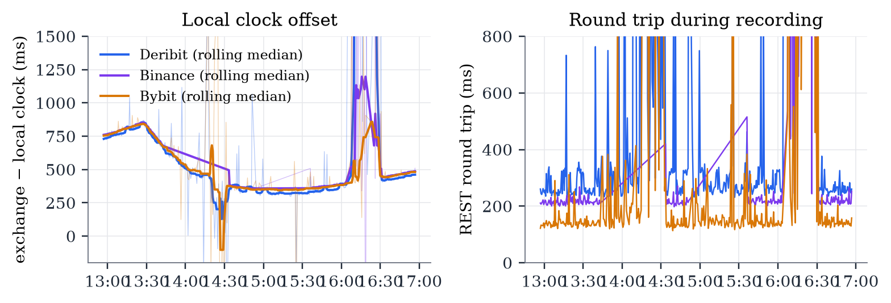
During the recording, the research machine's internet service provider intermittently resolved every *.binance.com host name to a non-routable sink address, while public DNS resolvers returned Binance's real addresses. This made all Binance feeds — options and the perpetual future — disappear for long periods. The research design deliberately did not bypass the block; instead Binance data are used only while the system resolver reached Binance, and outage windows are detected and masked. An outage is defined as a gap of more than 60 seconds between consecutive Binance perpetual-future price changes; because the perpetual changes price several times per second in normal conditions, a silence of a minute is unambiguous. Table 3 lists the ten outages detected, totalling 112 minutes, dominated by two long gaps of 50.4 and 44.6 minutes. The regression analysis in Section 7.4 applies a stricter sample filter, dropping any one-second sample at which the Binance perpetual is more than five seconds stale. Figure 2 shows message intensity per minute with outages shaded.
| Start (UTC) | End (UTC) | Minutes |
|---|---|---|
| 13:43:29 | 14:33:51 | 50.4 |
| 14:51:35 | 15:36:11 | 44.6 |
| 16:03:49 | 16:07:32 | 3.7 |
| 16:07:39 | 16:09:08 | 1.5 |
| 16:16:06 | 16:17:45 | 1.7 |
| 16:18:40 | 16:20:05 | 1.4 |
| 16:20:05 | 16:22:52 | 2.8 |
| 16:23:03 | 16:25:07 | 2.1 |
| 16:25:54 | 16:28:25 | 2.5 |
| 16:28:58 | 16:30:14 | 1.3 |
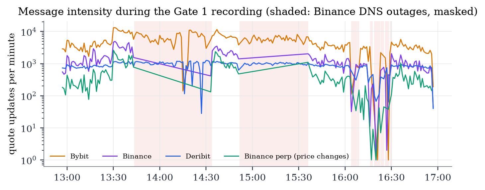
Table 4 breaks the recording down by source and record type. Bybit's 25-level order-book channel dominates the message count (1.17 million book updates, 81 per second across twelve options), followed by Deribit's batched ticker (206,194 records, 14.3 per second) and Binance's book-ticker stream (202,566 records, 14.1 per second, net of outages). Table 5 counts connection events: the Binance sockets recorded 1,953 disconnections and 110 successful connections, reflecting repeated reconnection attempts during the DNS outages, whereas Bybit and Deribit disconnected 45 and 51 times respectively over four hours. Per-instrument record counts are reported in Appendix Table 29.
| Source | Record kind | Records | Instruments / series | Records per second |
|---|---|---|---|---|
| Binance | m | 86,844 | 12 | 6.03 |
| Binance | q | 202,566 | 12 | 14.07 |
| Binance perp | q | 71,805 | 2 | 4.99 |
| Bybit | m | 317,704 | 12 | 22.06 |
| Bybit | q | 1,171,941 | 12 | 81.37 |
| Deribit | q | 206,194 | 12 | 14.32 |
| Deribit index | q | 24,796 | 2 | 1.72 |
| Deribit perp | q | 74,271 | 2 | 5.16 |
| Socket | Event | Count |
|---|---|---|
| binance | conn | 110 |
| binance | disconnect | 1953 |
| binance_mark | conn | 28 |
| binance_mark | disconnect | 342 |
| binance_perp | conn | 35 |
| binance_perp | disconnect | 350 |
| bybit | conn | 15 |
| bybit | disconnect | 45 |
| deribit | conn | 20 |
| deribit | disconnect | 51 |
The apparent one-way delay of a feed is the local arrival time, mapped onto the exchange clock with the median offset, minus the exchange's own event timestamp. Its absolute level inherits any error in the offset estimate, but differences between feeds measured at the same time are robust to that error. Table 6 and Figure 3 report the distributions. The median Deribit option update arrives 649 ms after its own timestamp, against 120 ms for Binance and 160 ms for Bybit: Deribit's option feed reaches this machine about 490–530 ms later than the other two. Part of the difference reflects the 100 ms batching of Deribit's public ticker channel and part the network path. The upper tails are long for two reasons unrelated to the network: Bybit order-book snapshots carry the matching-engine timestamp of the last book change, which can be many seconds old when the snapshot is sent, and Deribit tickers for quiet instruments can carry stale timestamps. These records affect only the tails (the share of records above two seconds is reported in the table); medians and the lead-lag analysis, which uses changes in quotes, are not affected.
| Feed | Records | p5 | p25 | p50 | p75 | Share > 2 s | p50 minus Bybit p50 |
|---|---|---|---|---|---|---|---|
| Deribit | 206,194 | 79 | 402 | 649 | 1,054 | 10.6% | 489 |
| Binance | 289,410 | -274 | -201 | 120 | 196 | 3.3% | -40 |
| Bybit | 1,489,645 | -278 | -83 | 160 | 192 | 11.6% | 0 |
| Binance perp | 71,805 | -270 | -192 | 120 | 202 | 1.7% | -40 |
| Deribit perp | 74,271 | -169 | 103 | 265 | 350 | 8.9% | 105 |
| Deribit index | 24,796 | -222 | 59 | 236 | 263 | 7.7% | 76 |
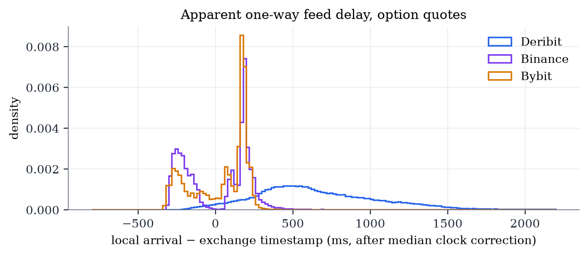
Reachability. All REST endpoints on the three exchanges returned HTTP 200 with cold latencies of roughly 200–550 ms (Appendix Table 26). Deribit's public ticker and Bybit's ticker and order-book channels delivered immediately. Binance required investigation. Its historical options websocket host returned HTTP 404. On the futures websocket host, only two option streams delivered any data: a whole-chain mark-price stream at a one-second cadence (/market/ws/<underlying>@optionMarkPrice) and per-symbol best-bid-and-offer updates on the public path with lower-case symbol names (/public/ws/<symbol>@bookTicker). Upper-case symbol names, depth streams, option ticker streams and trade streams all accepted connections and delivered nothing (Table 7). This kind of undocumented behaviour is worth recording because a researcher who subscribed to the wrong stream would conclude, wrongly, that Binance's options are inactive.
| Stream URL | Messages received | Median gap (ms) |
|---|---|---|
| fstream.binance.com/public/ws/BTC-261024-81750-C@bookTicker | 0 | — |
| fstream.binance.com/public/ws/BTC-261024-81750-C@depth10@100ms | 0 | — |
| fstream.binance.com/public/ws/BTC-261024-81750-C@depth10 | 0 | — |
| fstream.binance.com/public/ws/BTC-261024-81750-C@depth20@100ms | 0 | — |
| fstream.binance.com/public/ws/BTC-261024-81750-C@trade | 0 | — |
| fstream.binance.com/public/ws/BTC-261024-81750-C@optionTicker | 0 | — |
| fstream.binance.com/public/ws/BTC-261024-81750-C@ticker | 0 | — |
| fstream.binance.com/public/ws/btcusdt@optionMarkPrice | 0 | — |
| fstream.binance.com/public/ws/btc-261024-81750-c@bookTicker | 13 | 18 |
| fstream.binance.com/market/ws/BTC-261024-81750-C@bookTicker | 0 | — |
| fstream.binance.com/market/ws/BTC-261024-81750-C@depth10@100ms | 0 | — |
| fstream.binance.com/market/ws/BTC-261024-81750-C@depth10 | 0 | — |
| fstream.binance.com/market/ws/BTC-261024-81750-C@depth20@100ms | 0 | — |
| fstream.binance.com/market/ws/BTC-261024-81750-C@trade | 0 | — |
| fstream.binance.com/market/ws/BTC-261024-81750-C@optionTicker | 0 | — |
| fstream.binance.com/market/ws/BTC-261024-81750-C@ticker | 0 | — |
| fstream.binance.com/market/ws/btcusdt@optionMarkPrice | 20 | -10 |
| fstream.binance.com/market/ws/btc-261024-81750-c@bookTicker | 0 | — |
Chain census. Table 8 reports the option chains at 12:52 UTC. Deribit listed 930 BTC and 784 ETH options across 12 expiries; Bybit 686 and 568 across 11; Binance 638 and 528 across 11. None of the chains is "near-empty". Twenty-four-hour volume in contracts (one coin each) was 18,159 BTC options on Deribit against 6,970 on Bybit and 6,201 on Binance: Deribit trades about 2.6 times as many BTC options as either competitor. In ETH options the ordering reverses: Bybit traded 157,982 contracts, Binance 125,198 and Deribit 120,116.
| Exchange | Coin | Instruments | Expiries | Unique strikes | Two-sided books | 24h volume (contracts) | Nearest expiry | Longest expiry |
|---|---|---|---|---|---|---|---|---|
| Binance | BTC | 638 | 11 | 83 | 626 | 6,201 | 2026-10-24 | 2027-09-24 |
| Bybit | BTC | 686 | 11 | 94 | 668 | 6,970 | 2026-10-24 | 2027-09-24 |
| Deribit | BTC | 930 | 12 | 92 | 878 | 18,159 | 2026-10-24 | 2027-09-24 |
| Binance | ETH | 528 | 11 | 62 | 523 | 125,198 | 2026-10-24 | 2027-09-24 |
| Bybit | ETH | 568 | 11 | 83 | 557 | 157,982 | 2026-10-24 | 2027-09-24 |
| Deribit | ETH | 784 | 12 | 85 | 757 | 120,116 | 2026-10-24 | 2027-09-24 |
Spreads and depth. The premise check is decisive. Table 9 and Figure 4 show near-expiry at-the-money spreads at the census time. BTC options were quoted $5 wide on Binance and Bybit — about 1% of the option price — against $33–82 on Deribit, or 8–15% of the price. ETH options were quoted $0.10–0.20 wide on Bybit, $0.20–0.60 on Binance and about $2.40 on Deribit. Over the full four-hour recording (Table 10, Figure 5) the median BTC spread was $5.00 on Bybit, $10.00 on Binance and $40.83 on Deribit, and the median ETH spread $0.30, $0.40 and $2.40 respectively. Displayed size at the touch was 8–19 BTC on Binance, 4–9 BTC on Bybit and 1–51 BTC on Deribit (Appendix Table 28).
| Exchange | Instrument | DTE (days) | Strike | C/P | Bid (USD) | Ask (USD) | Spread (USD) | Spread (% of mid) | Mark IV |
|---|---|---|---|---|---|---|---|---|---|
| Binance | BTC-261024-81750-C | 0.80 | 81,750 | C | 450.00 | 455.00 | 5.00 | 1.1% | 29.9% |
| Binance | BTC-261024-81750-P | 0.80 | 81,750 | P | 465.00 | 470.00 | 5.00 | 1.1% | 29.9% |
| Binance | BTC-261025-81500-C | 1.80 | 81,500 | C | 635.00 | 640.00 | 5.00 | 0.8% | 21.9% |
| Binance | BTC-261025-81500-P | 1.80 | 81,500 | P | 390.00 | 395.00 | 5.00 | 1.3% | 21.9% |
| Binance | BTC-261026-82000-C | 2.80 | 82,000 | C | 480.00 | 485.00 | 5.00 | 1.0% | 20.9% |
| Binance | BTC-261026-82000-P | 2.80 | 82,000 | P | 715.00 | 730.00 | 15.00 | 2.1% | 20.9% |
| Binance | ETH-261024-2400-C | 0.80 | 2,400 | C | 17.40 | 17.80 | 0.40 | 2.3% | 39.3% |
| Binance | ETH-261024-2400-P | 0.80 | 2,400 | P | 17.60 | 17.80 | 0.20 | 1.1% | 39.3% |
| Binance | ETH-261025-2400-C | 1.80 | 2,400 | C | 20.20 | 20.80 | 0.60 | 2.9% | 30.3% |
| Binance | ETH-261025-2400-P | 1.80 | 2,400 | P | 20.40 | 20.60 | 0.20 | 1.0% | 30.3% |
| Binance | ETH-261026-2400-C | 2.80 | 2,400 | C | 25.00 | 25.20 | 0.20 | 0.8% | 29.8% |
| Binance | ETH-261026-2400-P | 2.80 | 2,400 | P | 24.80 | 25.00 | 0.20 | 0.8% | 29.8% |
| Bybit | BTC-24OCT26-81750-P-USDT | 0.80 | 81,750 | P | 460.00 | 465.00 | 5.00 | 1.1% | 29.8% |
| Bybit | BTC-24OCT26-81750-C-USDT | 0.80 | 81,750 | C | 445.00 | 450.00 | 5.00 | 1.1% | 29.8% |
| Bybit | BTC-25OCT26-81750-P-USDT | 1.80 | 81,750 | P | 485.00 | 495.00 | 10.00 | 2.0% | 21.6% |
| Bybit | BTC-25OCT26-81750-C-USDT | 1.80 | 81,750 | C | 485.00 | 490.00 | 5.00 | 1.0% | 21.6% |
| Bybit | BTC-26OCT26-81750-C-USDT | 2.80 | 81,750 | C | 610.00 | 615.00 | 5.00 | 0.8% | 21.2% |
| Bybit | BTC-26OCT26-81750-P-USDT | 2.80 | 81,750 | P | 595.00 | 600.00 | 5.00 | 0.8% | 21.2% |
| Bybit | ETH-24OCT26-2400-C-USDT | 0.80 | 2,400 | C | 17.70 | 17.80 | 0.10 | 0.6% | 39.8% |
| Bybit | ETH-24OCT26-2400-P-USDT | 0.80 | 2,400 | P | 17.80 | 17.90 | 0.10 | 0.6% | 39.8% |
| Bybit | ETH-25OCT26-2400-C-USDT | 1.80 | 2,400 | C | 20.50 | 20.70 | 0.20 | 1.0% | 30.7% |
| Bybit | ETH-25OCT26-2400-P-USDT | 1.80 | 2,400 | P | 20.40 | 20.60 | 0.20 | 1.0% | 30.7% |
| Bybit | ETH-26OCT26-2400-C-USDT | 2.80 | 2,400 | C | 25.10 | 25.20 | 0.10 | 0.4% | 30.0% |
| Bybit | ETH-26OCT26-2400-P-USDT | 2.80 | 2,400 | P | 24.90 | 25.10 | 0.20 | 0.8% | 30.0% |
| Deribit | BTC-24OCT26-81500-P | 0.80 | 81,500 | P | 367.38 | 400.04 | 32.66 | 8.5% | 30.2% |
| Deribit | BTC-24OCT26-81500-C | 0.80 | 81,500 | C | 489.84 | 571.48 | 81.64 | 15.4% | 30.2% |
| Deribit | BTC-25OCT26-81500-P | 1.80 | 81,500 | P | 400.12 | 449.11 | 48.99 | 11.5% | 22.2% |
| Deribit | BTC-25OCT26-81500-C | 1.80 | 81,500 | C | 530.77 | 612.42 | 81.66 | 14.3% | 22.2% |
| Deribit | BTC-26OCT26-81500-P | 2.80 | 81,500 | P | 490.04 | 571.71 | 81.67 | 15.4% | 21.9% |
| Deribit | BTC-26OCT26-81500-C | 2.80 | 81,500 | C | 694.22 | 735.06 | 40.84 | 5.7% | 21.9% |
| Deribit | ETH-24OCT26-2400-C | 0.80 | 2,400 | C | 14.38 | 16.78 | 2.40 | 15.4% | 39.2% |
| Deribit | ETH-24OCT26-2400-P | 0.80 | 2,400 | P | 17.97 | 20.37 | 2.40 | 12.5% | 39.2% |
| Deribit | ETH-25OCT26-2400-P | 1.80 | 2,400 | P | 20.37 | 22.77 | 2.40 | 11.1% | 30.8% |
| Deribit | ETH-25OCT26-2400-C | 1.80 | 2,400 | C | 17.98 | 20.37 | 2.40 | 12.5% | 30.8% |
| Deribit | ETH-26OCT26-2400-P | 2.80 | 2,400 | P | 25.17 | 27.57 | 2.40 | 9.1% | 30.2% |
| Deribit | ETH-26OCT26-2400-C | 2.80 | 2,400 | C | 22.77 | 25.17 | 2.40 | 10.0% | 30.2% |
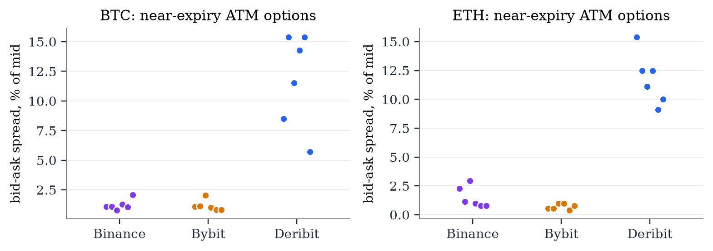
| Exchange | Coin | Quotes | Median spread (USD) | p10 | p90 | Median spread (% of mid) | Median mid (USD) |
|---|---|---|---|---|---|---|---|
| Binance | BTC | 121,392 | 10.00 | 5.00 | 225.00 | 2.74% | 390.00 |
| Binance | ETH | 81,127 | 0.40 | 0.20 | 1.40 | 4.71% | 13.80 |
| Bybit | BTC | 741,357 | 5.00 | 5.00 | 30.00 | 1.98% | 387.50 |
| Bybit | ETH | 430,584 | 0.30 | 0.10 | 2.40 | 2.41% | 15.85 |
| Deribit | BTC | 110,654 | 40.83 | 24.48 | 122.42 | 14.29% | 387.81 |
| Deribit | ETH | 91,994 | 2.40 | 0.48 | 13.24 | 15.38% | 15.03 |
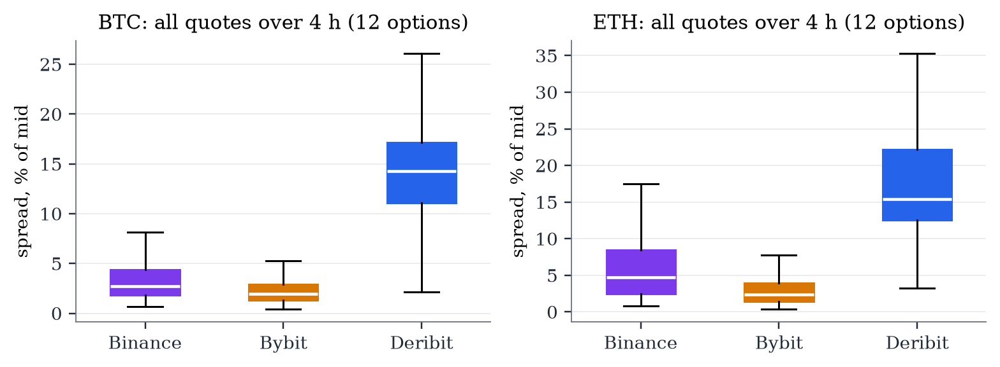
These facts change the framing of the hypothesis. In short-dated at-the-money options, Binance and Bybit are not thin venues that passively shadow Deribit; they have tighter markets and, in ETH, more volume. Deribit's coin-denominated tick is a mechanical reason for its wide quotes: an option worth 0.005 BTC can be quoted only in 0.0001 BTC steps ($8.15), and above 0.005 BTC only in 0.0005 BTC steps ($40.75). Gate 0 is recorded as a pass because the exchanges are reachable and liquid, but the motivating premise has already failed.
Settlement currency and clocks. Two further facts established at Gate 0 shape everything that follows. First, the USD/USDT strike gap of Section 3.3: before converting, Deribit and Bybit quotes appeared crossed by $23–34 per BTC contract most of the time; after converting, they never crossed in either paper-trading session (Section 10.5). Second, the local clock offset of Section 5.2, which is why exchange timestamps are used as the common clock.
Sampling. For each option and exchange, the mid price m = (bid + ask)/2 is taken from best-bid-and-offer records. Mid prices rather than last trades are used because trades in individual option strikes are sparse and noisy; mark prices are used as a secondary check. Each series is sampled on a 50 ms grid by taking the last observation in each bin and carrying it forward, and changes Δm are taken bin to bin. The underlying control is the mid of the Binance perpetual future for the same coin. Two clocks are used: the exchange clock (exchange timestamps) and the local clock (local arrival times mapped onto the exchange clock with the median offset). The first measures where information appears; the second measures what this machine can observe.
Cross-correlation. For a candidate leader a and follower b, the lagged correlation of standardised changes is
computed per option and averaged across options of the same coin. For the perpetual as leader, put correlations are sign-flipped. A positive peak at L > 0 indicates that a leads b. The asymmetry of the whole profile is summarised by a lead-lag ratio,
which exceeds one when correlation mass sits at positive lags. Cross-correlations use the clean window before the first Binance outage, 12:58:02–13:43:29 UTC (45.5 minutes), so that the outage does not mechanically depress correlations involving Binance.
Event study. A leader "move" is a change in its mid of at least $2.50 for BTC options or $0.10 for ETH options (about one follower tick in mid terms), de-clustered so that events are at least two seconds apart. For each event i at time ti with sign si, the follower's signed cumulative move from ti − 5 s to ti + h is aggregated as a ratio of sums,
so that R(h) rises from zero towards R(10 s), which is below one because some follower moves are in the opposite direction. The share of the eventual move already realised at horizon h is R(h)/R(10 s).
Incremental information. The key question is not whether Deribit and the followers co-move — they share the underlying — but whether Deribit's quote changes predict the followers' next moves beyond what the perpetual and the follower's own recent move already predict. At each one-second sample time t, per option and follower f, define on the local clock
where all changes on the right are over the preceding second, c = +1 for calls and −1 for puts, the delay d ∈ {0, 150, 250} ms represents reaction time and the horizon h ∈ {1, 5} s. Variables are standardised per series and pooled across options; samples at which the Binance perpetual is more than five seconds stale are dropped. Standard errors are heteroskedasticity- and autocorrelation-consistent (Newey–West, five lags). Because pooled high-frequency regressions can produce large t-statistics from subtle dependence, the significance of βD is also assessed with a circular-shift placebo: Deribit's series is shifted in time by a random offset of 60–600 seconds, which preserves its own autocorrelation but destroys any genuine timing relation, and the regression is re-estimated 200 times.
Economic magnitude. Finally, the dollar value of Deribit's information is measured directly. A "pure" Deribit move is a one-second Deribit mid change of at least $4 (BTC) or $0.60 (ETH) — half a Deribit tick, i.e. one side of the book moving by one tick — during which the perpetual moved by no more than 0.5 bp. The follower's mid change over the next 1 or 5 seconds (after a 150 ms reaction delay), signed by the direction of the Deribit move, is averaged across events with a bootstrap confidence interval.
Figures 6 and 7 and Table 11 report the cross-correlation profiles. On the exchange clock the perpetual future leads every option venue. For BTC the correlation between perpetual changes and subsequent option-mid changes peaks at +50 ms for Bybit (peak correlation 0.296, LLR 15.3), +100 ms for Binance (0.081, LLR 12.9) and +100 ms for Deribit (0.139, LLR 16.8). ETH shows the same pattern with peaks at +50 ms (Bybit), 0 ms (Binance) and +100 ms (Deribit). Because Deribit's public ticker is batched at 100 ms, its +100 ms peak is an upper bound on its reaction time; the data cannot establish that Deribit reacts more slowly than the other two on the exchange clock, only that it does not react earlier.
Between option exchanges the picture is the opposite of the hypothesis. Deribit-to-follower correlations are small (peak 0.03–0.07) and peak at zero or negative lags, with lead-lag ratios below 1.3: correlation mass sits slightly more on the side where the "follower" moves first. On the local clock, which includes Deribit's half-second feed delay, the Deribit-to-follower peaks move to −350 to −500 ms: by the time a Deribit change is observed here, the corresponding Binance or Bybit change has typically already been observed.
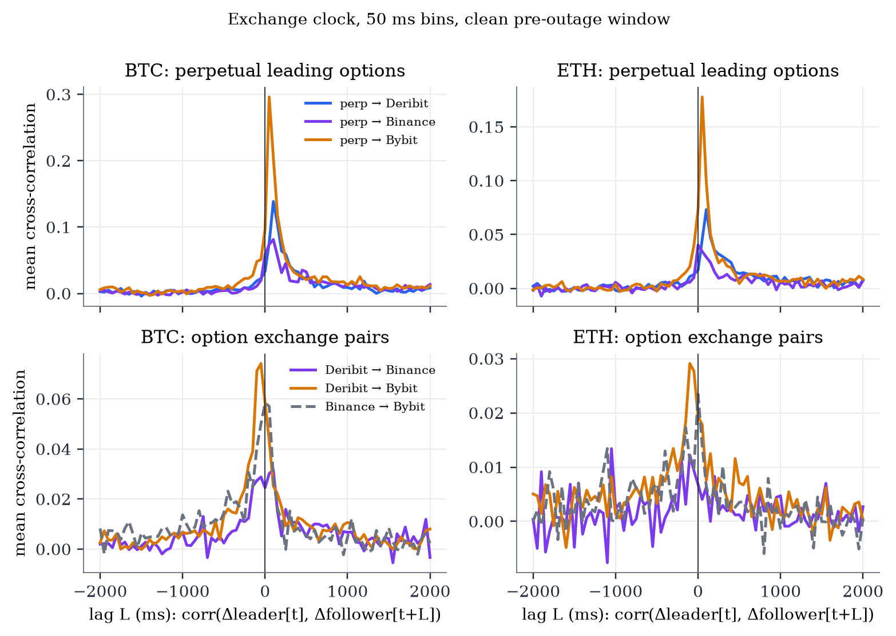
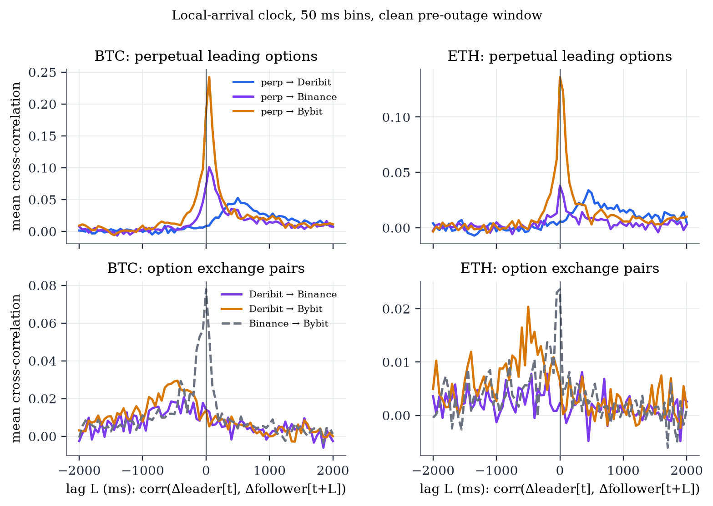
| Clock | Coin | Leader → follower | Peak lag (ms) | Peak corr | Corr at 0 | LLR (leader leads) |
|---|---|---|---|---|---|---|
| exch | BTC | Binance → Bybit | 0 | 0.058 | 0.058 | 0.62 |
| exch | BTC | Deribit → Binance | 100 | 0.032 | 0.025 | 1.26 |
| exch | BTC | Deribit → Bybit | -50 | 0.074 | 0.058 | 0.36 |
| exch | BTC | Perpetual → Binance | 100 | 0.081 | 0.059 | 12.92 |
| exch | BTC | Perpetual → Bybit | 50 | 0.296 | 0.097 | 15.26 |
| exch | BTC | Perpetual → Deribit | 100 | 0.139 | 0.034 | 16.77 |
| exch | ETH | Binance → Bybit | 0 | 0.023 | 0.023 | 0.46 |
| exch | ETH | Deribit → Binance | -1050 | 0.013 | 0.007 | 0.60 |
| exch | ETH | Deribit → Bybit | -100 | 0.029 | 0.019 | 0.55 |
| exch | ETH | Perpetual → Binance | 0 | 0.040 | 0.040 | 3.16 |
| exch | ETH | Perpetual → Bybit | 50 | 0.178 | 0.074 | 12.07 |
| exch | ETH | Perpetual → Deribit | 100 | 0.073 | 0.017 | 10.35 |
| local | BTC | Binance → Bybit | 0 | 0.078 | 0.078 | 0.43 |
| local | BTC | Deribit → Binance | -350 | 0.021 | 0.014 | 0.37 |
| local | BTC | Deribit → Bybit | -450 | 0.029 | 0.014 | 0.19 |
| local | BTC | Perpetual → Binance | 50 | 0.101 | 0.072 | 6.79 |
| local | BTC | Perpetual → Bybit | 50 | 0.242 | 0.189 | 4.26 |
| local | BTC | Perpetual → Deribit | 500 | 0.053 | 0.009 | 17.06 |
| local | ETH | Binance → Bybit | 0 | 0.024 | 0.024 | 0.36 |
| local | ETH | Deribit → Binance | 6800 | 0.010 | 0.002 | 0.74 |
| local | ETH | Deribit → Bybit | -500 | 0.020 | 0.007 | 0.31 |
| local | ETH | Perpetual → Binance | 0 | 0.038 | 0.038 | 1.90 |
| local | ETH | Perpetual → Bybit | 0 | 0.136 | 0.136 | 3.05 |
| local | ETH | Perpetual → Deribit | 450 | 0.034 | 0.006 | 8.64 |
Figure 8 and Table 12 report the event study. On the exchange clock, at the moment of a Deribit move Binance and Bybit have already realised 0.28–0.30 of the normalised move, against a final level of about 0.61 after ten seconds — roughly half of what they will do. On the local clock the corresponding figures are 0.40–0.48 against 0.57–0.61: when a Deribit move arrives at this machine, Binance has already made 85% and Bybit 65% of the net move it will make over the window. The reverse comparison (a Binance or Bybit move as the event, Deribit as the follower) shows Deribit having realised 30–44% of its eventual move at the event time on the exchange clock — again a sizeable share already done at the moment of the "leading" move, consistent with all three responding to a common driver rather than to each other.
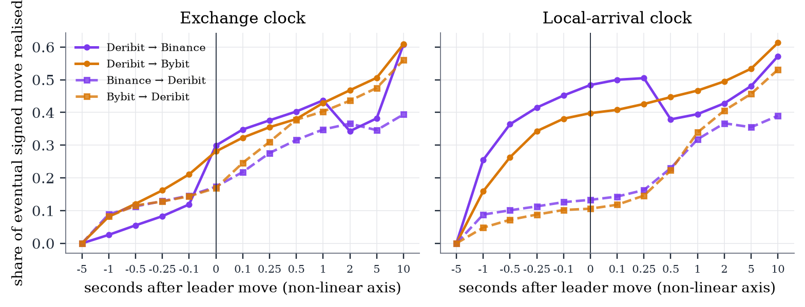
| Clock | Leader | Follower | Events | -1000ms | 0ms | 500ms | 1000ms | 5000ms | 10000ms | Done at 0 / done at +10 s |
|---|---|---|---|---|---|---|---|---|---|---|
| exch | Deribit | Binance | 1285 | 0.026 | 0.299 | 0.403 | 0.437 | 0.382 | 0.608 | 49% |
| exch | Deribit | Bybit | 1525 | 0.082 | 0.281 | 0.380 | 0.429 | 0.506 | 0.609 | 46% |
| exch | Binance | Deribit | 3112 | 0.089 | 0.173 | 0.316 | 0.348 | 0.346 | 0.394 | 44% |
| exch | Binance | Bybit | 2702 | 0.059 | 0.159 | 0.263 | 0.291 | 0.340 | 0.389 | 41% |
| exch | Bybit | Deribit | 2652 | 0.082 | 0.169 | 0.378 | 0.403 | 0.475 | 0.560 | 30% |
| exch | Bybit | Binance | 2100 | 0.124 | 0.196 | 0.224 | 0.260 | 0.384 | 0.551 | 36% |
| local | Deribit | Binance | 1279 | 0.255 | 0.484 | 0.379 | 0.395 | 0.481 | 0.572 | 85% |
| local | Deribit | Bybit | 1513 | 0.159 | 0.398 | 0.447 | 0.467 | 0.534 | 0.613 | 65% |
| local | Binance | Deribit | 3112 | 0.088 | 0.133 | 0.230 | 0.318 | 0.355 | 0.390 | 34% |
| local | Binance | Bybit | 2704 | 0.062 | 0.167 | 0.263 | 0.290 | 0.343 | 0.388 | 43% |
| local | Bybit | Deribit | 2646 | 0.048 | 0.106 | 0.223 | 0.339 | 0.457 | 0.531 | 20% |
| local | Bybit | Binance | 2091 | 0.128 | 0.193 | 0.230 | 0.265 | 0.386 | 0.546 | 35% |
Table 13 reports equation (8) estimated on 70,854 (Binance) and 70,962 (Bybit) one-second samples over 3.98 hours. On its own, Deribit's last-second change predicts the followers' next moves strongly (t = 6.4–10.3), but most of that is shared information about the underlying. With the perpetual and the follower's own lag controlled, Deribit's coefficient falls but remains significant in every specification: t = 3.7–5.2 for Binance and 4.1–6.7 for Bybit. The circular-shift placebo confirms it (Figure 9). For the headline specification (d = 150 ms, h = 5 s) the observed standardised coefficient is 0.0317 for Binance and 0.0489 for Bybit, against placebo distributions centred on zero with standard deviations of 0.0066 and 0.0089; none of the 200 shifted series produced a coefficient as large in absolute value (p < 0.005), corresponding to z-scores of 4.8 and 5.5. An earlier 20-minute version of the regression, with a quarter of the sample, gave t ≈ 1; the effect is real but small enough that it needs hours of data to detect.
| Follower | Target | N | β Deribit | t | β Deribit (alone) | t (alone) | β perp | t perp | β own | t own | R2 |
|---|---|---|---|---|---|---|---|---|---|---|---|
| Binance | Δ follower over (t+0ms, t+0+1s] | 70,854 | 0.0257 | 3.70 | 0.0458 | 8.48 | 0.2190 | 4.77 | -0.1494 | -3.81 | 0.0578 |
| Binance | Δ follower over (t+0ms, t+0+5s] | 70,854 | 0.0322 | 4.32 | 0.0546 | 10.27 | 0.2509 | 5.85 | -0.1790 | -4.56 | 0.0780 |
| Binance | Δ follower over (t+150ms, t+150+1s] | 70,854 | 0.0300 | 5.17 | 0.0439 | 8.89 | 0.1366 | 4.09 | -0.0756 | -3.13 | 0.0216 |
| Binance | Δ follower over (t+150ms, t+150+5s] | 70,854 | 0.0317 | 4.62 | 0.0519 | 9.81 | 0.2024 | 5.63 | -0.1183 | -3.56 | 0.0469 |
| Binance | Δ follower over (t+250ms, t+250+1s] | 70,854 | 0.0300 | 5.20 | 0.0419 | 8.35 | 0.1186 | 3.51 | -0.0690 | -2.84 | 0.0169 |
| Binance | Δ follower over (t+250ms, t+250+5s] | 70,854 | 0.0307 | 4.39 | 0.0496 | 9.34 | 0.1927 | 5.13 | -0.1170 | -3.51 | 0.0431 |
| Bybit | Δ follower over (t+0ms, t+0+1s] | 70,962 | 0.0387 | 4.14 | 0.0535 | 7.74 | 0.1480 | 3.58 | -0.0401 | -0.83 | 0.0221 |
| Bybit | Δ follower over (t+0ms, t+0+5s] | 70,962 | 0.0530 | 6.23 | 0.0641 | 9.86 | 0.1381 | 3.46 | -0.0538 | -1.28 | 0.0208 |
| Bybit | Δ follower over (t+150ms, t+150+1s] | 70,962 | 0.0329 | 4.54 | 0.0499 | 6.97 | 0.1163 | 4.05 | -0.0003 | -0.03 | 0.0157 |
| Bybit | Δ follower over (t+150ms, t+150+5s] | 70,962 | 0.0489 | 6.58 | 0.0636 | 8.82 | 0.1208 | 3.65 | -0.0172 | -1.38 | 0.0173 |
| Bybit | Δ follower over (t+250ms, t+250+1s] | 70,962 | 0.0285 | 4.24 | 0.0427 | 6.43 | 0.0930 | 3.82 | 0.0035 | 0.33 | 0.0105 |
| Bybit | Δ follower over (t+250ms, t+250+5s] | 70,962 | 0.0447 | 6.70 | 0.0578 | 8.81 | 0.1054 | 3.56 | -0.0141 | -1.23 | 0.0135 |
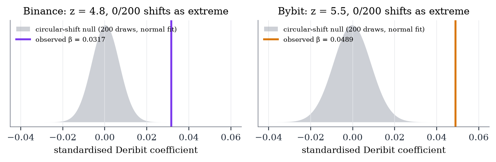
Statistical significance answers the wrong question for a trader. Table 14 and Figure 10 answer the right one. After a pure Deribit move in a BTC option, the follower's mid drifts in the same direction by $0.37 (Binance) and $0.33 (Bybit) over the next second, and by $1.05 and $0.96 over the next five seconds, with bootstrap confidence intervals that exclude zero (2,356 events). For ETH the drifts are $0.02–0.19 per contract (446 events), with the Binance one-second interval including zero. The cost of capturing these drifts with taker orders is one spread crossing plus two taker fees: about $5 + 2 × $24.51 = $54 per BTC contract, and at least $1.44 in fees alone per ETH contract. The most favourable ratio of expected drift to cost is 1.9%.
| Follower | Coin | Horizon | Events | Mean move (USD) | 95% CI | Median spread (USD) | Round-trip fees | Move / (fees + spread) |
|---|---|---|---|---|---|---|---|---|
| Binance | BTC | 1 s | 2356 | 0.368 | [0.20, 0.53] | 5.00 | 49.02 | 0.7% |
| Binance | BTC | 5 s | 2356 | 1.047 | [0.67, 1.44] | 5.00 | 49.02 | 1.9% |
| Binance | ETH | 1 s | 446 | 0.093 | [-0.07, 0.27] | 1.80 | 1.44 | 2.9% |
| Binance | ETH | 5 s | 446 | 0.185 | [0.01, 0.39] | 1.80 | 1.44 | 5.7% |
| Bybit | BTC | 1 s | 2356 | 0.326 | [0.20, 0.45] | 5.00 | 49.02 | 0.6% |
| Bybit | BTC | 5 s | 2356 | 0.962 | [0.65, 1.26] | 5.00 | 49.02 | 1.8% |
| Bybit | ETH | 1 s | 446 | 0.021 | [0.01, 0.04] | 0.80 | 1.44 | 0.9% |
| Bybit | ETH | 5 s | 446 | 0.090 | [0.05, 0.13] | 0.80 | 1.44 | 4.0% |
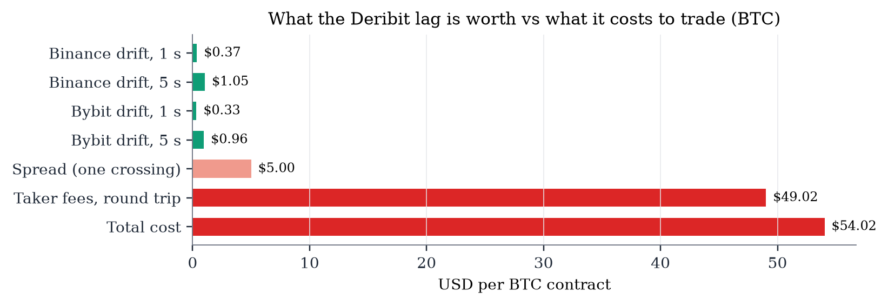
Gate 1 verdict. A lead from Deribit to Binance and Bybit exists in a statistical sense: Deribit's quotes contain information about the followers' next few seconds that the perpetual does not. But the perpetual, not Deribit, leads the option market, and the residual Deribit information is worth about two per cent of the cost of trading it. Gate 1 fails on economics.
Gate 2 measures how quickly the research machine could act on a Deribit move. Warm REST round trips were measured with 200 requests to each exchange's lightweight time or ping endpoint (scripts/04_latency.py); no orders were sent. Table 15 reports the distribution: median round trips of 138 ms to Bybit, 211–213 ms to Binance and 255 ms to Deribit, with 95th percentiles of 236–354 ms. An order is assumed to reach the exchange after half a round trip, so the one-way order latency is about 69 ms to Bybit and 105 ms to Binance.
| Endpoint | n | min | p5 | p50 | p95 | max |
|---|---|---|---|---|---|---|
| binance_eapi_ping | 200 | 194.0 | 200.0 | 210.7 | 235.8 | 285.5 |
| binance_eapi_time | 200 | 195.0 | 201.2 | 212.6 | 244.9 | 393.9 |
| bybit_v5_time | 200 | 116.9 | 124.2 | 137.9 | 307.3 | 614.0 |
| deribit_time | 200 | 224.2 | 232.4 | 254.7 | 353.5 | 991.1 |
The earliest possible reaction to a Deribit move is the sum of Deribit's feed delay, the decision time (negligible here) and the one-way order latency. With a median Deribit feed delay of roughly 650 ms on the exchange clock (Section 5.5) and a one-way order latency of 70–105 ms, the order arrives roughly 0.7–0.9 seconds after the Deribit move occurred. Section 7.3 showed that by the time the Deribit move is merely observed here, Binance and Bybit have already made 65–85% of their move; by the time an order lands, the remaining drift is a fraction of a dollar. Liquidity providers on Binance and Bybit who quote off the perpetual from co-located infrastructure respond in tens of milliseconds. Gate 2 fails.
Gates 1 and 2 had failed, so under the pre-specified rule the research would stop. Gate 3 was run anyway, for two reasons: to replace the inference "the edge is too small to trade" with a direct measurement under realistic execution, and to test a second, latency-insensitive strategy — crossed-market arbitrage — that the lead-lag analysis does not address.
The engine (src/paper/engine.py, reproduced in Appendix D) consumes the same public websocket feeds as the recorder and maintains, for every exchange and option, a 15-second history of book states indexed by exchange timestamp. Nothing is sent to any exchange. Orders are simulated as immediate-or-cancel (IOC) limit orders against the book of the target exchange as it stood on the exchange clock when the order would have arrived:
where tdecide is the local decision time mapped to the exchange clock with a continuously updated offset (re-estimated every 60 seconds and smoothed exponentially) and RTTv is the measured median round trip to exchange v (138 ms Bybit, 211 ms Binance, 255 ms Deribit). The fill is not evaluated until local data up to tarrive plus the 95th-percentile feed delay of the slowest relevant exchange has had time to arrive. This ensures that the engine never uses information that would not have been available, and that the book against which the fill is evaluated is the one the order would actually have met.
S1 — latency-follow. On every change in the Deribit mid of an option, the engine checks each follower exchange. If the follower's mid has not moved in the direction of the Deribit move since the previous Deribit update ("stale") and the follower's spread is no wider than three ticks, the engine submits an IOC order on the follower at the stale price it last observed: a buy at the ask after an up-move, a sell at the bid after a down-move. If the book has moved through that price by the time the order arrives, the order does not fill. The position is closed at market after a holding period of 1, 5 or 30 seconds (plus half a round trip for the exit order). Size is one BTC contract or ten ETH contracts per signal, and each variant holds at most one open position per option. Each holding period is run in four variants: real latency or zero latency (the order is evaluated against the book at the Deribit event's own exchange timestamp, an unattainable oracle), and signal direction or random direction (a coin flip with identical timing, which isolates the value of Deribit's directional information from the mechanics of trading).
S2 — crossed-market arbitrage. Whenever, for the same option, exchange B's bid exceeds exchange A's ask after currency conversion and the worst-case strike gap of equation (3),
with exercise fee ε = 0.015% and a settlement-index haircut σ = 2 bp, the engine submits IOC orders on both legs, sized to the smaller displayed quantity (capped at 5 BTC or 50 ETH contracts), and holds the pair to expiry, where the payoffs cancel up to the strike gap. If only one leg fills, the excess is unwound at market on that exchange and the loss is charged. A one-second cool-down per option and pair prevents the same cross from being counted repeatedly.
Every simulated fill pays the following, in USD.
The universe is 56 options: BTC and ETH, the two nearest expiries, the seven strikes closest to spot, calls and puts (Binance lists a subset: 28 of the 56 in session 1 and 34 in session 2). Session 1 ran for 3.00 hours from 15:09 to 18:09 UTC on 23 October 2026 (overlapping the last 1.8 hours of the Gate 1 recording), with BTC at $81,500 and ETH at $2,400. Session 2 began at 18:02 UTC on 2 November 2026, with BTC at $77,047 and ETH at $2,256; it was planned for eleven hours and stopped after 18 minutes once it was clear that the result was not going to change. Binance was reachable for 78% of the minutes of session 1 and all of session 2.
Trades from the same variant overlap in time and respond to the same market moves, so they are not independent. Confidence intervals for mean net P&L per trade therefore use a cluster bootstrap in which whole one-minute blocks of trades are resampled (2,000 draws). The value of Deribit's directional information is tested by comparing mean gross P&L per trade between the signal and random-direction variants with a one-sided permutation test.
Tables 16 and 17 report every S1 variant in both sessions. With real latency and Deribit's direction, the strategy lost $20.76 per trade on Bybit with a one-second hold in session 1 (92,348 trades; 95% CI −$21.19 to −$20.34) and $34.94 on Binance (41,443 trades; −$35.59 to −$34.31). Longer holds were marginally worse. In session 2 the corresponding figures were −$32.08 (Bybit, 10,886 trades) and −$44.43 (Binance, 6,759 trades). Across the six real-latency signal variants and both sessions the strategy produced 236,146 simulated trades, of which four were profitable — all in session 1, Bybit, 30-second hold, with a best single trade of +$10.99. The zero-latency oracle did not help: in session 1 it lost $22.56 per trade on Bybit and $35.37 on Binance with a one-second hold, slightly worse than with real latency, because the oracle trades more often, including when the follower's book is moving.
| Exchange | Hold | Latency | Direction | Trades | Gross/trade | Fees/trade | Slip/trade | Net/trade | 95% CI (cluster bootstrap) | Win rate | Total net |
|---|---|---|---|---|---|---|---|---|---|---|---|
| Binance | 1 s | real | null | 41,434 | −$5.70 | $24.75 | $4.54 | −$34.99 | [-35.66, -34.34] | 0.000% | −$1,449,891 |
| Binance | 1 s | real | signal | 41,443 | −$5.68 | $24.72 | $4.54 | −$34.94 | [-35.59, -34.31] | 0.000% | −$1,448,104 |
| Binance | 1 s | zero | null | 63,903 | −$5.97 | $24.77 | $4.59 | −$35.34 | [-35.96, -34.73] | 0.000% | −$2,258,312 |
| Binance | 1 s | zero | signal | 63,903 | −$5.99 | $24.78 | $4.59 | −$35.37 | [-35.96, -34.76] | 0.000% | −$2,260,041 |
| Binance | 30 s | real | null | 4,416 | −$6.18 | $25.19 | $4.47 | −$35.83 | [-36.56, -35.10] | 0.023% | −$158,237 |
| Binance | 30 s | real | signal | 4,423 | −$6.30 | $25.21 | $4.47 | −$35.99 | [-36.71, -35.30] | 0.000% | −$159,168 |
| Binance | 30 s | zero | null | 4,697 | −$6.55 | $25.46 | $4.51 | −$36.52 | [-37.18, -35.88] | 0.000% | −$171,556 |
| Binance | 30 s | zero | signal | 4,697 | −$6.89 | $25.47 | $4.51 | −$36.87 | [-37.60, -36.16] | 0.000% | −$173,161 |
| Binance | 5 s | real | null | 18,601 | −$5.83 | $24.89 | $4.52 | −$35.24 | [-35.92, -34.66] | 0.000% | −$655,489 |
| Binance | 5 s | real | signal | 18,597 | −$5.87 | $24.86 | $4.52 | −$35.24 | [-35.88, -34.60] | 0.000% | −$655,389 |
| Binance | 5 s | zero | null | 23,208 | −$6.13 | $25.14 | $4.55 | −$35.83 | [-36.41, -35.24] | 0.000% | −$831,429 |
| Binance | 5 s | zero | signal | 23,208 | −$6.19 | $25.14 | $4.55 | −$35.88 | [-36.47, -35.31] | 0.000% | −$832,723 |
| Bybit | 1 s | real | null | 92,532 | −$3.86 | $14.05 | $3.00 | −$20.91 | [-21.34, -20.49] | 0.000% | −$1,934,693 |
| Bybit | 1 s | real | signal | 92,348 | −$3.81 | $13.96 | $2.99 | −$20.76 | [-21.19, -20.34] | 0.000% | −$1,917,502 |
| Bybit | 1 s | zero | null | 143,362 | −$4.32 | $15.04 | $3.17 | −$22.52 | [-23.01, -22.04] | 0.000% | −$3,228,808 |
| Bybit | 1 s | zero | signal | 143,362 | −$4.35 | $15.04 | $3.17 | −$22.56 | [-23.03, -22.09] | 0.000% | −$3,233,727 |
| Bybit | 30 s | real | null | 9,973 | −$4.23 | $14.48 | $2.94 | −$21.65 | [-22.11, -21.19] | 0.060% | −$215,947 |
| Bybit | 30 s | real | signal | 9,980 | −$4.17 | $14.23 | $2.91 | −$21.30 | [-21.80, -20.84] | 0.040% | −$212,621 |
| Bybit | 30 s | zero | null | 10,909 | −$4.74 | $15.76 | $3.09 | −$23.59 | [-24.12, -23.07] | 0.037% | −$257,340 |
| Bybit | 30 s | zero | signal | 10,909 | −$4.99 | $15.76 | $3.09 | −$23.84 | [-24.36, -23.29] | 0.028% | −$260,050 |
| Bybit | 5 s | real | null | 41,934 | −$3.94 | $14.13 | $2.97 | −$21.04 | [-21.48, -20.61] | 0.000% | −$882,407 |
| Bybit | 5 s | real | signal | 41,897 | −$3.92 | $14.05 | $2.96 | −$20.93 | [-21.34, -20.50] | 0.000% | −$876,975 |
| Bybit | 5 s | zero | null | 53,188 | −$4.38 | $15.26 | $3.11 | −$22.75 | [-23.22, -22.30] | 0.000% | −$1,209,827 |
| Bybit | 5 s | zero | signal | 53,188 | −$4.44 | $15.26 | $3.11 | −$22.81 | [-23.28, -22.35] | 0.000% | −$1,213,091 |
| Exchange | Hold | Latency | Direction | Trades | Gross/trade | Fees/trade | Slip/trade | Net/trade | 95% CI (cluster bootstrap) | Win rate | Total net |
|---|---|---|---|---|---|---|---|---|---|---|---|
| Binance | 1 s | real | null | 6,761 | −$8.20 | $31.92 | $4.32 | −$44.45 | [-45.04, -43.84] | 0.000% | −$300,526 |
| Binance | 1 s | real | signal | 6,759 | −$8.24 | $31.88 | $4.31 | −$44.43 | [-45.01, -43.91] | 0.000% | −$300,297 |
| Binance | 1 s | zero | null | 9,870 | −$11.70 | $32.72 | $4.40 | −$48.83 | [-49.99, -47.68] | 0.000% | −$481,910 |
| Binance | 1 s | zero | signal | 9,872 | −$11.83 | $32.70 | $4.40 | −$48.94 | [-50.06, -47.77] | 0.000% | −$483,124 |
| Binance | 30 s | real | null | 687 | −$9.37 | $32.79 | $4.35 | −$46.51 | [-48.06, -45.06] | 0.000% | −$31,952 |
| Binance | 30 s | real | signal | 686 | −$9.48 | $32.61 | $4.32 | −$46.41 | [-47.58, -45.27] | 0.000% | −$31,840 |
| Binance | 30 s | zero | null | 709 | −$12.23 | $33.32 | $4.41 | −$49.96 | [-51.84, -48.30] | 0.000% | −$35,419 |
| Binance | 30 s | zero | signal | 709 | −$13.67 | $33.36 | $4.41 | −$51.44 | [-53.39, -49.51] | 0.000% | −$36,467 |
| Binance | 5 s | real | null | 3,009 | −$8.45 | $32.12 | $4.32 | −$44.89 | [-45.61, -44.27] | 0.000% | −$135,076 |
| Binance | 5 s | real | signal | 3,017 | −$8.61 | $32.09 | $4.31 | −$45.01 | [-45.73, -44.41] | 0.000% | −$135,798 |
| Binance | 5 s | zero | null | 3,511 | −$12.24 | $32.93 | $4.39 | −$49.57 | [-50.69, -48.39] | 0.000% | −$174,025 |
| Binance | 5 s | zero | signal | 3,511 | −$11.69 | $32.99 | $4.40 | −$49.08 | [-50.27, -47.94] | 0.000% | −$172,331 |
| Bybit | 1 s | real | null | 10,881 | −$4.81 | $24.19 | $3.10 | −$32.11 | [-32.42, -31.78] | 0.000% | −$349,344 |
| Bybit | 1 s | real | signal | 10,886 | −$4.84 | $24.14 | $3.09 | −$32.08 | [-32.38, -31.77] | 0.000% | −$349,184 |
| Bybit | 1 s | zero | null | 15,485 | −$5.43 | $26.11 | $3.34 | −$34.88 | [-35.12, -34.64] | 0.000% | −$540,153 |
| Bybit | 1 s | zero | signal | 15,485 | −$5.56 | $26.11 | $3.34 | −$35.01 | [-35.28, -34.73] | 0.000% | −$542,124 |
| Bybit | 30 s | real | null | 1,144 | −$4.77 | $24.31 | $3.02 | −$32.09 | [-32.75, -31.42] | 0.000% | −$36,715 |
| Bybit | 30 s | real | signal | 1,145 | −$5.13 | $24.04 | $3.00 | −$32.18 | [-32.88, -31.47] | 0.000% | −$36,841 |
| Bybit | 30 s | zero | null | 1,183 | −$6.09 | $25.99 | $3.23 | −$35.31 | [-35.97, -34.66] | 0.000% | −$41,767 |
| Bybit | 30 s | zero | signal | 1,183 | −$5.76 | $25.99 | $3.23 | −$34.98 | [-35.96, -34.00] | 0.000% | −$41,380 |
| Bybit | 5 s | real | null | 4,968 | −$5.00 | $24.18 | $3.06 | −$32.24 | [-32.60, -31.85] | 0.000% | −$160,159 |
| Bybit | 5 s | real | signal | 4,965 | −$4.96 | $24.09 | $3.05 | −$32.10 | [-32.57, -31.65] | 0.000% | −$159,379 |
| Bybit | 5 s | zero | null | 5,711 | −$5.64 | $25.96 | $3.27 | −$34.87 | [-35.17, -34.54] | 0.000% | −$199,131 |
| Bybit | 5 s | zero | signal | 5,711 | −$5.76 | $25.96 | $3.27 | −$34.99 | [-35.29, -34.70] | 0.000% | −$199,851 |
Figure 11 shows the cumulative simulated net P&L of session 1. The curves are straight lines: the losses accrue at a constant rate per trade, interrupted only when Binance is unreachable. The totals are large — about $1.9 million of simulated losses for the Bybit one-second variant over three hours — only because the strategy trades on every signal without any capital constraint; the per-trade figures are the meaningful quantity. Figure 12 shows the trade rate across the six real-latency variants: roughly 1,160 per minute in session 1 and 1,530 per minute in session 2.
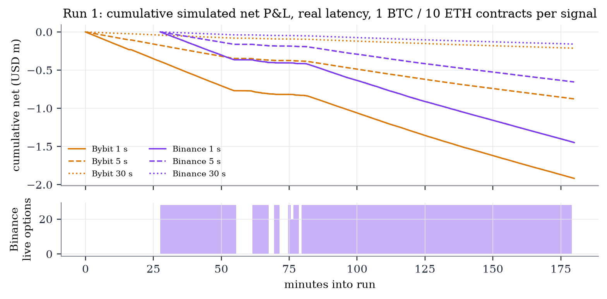
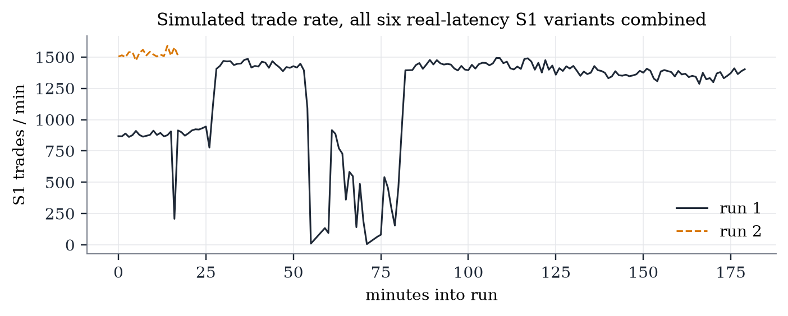
Table 18 decomposes the result by coin and Figure 13 by component. The strategy loses money before any fee is paid. On Bybit in session 1 the mean gross result was −$6.11 per BTC contract and −$1.19 per ten ETH contracts; on Binance −$6.15 and −$2.74. Each round trip crosses the spread once (buying at the ask and later selling at the bid, or vice versa), and the price drift that Deribit predicts is far smaller than the spread. Taker fees then add $20.37–26.41 per BTC trade in session 1 and $34.81–37.99 in session 2, and the half-tick slippage haircut adds about $4.80. Figure 14 shows the distribution of gross results for BTC one-second trades: it is concentrated on a few negative spread multiples, and the signal and random-direction distributions are visually indistinguishable.
| Run | Exchange | Hold | Coin | Trades | Avg qty | Avg premium (USD) | Gross/trade | Fees/trade | Fees if uncapped | Slip/trade | Net/trade | Wins |
|---|---|---|---|---|---|---|---|---|---|---|---|---|
| 1 | Binance | 1 s | BTC | 35,741 | 1 | 167.64 | −$6.15 | $26.41 | $48.49 | $4.95 | −$37.51 | 0 |
| 1 | Binance | 1 s | ETH | 5,702 | 10 | 11.62 | −$2.74 | $14.16 | $14.24 | $1.97 | −$18.88 | 0 |
| 1 | Binance | 5 s | BTC | 15,901 | 1 | 171.21 | −$6.34 | $26.67 | $48.47 | $4.95 | −$37.96 | 0 |
| 1 | Binance | 5 s | ETH | 2,696 | 10 | 11.93 | −$3.06 | $14.16 | $14.24 | $1.97 | −$19.19 | 0 |
| 1 | Binance | 30 s | BTC | 3,715 | 1 | 180.28 | −$6.85 | $27.31 | $48.49 | $4.95 | −$39.10 | 0 |
| 1 | Binance | 30 s | ETH | 708 | 10 | 12.67 | −$3.45 | $14.20 | $14.26 | $1.98 | −$19.63 | 0 |
| 1 | Bybit | 1 s | BTC | 49,200 | 1 | 172.17 | −$6.11 | $20.37 | $46.98 | $4.80 | −$31.28 | 0 |
| 1 | Bybit | 1 s | ETH | 43,148 | 9 | 5.95 | −$1.19 | $6.65 | $13.45 | $0.93 | −$8.77 | 0 |
| 1 | Bybit | 5 s | BTC | 22,028 | 1 | 176.99 | −$6.32 | $20.62 | $46.88 | $4.79 | −$31.72 | 0 |
| 1 | Bybit | 5 s | ETH | 19,869 | 9 | 6.22 | −$1.26 | $6.78 | $13.41 | $0.93 | −$8.97 | 0 |
| 1 | Bybit | 30 s | BTC | 5,205 | 1 | 189.87 | −$6.75 | $20.98 | $46.44 | $4.74 | −$32.48 | 4 |
| 1 | Bybit | 30 s | ETH | 4,775 | 9 | 6.73 | −$1.35 | $6.86 | $13.19 | $0.91 | −$9.12 | 0 |
| 2 | Binance | 1 s | BTC | 5,394 | 1 | 459.51 | −$9.78 | $37.38 | $45.47 | $4.90 | −$52.06 | 0 |
| 2 | Binance | 1 s | ETH | 1,365 | 10 | 10.32 | −$2.14 | $10.15 | $13.48 | $1.99 | −$14.27 | 0 |
| 2 | Binance | 5 s | BTC | 2,413 | 1 | 469.67 | −$10.23 | $37.57 | $45.38 | $4.89 | −$52.69 | 0 |
| 2 | Binance | 5 s | ETH | 604 | 10 | 10.39 | −$2.14 | $10.19 | $13.50 | $1.99 | −$14.32 | 0 |
| 2 | Binance | 30 s | BTC | 553 | 1 | 487.29 | −$11.20 | $37.99 | $45.29 | $4.88 | −$54.07 | 0 |
| 2 | Binance | 30 s | ETH | 133 | 10 | 10.68 | −$2.33 | $10.23 | $13.56 | $2.00 | −$14.57 | 0 |
| 2 | Bybit | 1 s | BTC | 6,244 | 1 | 495.84 | −$7.34 | $34.81 | $43.60 | $4.70 | −$46.85 | 0 |
| 2 | Bybit | 1 s | ETH | 4,642 | 9 | 14.07 | −$1.49 | $9.79 | $12.54 | $0.92 | −$12.21 | 0 |
| 2 | Bybit | 5 s | BTC | 2,799 | 1 | 511.66 | −$7.58 | $35.13 | $43.55 | $4.70 | −$47.41 | 0 |
| 2 | Bybit | 5 s | ETH | 2,166 | 9 | 14.57 | −$1.57 | $9.83 | $12.43 | $0.92 | −$12.32 | 0 |
| 2 | Bybit | 30 s | BTC | 640 | 1 | 544.99 | −$7.71 | $35.13 | $43.11 | $4.65 | −$47.49 | 0 |
| 2 | Bybit | 30 s | ETH | 505 | 9 | 15.25 | −$1.87 | $9.98 | $12.44 | $0.92 | −$12.76 | 0 |
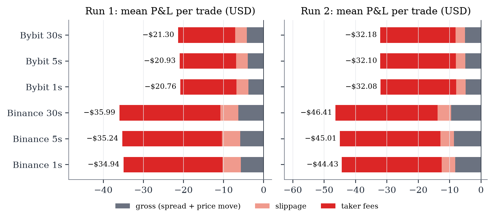
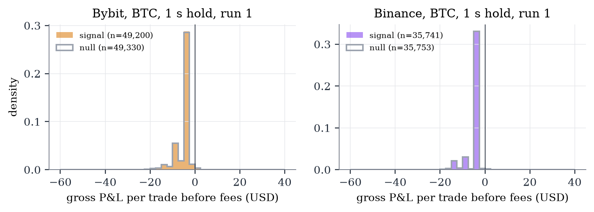
Appendix Table 30 breaks the results down by strike relative to spot. Out-of-the-money options pay lower fees because of the premium cap, but they also have spreads that are larger relative to their price; no moneyness bucket in either session has a positive mean.
Tables 19 and 20 compare mean gross P&L per trade between Deribit's direction and a random direction with identical timing. In session 1 the signal improves the Bybit one-second result by $0.041 per trade, which is statistically significant (one-sided permutation p = 0.002) and is the trading counterpart of the incremental information found in Section 7.4. Every other variant shows a difference between −$0.33 and +$0.06 with p between 0.24 and 0.99. In session 2 no variant is significant (p ≥ 0.37 for real latency). Deribit's information is real and worth a few cents per trade — about 0.2% of the fee.
| Exchange | Hold | Latency | Signal gross/trade | Random gross/trade | Difference | Permutation p (one-sided) |
|---|---|---|---|---|---|---|
| Binance | 1 s | real | −$5.68 | −$5.70 | $0.02 | 0.236 |
| Binance | 1 s | zero | −$5.99 | −$5.97 | −$0.02 | 0.801 |
| Binance | 30 s | real | −$6.30 | −$6.18 | −$0.13 | 0.761 |
| Binance | 30 s | zero | −$6.89 | −$6.55 | −$0.33 | 0.942 |
| Binance | 5 s | real | −$5.87 | −$5.83 | −$0.04 | 0.763 |
| Binance | 5 s | zero | −$6.19 | −$6.13 | −$0.05 | 0.822 |
| Bybit | 1 s | real | −$3.81 | −$3.86 | $0.04 | 0.002 |
| Bybit | 1 s | zero | −$4.35 | −$4.32 | −$0.03 | 0.980 |
| Bybit | 30 s | real | −$4.17 | −$4.23 | $0.06 | 0.281 |
| Bybit | 30 s | zero | −$4.99 | −$4.74 | −$0.25 | 0.988 |
| Bybit | 5 s | real | −$3.92 | −$3.94 | $0.02 | 0.235 |
| Bybit | 5 s | zero | −$4.44 | −$4.38 | −$0.06 | 0.986 |
| Exchange | Hold | Latency | Signal gross/trade | Random gross/trade | Difference | Permutation p (one-sided) |
|---|---|---|---|---|---|---|
| Binance | 1 s | real | −$8.24 | −$8.20 | −$0.03 | 0.522 |
| Binance | 1 s | zero | −$11.83 | −$11.70 | −$0.13 | 0.618 |
| Binance | 30 s | real | −$9.48 | −$9.37 | −$0.11 | 0.560 |
| Binance | 30 s | zero | −$13.67 | −$12.23 | −$1.44 | 0.821 |
| Binance | 5 s | real | −$8.61 | −$8.45 | −$0.16 | 0.630 |
| Binance | 5 s | zero | −$11.69 | −$12.24 | $0.55 | 0.211 |
| Bybit | 1 s | real | −$4.84 | −$4.81 | −$0.03 | 0.673 |
| Bybit | 1 s | zero | −$5.56 | −$5.43 | −$0.13 | 0.989 |
| Bybit | 30 s | real | −$5.13 | −$4.77 | −$0.37 | 0.818 |
| Bybit | 30 s | zero | −$5.76 | −$6.09 | $0.33 | 0.260 |
| Bybit | 5 s | real | −$4.96 | −$5.00 | $0.04 | 0.374 |
| Bybit | 5 s | zero | −$5.76 | −$5.64 | −$0.13 | 0.877 |
Session 2 lost $14.5–15.6 more per BTC trade than session 1 in every exchange and holding period. The gross result was similar (Bybit one-second: −$7.34 against −$6.11), so the strategy did not behave differently. The difference is fees. The average BTC option traded in session 2 cost $496–545 on Bybit, against $172–190 in session 1: implied volatilities were higher after BTC had fallen from $81,500 to $77,000. At $172 the 7% premium cap often binds (7% × $172 = $12 per side), whereas at $500 it never does and the full 0.03% of the underlying (about $23 per side) applies. Figure 15 shows the fee charged per side against the premium for every BTC trade, together with the theoretical schedule. The comparison is a useful robustness check: across two days with different price levels and volatility the strategy's gross economics were the same, and only the fee regime differed.
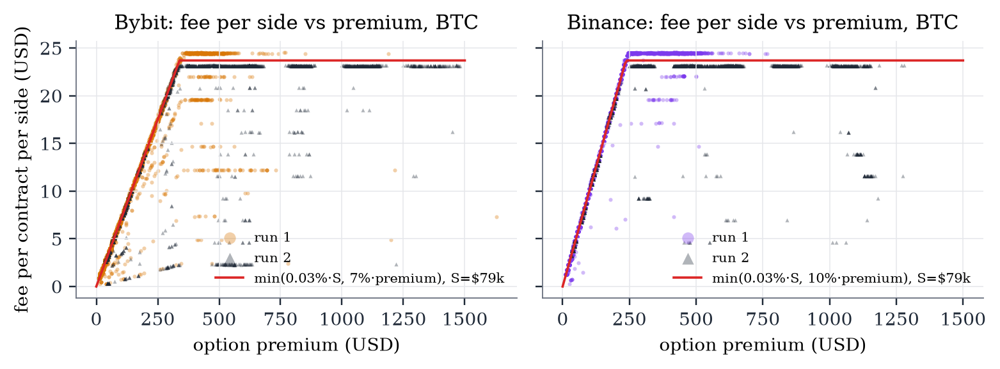
Tables 21 and 22 count S2 events. After converting for USDT and the worst-case strike gap, Deribit never crossed with Bybit in either session, and crossed with Binance on nine quote updates in session 1, all smaller than costs. Binance and Bybit crossed each other frequently — 171,124 quote updates in session 1 and 26,742 in session 2 — but every cross was smaller than the cost hurdle of equation (10), and the strategy traded zero times.
| Buy → sell | Crossed after USDT basis | Killed by costs | Signals | No-fill |
|---|---|---|---|---|
| Deribit → Bybit | 0 | 0 | 0 | 0 |
| Bybit → Deribit | 0 | 0 | 0 | 0 |
| Deribit → Binance | 9 | 9 | 0 | 0 |
| Binance → Deribit | 0 | 0 | 0 | 0 |
| Binance → Bybit | 79,001 | 79,001 | 0 | 0 |
| Bybit → Binance | 92,123 | 92,123 | 0 | 0 |
| Buy → sell | Crossed after USDT basis | Killed by costs | Signals | No-fill |
|---|---|---|---|---|
| Deribit → Bybit | 0 | 0 | 0 | 0 |
| Bybit → Deribit | 0 | 0 | 0 | 0 |
| Deribit → Binance | 0 | 0 | 0 | 0 |
| Binance → Deribit | 0 | 0 | 0 | 0 |
| Binance → Bybit | 13,741 | 13,741 | 0 | 0 |
| Bybit → Binance | 13,001 | 13,001 | 0 | 0 |
Table 23 and Figure 16 show the size of the crosses. The engine records the best gross cross in every ten-second window. For BTC, the largest cross between Binance and Bybit was $39.93 in session 1 and $19.97 in session 2, against a hurdle — fees, exercise and settlement haircut before slippage — of about $77 and $73. Median crosses were $0–5, i.e. books that touch or overlap by one tick. ETH tells the same story: a maximum of $1.10 against a hurdle of $2.28. Crosses between Deribit and the USDT exchanges were negative in essentially every window once the strike gap is accounted for. The crosses that do occur are one- or two-tick transients between two books quoted off the same perpetual, and they are roughly half the size needed to pay for trading them.
| Run | Coin | Buy → sell | 10 s windows | Median best cross | p99 | Max | % windows crossed |
|---|---|---|---|---|---|---|---|
| 1 | BTC | Binance → Bybit | 822 | $0.00 | $23.91 | $39.93 | 32.8% |
| 1 | BTC | Binance → Deribit | 827 | −$11.81 | −$5.53 | −$5.51 | 0.0% |
| 1 | BTC | Bybit → Binance | 822 | $4.99 | $19.98 | $29.98 | 83.3% |
| 1 | BTC | Bybit → Deribit | 997 | −$10.45 | −$0.53 | −$0.51 | 0.0% |
| 1 | BTC | Deribit → Binance | 827 | −$8.96 | −$2.70 | $0.93 | 0.2% |
| 1 | BTC | Deribit → Bybit | 997 | −$13.96 | −$5.84 | −$4.45 | 0.0% |
| 1 | ETH | Binance → Bybit | 813 | $0.20 | $0.69 | $1.10 | 88.3% |
| 1 | ETH | Binance → Deribit | 825 | −$2.94 | −$1.99 | −$1.91 | 0.0% |
| 1 | ETH | Bybit → Binance | 813 | −$0.10 | $0.50 | $0.70 | 14.8% |
| 1 | ETH | Bybit → Deribit | 993 | −$0.44 | −$0.27 | −$0.22 | 0.0% |
| 1 | ETH | Deribit → Binance | 825 | −$1.82 | −$1.15 | −$0.94 | 0.0% |
| 1 | ETH | Deribit → Bybit | 993 | −$0.43 | −$0.23 | −$0.03 | 0.0% |
| 2 | BTC | Binance → Bybit | 108 | $4.99 | $14.98 | $19.97 | 76.9% |
| 2 | BTC | Binance → Deribit | 108 | −$14.10 | −$11.31 | −$11.30 | 0.0% |
| 2 | BTC | Bybit → Binance | 108 | $4.99 | $9.99 | $9.99 | 85.2% |
| 2 | BTC | Bybit → Deribit | 108 | −$16.82 | −$11.32 | −$11.32 | 0.0% |
| 2 | BTC | Deribit → Binance | 108 | −$12.48 | −$5.15 | −$4.98 | 0.0% |
| 2 | BTC | Deribit → Bybit | 108 | −$14.96 | −$3.08 | −$2.64 | 0.0% |
| 2 | ETH | Binance → Bybit | 108 | $0.10 | $0.30 | $0.40 | 66.7% |
| 2 | ETH | Binance → Deribit | 108 | −$1.02 | −$0.74 | −$0.59 | 0.0% |
| 2 | ETH | Bybit → Binance | 108 | $0.10 | $0.30 | $0.30 | 70.4% |
| 2 | ETH | Bybit → Deribit | 108 | −$0.42 | −$0.29 | −$0.29 | 0.0% |
| 2 | ETH | Deribit → Binance | 108 | −$0.45 | −$0.07 | −$0.03 | 0.0% |
| 2 | ETH | Deribit → Bybit | 108 | −$0.55 | −$0.39 | −$0.37 | 0.0% |
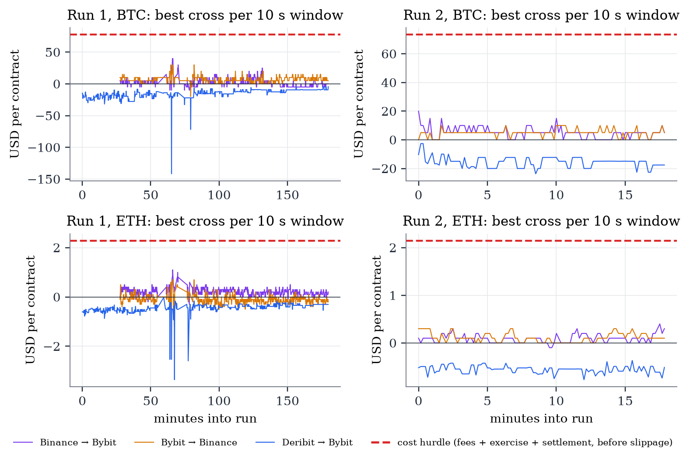
Engine counters for both sessions — Deribit moves seen, signals generated, signals rejected because the follower had already moved or its book was wide, orders that did not fill because the book moved, and exits forced by missing data — are reported in Appendix Table 31.
Gate 3 verdict. Across two sessions on different days, the latency-follow strategy lost $20.76–$46.41 per trade depending on exchange and holding period, with four profitable trades out of 236,146, and Deribit's direction was worth a few cents per trade. The crossed-market strategy observed 197,866 crosses and executed none after costs. There is no edge.
Four further designs were considered to check whether the negative result is specific to the strategies tested. Each targets a different way the cross-exchange structure might be monetised.
Fees are capped at a share of premium, so cheap far-from-the-money options pay much less in absolute fees than at-the-money options. If crosses occur in the wings, they might clear the hurdle. The scan (scripts/07_wing_scan.py) pulled every BTC and ETH option on all three exchanges by REST every 20 seconds for ten minutes — a median of 4,138 instruments per snapshot (Table 24) — and computed, for every instrument and ordered exchange pair, the edge after premium-capped fees, a delta-weighted exercise fee, a delta-weighted settlement haircut and the USDT strike gap. Candidates with a positive edge were re-checked against order books fetched simultaneously from both exchanges.
| index | mean | min | 50% | max |
|---|---|---|---|---|
| Deribit instruments | 1,716.0 | 1,716.0 | 1,716.0 | 1,716.0 |
| Bybit instruments | 1,256.0 | 1,256.0 | 1,256.0 | 1,256.0 |
| Binance instruments | 1,166.0 | 1,166.0 | 1,166.0 | 1,166.0 |
| Gross crosses | 223.7 | 207.0 | 222.0 | 258.0 |
| Net-positive, ≤ 30 DTE | 1.0 | 1.0 | 1.0 | 2.0 |
| Net-positive, > 30 DTE | 132.8 | 124.0 | 131.5 | 142.0 |
| Confirmed on order books | 1.0 | 1.0 | 1.0 | 2.0 |
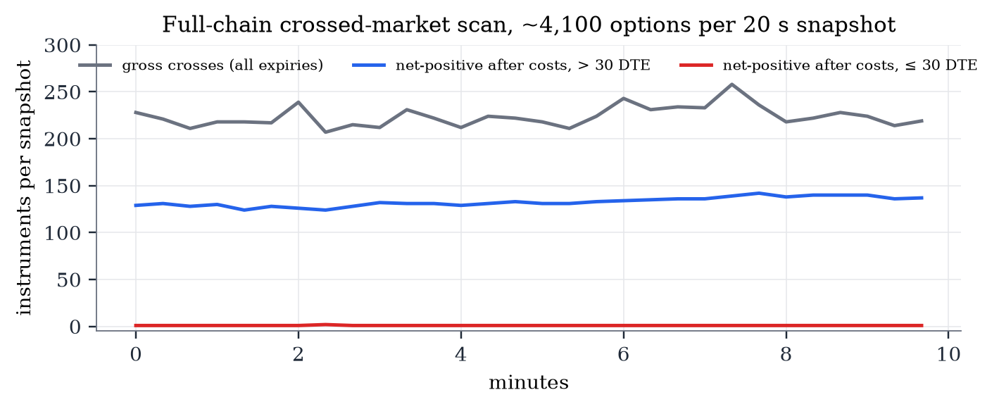
About 220 instruments were crossed gross in each snapshot and about 130 remained positive after costs (Figure 17). All of them were deep in-the-money options with four to eleven months to expiry, all in one direction: buy on Deribit, sell on Bybit, with edges of $900–2,200 per contract. These are not arbitrage opportunities. A deep in-the-money option is mostly intrinsic value, and the two exchanges discount that value differently: Deribit's inverse options are priced off its own coin-margined futures curve, Bybit's USDT options off USDT funding. The "edge" is the difference between two interest rates, locked up for most of a year. For the most frequent best candidate, a 160,000 put expiring in September 2027 (336 days), the edge is 3.1–3.3% a year on the premium paid; including initial margin on the short leg reduces it to roughly 1–3% a year. That is a money-market-like return carrying two exchanges' counterparty risk for eleven months.
Within 30 days of expiry only two distinct instruments ever showed a net-positive cross in ten minutes (Table 32): a 102,000 BTC call expiring 30 October, bought on Binance at its $5 minimum and sold on Deribit at 0.0001 BTC ($8.17, Deribit's minimum tick), worth $3.17–3.21 in total for the displayed size; and a 79,000 put on Bybit versus Binance worth $1.64. Both are minimum-tick artefacts on nearly worthless options, together worth $4.85.
Deribit's daily options settle on a time-weighted average of its index between 07:30 and 08:00 UTC. As the averaging window progresses, part of the settlement price is already fixed, and an expiring option's fair value should converge mechanically; quotes that fail to track this convergence, or that differ across exchanges with different settlement methodologies, might be mispriced. Deribit's delivery-price endpoint provides the historical settlement values, but the expiring dailies barely trade in their final hour: on 20–23 October 2026 there were 10–29 BTC option trades in the final hour of each expiring daily, and the last trade occurred 10–32 minutes before expiry. Testing the idea requires live three-exchange quote recording during 07:00–08:00 UTC over many weeks, yielding one observation per morning. It was not pursued.
A maker strategy avoids paying the spread and earns it instead. At retail fee levels the maker fee is about 0.02% of the underlying, roughly $16 per BTC contract per side at $81,500 — more than three times the $5 touch spread on Binance and Bybit. Quoting is therefore viable only inside an exchange market-maker programme with rebates and requires inventory risk management; it is a market-making business rather than an arbitrage and cannot be evaluated with public data alone.
Polymarket lists daily binary markets of the form "Bitcoin above $K on <date>?" for around ten strikes, each paying $1 if a single Binance BTC/USDT one-minute candle closes above K at 12:00 US Eastern time. These are digital options, and their fair probability can be inferred from Deribit's volatility smile. The script (scripts/08_polymarket_vs_deribit.py) computes it as follows. For the two Deribit expiries bracketing the Polymarket resolution time, the mark implied volatility is interpolated in log-moneyness; total variance is interpolated linearly in time at fixed moneyness; the forward is interpolated; the USDT strike is converted to USD (equation 2); and the digital price includes the smile-slope correction implied by Breeden and Litzenberger (1978):
Polymarket best bids, asks and sizes are read from its order-book endpoint, not from indicative mid prices. Five snapshots at 30-second intervals (17:19–17:21 UTC, 27 October 2026) covered six daily events — 30 event-snapshots and 170 strike-snapshot observations with mid prices between 2 and 98 cents. The sample is small; it is reported as a feasibility check rather than a definitive test. Table 25 and Figure 18 report the results. The average signed deviation of the Polymarket mid from the Deribit-implied probability was between −0.08 and −0.39 cents per event, i.e. no systematic bias. The average absolute deviation was 0.45–2.71 cents per event, and the maximum 4.39 cents, concentrated at the one or two strikes nearest spot, where a digital's value is most sensitive to volatility. Deviations of this size are within model error: Polymarket resolves on a single one-minute candle at 16:00 UTC, whereas Deribit settles on a 30-minute average at 08:00 UTC; the two differ by eight hours of intraday volatility seasonality and by the USDT basis. There is no exact hedge, so any trade is relative value with large residual risk at the at-the-money strikes. Touch depth at those strikes was 17–1,416 shares, implying capacity of tens of dollars per day. Riskless intra-Polymarket monotonicity arbitrages (a higher strike's YES bid above a lower strike's YES ask) occurred zero times.
| Event | Snapshots | Live strikes | Mean |mid − fair| | Max |mid − fair| | Mean mid − fair | Best buy edge | Best sell edge |
|---|---|---|---|---|---|---|---|
| Bitcoin above ___ on November 1? | 5 | 7 | 1.28¢ | 2.35¢ | -0.24¢ | 1.64¢ | 1.35¢ |
| Bitcoin above ___ on November 2? | 5 | 8 | 0.53¢ | 1.58¢ | -0.39¢ | 0.08¢ | -0.39¢ |
| Bitcoin above ___ on October 28? | 5 | 3 | 2.71¢ | 4.39¢ | -0.09¢ | 3.89¢ | 3.80¢ |
| Bitcoin above ___ on October 29? | 5 | 4 | 1.02¢ | 2.14¢ | -0.08¢ | 1.64¢ | 1.09¢ |
| Bitcoin above ___ on October 30? | 5 | 6 | 0.86¢ | 2.73¢ | -0.21¢ | 2.03¢ | 0.53¢ |
| Bitcoin above ___ on October 31? | 5 | 6 | 0.45¢ | 1.16¢ | -0.35¢ | -0.44¢ | -0.39¢ |
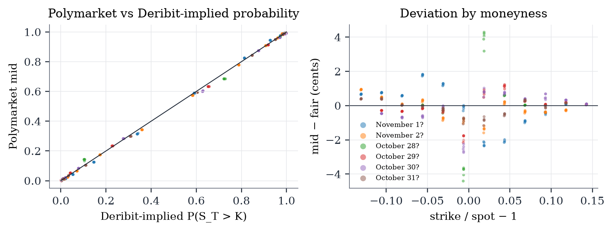
Why there is no edge. Three independent mechanisms each eliminate the trade on their own.
Who earns the lag. The Budish, Cramton and Shim (2015) framework suggests where the small residual value of Deribit's information goes: to the fastest participants, here the co-located liquidity providers on Binance and Bybit who update quotes on Deribit's information as well as the perpetual's. For them the relevant cost is not a retail taker fee but maker rebates and inventory risk, and the information is an input to quoting rather than a stand-alone trade.
What would have to change. The conclusion is specific to the participant modelled: retail fees, a home connection, taker orders and public data. Lower fee tiers narrow the gap but cannot close it while the spread alone exceeds the drift. Co-location would address the latency but not the economics. Maker participation changes the problem entirely. Different instruments might behave differently — illiquid long-dated strikes or event-driven sessions — but the full-chain scan found no tradeable crosses away from the money either, and long-dated crosses turned out to be carry.
The value of the gate design. Each gate was cheaper than the next, and the first three gates already contained the answer. Gate 0 falsified the premise in minutes. Gate 1 found the statistical lead that a less careful study might have reported as an opportunity, and the dollar-magnitude step showed it was not. The live engine in Gate 3 was by far the most expensive component and confirmed what the earlier gates implied. In a research programme with many candidate ideas, ordering tests by cost and writing down pass conditions in advance saves most of the effort.
Pitfalls that produce false positives. Several features of this setting would generate apparent profits in a careless study, and all of them were encountered:
Sample length. The lead-lag analysis rests on one four-hour recording and the trading results on two sessions of 3 hours and 18 minutes. The second session, on a different day with different price levels and volatility, replicated the first in every respect except the fee regime, and the per-trade confidence intervals are narrow. Nonetheless, market structure in crypto options changes quickly and the results describe late 2026.
Underlying control. The Binance perpetual is used as the underlying for all three exchanges. Deribit's own perpetual or index might be a better control for Deribit-specific quotes; since the perpetual leads all exchanges and the Deribit and Binance perpetuals track each other closely, this is unlikely to change the conclusions.
Clock and timestamps. Absolute delays depend on the estimated clock offset, which is noisy. Relative comparisons on the same clock and all exchange-clock results are robust to this. Deribit's 100 ms batching bounds the resolution of Deribit timing; the analysis does not claim that Deribit reacts later than the others, only that it does not react earlier.
Fill model. Binance and Deribit depth beyond the touch is approximated (one tick per touch-size), and the half-tick haircut is a convention. Neither matters for the conclusions: the latency strategy loses money before fees and slippage, and the crossed-market strategy never reaches the stage where depth matters.
Fees. Retail taker fees are used throughout. The Binance premium cap of 10% is an assumption. Lower fee tiers would reduce the losses but not reverse them, because the gross result is negative.
Outage masking. Binance was unreachable for 112 minutes of the recording and 22% of session 1. The masking rules (60-second gaps for outage identification; five-second staleness for regression samples) are conservative, and Bybit, which was unaffected, gives the same conclusions as Binance throughout.
Statistical inference. Regression t-statistics use Newey–West errors with five lags; the circular-shift placebo, which does not rely on asymptotic theory, gives the same answer. Trading confidence intervals use a one-minute cluster bootstrap. The placebo distribution in Figure 9 is shown as a normal approximation with the mean and standard deviation of the 200 draws; the reported p-value is the empirical share of draws as extreme as the observed coefficient.
Selection of instruments. The study focuses on near-expiry options close to the money, where liquidity is greatest and the hypothesis is most plausible. The full-chain scan addresses the rest of the chain for the crossed-market strategy, but not for latency-follow.
This paper asked whether Binance and Bybit BTC and ETH options lag Deribit enough to trade, and answered it with public data, a pre-specified four-gate design and a latency-aware paper-trading engine. They do not. The premise that Binance and Bybit are thin followers is false for short-dated at-the-money options: their spreads are several times tighter than Deribit's. The perpetual future, not Deribit, leads option quotes on all three exchanges. Deribit's quotes do contain statistically significant information about the other exchanges' next moves, but it is worth about a dollar per BTC contract against about $54 to trade it, arrives here half a second late, and is captured by faster participants. Two live sessions with 236,146 simulated trades produced four winners, and a crossed-market strategy that saw 197,866 price crosses traded zero times. Four follow-up designs found carry, minimum-tick artefacts, model-error-sized deviations and fee schedules, not arbitrage.
The broader lessons are methodological. Order the tests by cost and write down what would count as success before looking at data. Convert currencies and strikes before comparing contracts across exchanges. Use exchange clocks and measure your own latency. Report the dollar value of a statistical effect next to its t-statistic. And treat a clear negative result as a deliverable: the cheapest trade is the one that is ruled out before capital is at risk.
Alexander, C., Choi, J., Park, H., and Sohn, S. (2020). BitMEX bitcoin derivatives: Price discovery, informational efficiency, and hedging effectiveness. Journal of Futures Markets, 40(1), 23–43.
Bailey, D. H., Borwein, J. M., López de Prado, M., and Zhu, Q. J. (2014). Pseudo-mathematics and financial charlatanism: The effects of backtest overfitting on out-of-sample performance. Notices of the American Mathematical Society, 61(5), 458–471.
Brandvold, M., Molnár, P., Vagstad, K., and Valstad, O. C. A. (2015). Price discovery on Bitcoin exchanges. Journal of International Financial Markets, Institutions and Money, 36, 18–35.
Breeden, D. T., and Litzenberger, R. H. (1978). Prices of state-contingent claims implicit in option prices. Journal of Business, 51(4), 621–651.
Budish, E., Cramton, P., and Shim, J. (2015). The high-frequency trading arms race: Frequent batch auctions as a market design response. Quarterly Journal of Economics, 130(4), 1547–1621.
Cameron, A. C., Gelbach, J. B., and Miller, D. L. (2008). Bootstrap-based improvements for inference with clustered errors. Review of Economics and Statistics, 90(3), 414–427.
Chakravarty, S., Gulen, H., and Mayhew, S. (2004). Informed trading in stock and option markets. Journal of Finance, 59(3), 1235–1257.
Easley, D., O'Hara, M., and Srinivas, P. S. (1998). Option volume and stock prices: Evidence on where informed traders trade. Journal of Finance, 53(2), 431–465.
Gonzalo, J., and Granger, C. (1995). Estimation of common long-memory components in cointegrated systems. Journal of Business & Economic Statistics, 13(1), 27–35.
Harvey, C. R., Liu, Y., and Zhu, H. (2016). … and the cross-section of expected returns. Review of Financial Studies, 29(1), 5–68.
Hasbrouck, J. (1995). One security, many markets: Determining the contributions to price discovery. Journal of Finance, 50(4), 1175–1199.
Hayashi, T., and Yoshida, N. (2005). On covariance estimation of non-synchronously observed diffusion processes. Bernoulli, 11(2), 359–379.
Hou, A. J., Wang, W., Chen, C. Y. H., and Härdle, W. K. (2020). Pricing cryptocurrency options. Journal of Financial Econometrics, 18(2), 250–279.
Makarov, I., and Schoar, A. (2020). Trading and arbitrage in cryptocurrency markets. Journal of Financial Economics, 135(2), 293–319.
Newey, W. K., and West, K. D. (1987). A simple, positive semi-definite, heteroskedasticity and autocorrelation consistent covariance matrix. Econometrica, 55(3), 703–708.
Shleifer, A., and Vishny, R. W. (1997). The limits of arbitrage. Journal of Finance, 52(1), 35–55.
Stoll, H. R., and Whaley, R. E. (1990). The dynamics of stock index and stock index futures returns. Journal of Financial and Quantitative Analysis, 25(4), 441–468.
All code is in the public repository github.com/ayushk2s/CRYPTO-OPTIONS-LATENCY-ARB. The research pipeline consists of numbered scripts that are run in order; the paper's figures and tables are generated from their outputs by paper/analysis.py and assembled by paper/build.py. The environment used was Python 3.14 on Windows 11 with websockets 17.0, requests 2.34, NumPy 2.5, pandas 3.0, statsmodels 0.15, SciPy 1.18, Matplotlib 3.11 and rich (for the optional dashboard). No API keys are required.
| Script | Gate | Purpose | Outputs |
|---|---|---|---|
| 00_connectivity.py | 0 | REST and websocket reachability on all three exchanges | results/gate0_connectivity.json |
| 00b_binance_ws_probe.py | 0 | Which Binance websocket hosts and paths deliver | results/gate0_binance_ws_probe.json |
| 00c_binance_opt_streams.py | 0 | Which Binance option stream names deliver | results/gate0_binance_opt_streams.json |
| 01_chain_snapshot.py | 0 | Chain census, at-the-money spreads and depth | results/gate0_chain_census.json, gate0_atm_spreads.csv |
| 02_record.py <hours> | 1 | Synchronized three-exchange recorder | data_cache/rec_*/ticks.jsonl, clock.jsonl, meta.json |
| 03_leadlag.py | 1 | Cross-correlation and event study | results/gate1_xcorr.csv, gate1_events.csv, gate1_summary.json |
| 03b_incremental.py | 1 | Predictive regression, circular-shift placebo, dollar magnitude | results/gate1_incremental.csv, .json |
| 04_latency.py | 2 | Warm REST round trips | results/gate2_latency.json |
| 05_paper_trade.py <hours> [--dash] | 3 | Live paper-trading engine with optional terminal dashboard | results/paper/<run>/, data_cache/paper/<run>/ |
| 06_paper_report.py [run] | 3 | Variant statistics, cluster bootstrap, permutation tests | results/paper/<run>/report.json, report.md |
| 07_wing_scan.py <minutes> | 11.1 | Full-chain crossed-market scan | results/wing_scan/<run>/ |
| 08_polymarket_vs_deribit.py <minutes> | 11.4 | Polymarket digitals versus the Deribit smile | results/pm_vs_deribit/<run>/ |
| paper/analysis.py | — | All figures, tables and statistics in this paper | paper/build/ |
Raw recordings and per-trade logs (about 1 GB) are not committed to the repository because of their size; the scripts regenerate equivalent data from live public feeds. Exact replication of the reported figures requires the original raw files, which are available from the author. Market data are by nature not reproducible at a later date; what is reproducible is the methodology, applied to a new recording.
| Date | Time | Activity |
|---|---|---|
| 23 Oct 2026 | 12:50–12:52 | Gate 0: connectivity probes, Binance stream discovery, chain census |
| 23 Oct 2026 | 12:57–16:57 | Gate 1: synchronized four-hour recording (12 options × 3 exchanges + perpetuals) |
| 23 Oct 2026 | 13:05 | Gate 2: latency measurement (200 requests per endpoint) |
| 23 Oct 2026 | 15:09–18:09 | Gate 3: paper-trading session 1 (56 options, 3.00 h) |
| 23 Oct 2026 | 17:15–17:28 | Follow-up 1: full-chain cross scan (trial run and 10-minute run) |
| 27 Oct 2026 | 17:19–17:21 | Follow-up 4: Polymarket versus Deribit, 5 snapshots × 6 events |
| 2 Nov 2026 | 18:02–18:20 | Gate 3: paper-trading session 2 (56 options, stopped after 18 minutes) |
| Field | Type | Description |
|---|---|---|
| kind | string | "q" best bid/offer update; "m" mark / implied-volatility update; "conn" / "disconnect" socket events |
| v | string | Source: deribit, binance, bybit, binance_perp, deribit_perp, deribit_index |
| sym | string | Exchange symbol, e.g. BTC-24OCT26-81500-C, BTC-261024-81500-C, BTC-24OCT26-81500-C-USDT |
| key | string | Normalised key COIN-YYYYMMDD-STRIKE-C/P shared across exchanges; COIN-PERP or COIN-IDX for underlyings |
| tr | int | Local receive time, nanoseconds since epoch |
| te | int | Exchange event timestamp, milliseconds since epoch (Bybit book: matching-engine time "cts") |
| bid, ask | float | Best bid and ask in USD (Deribit converted from coin at the underlying price) or USDT (Binance, Bybit) |
| bsz, asz | float | Sizes at best bid and ask, contracts of one coin |
| bid_c, ask_c | float | Deribit only: best bid and ask in coin |
| bl, al | list | Bybit only: top five book levels [price, size] on each side |
| mark | float | Exchange mark price (USD / USDT) |
| iv, biv, aiv | float | Mark, bid and ask implied volatility (decimal) |
| S, idx | float | Underlying price used by the exchange for the option; exchange index |
| u | int | Binance book update id |
| Field | Description |
|---|---|
| strat, var | Strategy (S1, S2) and variant, e.g. S1|bybit|h1000|real|signal |
| key, venue, side, qty | Option, exchange traded, buy/sell, contracts |
| px_in, px_out | Average fill prices on entry and exit (exchange quote currency) |
| t_in, t_out | Exchange-clock arrival times of entry and exit orders (ms) |
| gross | (px_out − px_in) × side × qty × p, in USD — includes the spread crossed |
| fees, slip | Taker fees on both sides (equation 4); half-tick haircut on both fills |
| net | gross − fees − slip |
| S, coin, t_local | Underlying index at entry; coin; local booking time (ms) |
| S2 fields | buy, sell, qty_buy, qty_sell, gross_sig, cost_sig, gap, settle, leg_loss, filled |
| Endpoint | URL | HTTP | Latency (ms) | Bytes |
|---|---|---|---|---|
| deribit.time | www.deribit.com/api/v2/public/get_time | 200 | 546 | 118 |
| deribit.index_BTC | www.deribit.com/api/v2/public/get_index_price | 200 | 261 | 165 |
| deribit.summary_BTC | www.deribit.com/api/v2/public/get_book_summary_by_currency | 200 | 255 | 414,833 |
| deribit.index_ETH | www.deribit.com/api/v2/public/get_index_price | 200 | 275 | 163 |
| deribit.summary_ETH | www.deribit.com/api/v2/public/get_book_summary_by_currency | 200 | 268 | 346,172 |
| binance.time | eapi.binance.com/eapi/v1/time | 200 | 360 | 28 |
| binance.exchangeInfo | eapi.binance.com/eapi/v1/exchangeInfo | 200 | 288 | 963,080 |
| binance.ticker | eapi.binance.com/eapi/v1/ticker | 200 | 543 | 518,317 |
| binance.mark | eapi.binance.com/eapi/v1/mark | 200 | 384 | 411,694 |
| binance.index_BTC | eapi.binance.com/eapi/v1/index | 200 | 208 | 52 |
| binance.index_ETH | eapi.binance.com/eapi/v1/index | 200 | 206 | 51 |
| bybit.time | api.bybit.com/v5/market/time | 200 | 306 | 134 |
| bybit.tickers_BTC | api.bybit.com/v5/market/tickers | 200 | 304 | 379,371 |
| bybit.instruments_BTC | api.bybit.com/v5/market/instruments-info | 200 | 295 | 290,040 |
| bybit.tickers_ETH | api.bybit.com/v5/market/tickers | 200 | 349 | 312,428 |
| bybit.instruments_ETH | api.bybit.com/v5/market/instruments-info | 200 | 455 | 239,469 |
| Probe | URL | Messages |
|---|---|---|
| futures control raw | fstream.binance.com/ws/btcusdt@bookTicker | 3 |
| futures control public | fstream.binance.com/public/ws/btcusdt@bookTicker | 3 |
| futures control market | fstream.binance.com/market/ws/btcusdt@markPrice | 3 |
| spot control | stream.binance.com:9443/ws/btcusdt@bookTicker | 3 |
| opt SUBSCRIBE public | fstream.binance.com/public/ws | 1 |
| opt SUBSCRIBE market | fstream.binance.com/market/ws | 3 |
| opt LIST_SUBSCRIPTIONS public | fstream.binance.com/public/ws | 1 |
| opt bookTicker public | fstream.binance.com/public/ws/BTC-261025-79000-P@bookTicker | 0 |
| opt depth public | fstream.binance.com/public/ws/BTC-261025-79000-P@depth10@100ms | 0 |
| opt markprice market | fstream.binance.com/market/ws/btcusdt@optionMarkPrice | 3 |
| Exchange | Instrument | Best bid | Bid size | Best ask | Ask size | Size within 5 levels (bid) | Size within 5 levels (ask) |
|---|---|---|---|---|---|---|---|
| Binance | BTC-261024-81750-C | 450.00 | 13.13 | 455.00 | 7.90 | 45.9 | 46.1 |
| Binance | BTC-261024-81750-P | 465.00 | 18.62 | 470.00 | 13.37 | 56.7 | 41.4 |
| Binance | ETH-261024-2400-C | 17.40 | 282.42 | 18.00 | 450.00 | 1,081.5 | 1,107.2 |
| Binance | ETH-261024-2400-P | 17.60 | 626.00 | 17.80 | 518.26 | 1,378.1 | 1,619.8 |
| Bybit | BTC-24OCT26-81750-P-USDT | 460.00 | 3.60 | 465.00 | 6.08 | 44.1 | 52.6 |
| Bybit | BTC-24OCT26-81750-C-USDT | 445.00 | 4.98 | 450.00 | 8.55 | 33.0 | 48.5 |
| Bybit | ETH-24OCT26-2400-C-USDT | 17.70 | 8.50 | 17.80 | 131.00 | 170.9 | 671.7 |
| Bybit | ETH-24OCT26-2400-P-USDT | 17.80 | 507.70 | 17.90 | 303.70 | 927.6 | 1,287.9 |
| Deribit | BTC-24OCT26-81500-P | 367.39 | 51.30 | 400.04 | 0.90 | 131.2 | 250.1 |
| Deribit | BTC-24OCT26-81500-C | 489.84 | 44.70 | 571.48 | 23.50 | 122.5 | 190.5 |
| Deribit | ETH-24OCT26-2400-C | 14.38 | 1,247.00 | 16.78 | 596.00 | 2,435.0 | 2,746.0 |
| Deribit | ETH-24OCT26-2400-P | 17.97 | 57.00 | 20.37 | 889.00 | 1,937.0 | 4,125.0 |
| key | Binance | Bybit | Deribit |
|---|---|---|---|
| BTC-20261024-81000-C | 12,361 | 67,848 | 15,555 |
| BTC-20261024-81000-P | 14,535 | 125,430 | 19,248 |
| BTC-20261024-81500-C | 22,170 | 130,433 | 19,477 |
| BTC-20261024-81500-P | 23,941 | 150,499 | 20,008 |
| BTC-20261024-82000-C | 24,603 | 145,920 | 19,604 |
| BTC-20261024-82000-P | 23,782 | 121,227 | 16,762 |
| ETH-20261024-2300-C | 982 | 27,718 | 14,237 |
| ETH-20261024-2300-P | 12,697 | 30,095 | 15,772 |
| ETH-20261024-2400-C | 27,409 | 175,763 | 19,348 |
| ETH-20261024-2400-P | 31,479 | 166,641 | 19,994 |
| ETH-20261024-2500-C | 7,916 | 13,725 | 9,895 |
| ETH-20261024-2500-P | 644 | 16,642 | 12,748 |
| Run | Exchange | Coin | Strike vs spot | Trades | Avg premium | Gross/trade | Fees/trade | Net/trade |
|---|---|---|---|---|---|---|---|---|
| 1 | Binance | BTC | < −1.5% | 5,136 | $49.64 | −$5.09 | $9.93 | −$20.01 |
| 1 | Binance | BTC | −1.5…−0.5% | 7,362 | $108.97 | −$5.27 | $21.64 | −$31.90 |
| 1 | Binance | BTC | ±0.5% | 12,265 | $320.83 | −$7.89 | $45.46 | −$58.28 |
| 1 | Binance | BTC | 0.5…1.5% | 5,886 | $142.33 | −$5.51 | $24.44 | −$34.84 |
| 1 | Binance | BTC | > 1.5% | 5,092 | $31.80 | −$5.03 | $6.31 | −$16.30 |
| 1 | Binance | ETH | ±0.5% | 5,702 | $11.62 | −$2.74 | $14.16 | −$18.88 |
| 1 | Bybit | BTC | < −1.5% | 6,279 | $58.54 | −$5.44 | $7.72 | −$18.13 |
| 1 | Bybit | BTC | −1.5…−0.5% | 11,790 | $121.21 | −$5.61 | $16.10 | −$26.62 |
| 1 | Bybit | BTC | ±0.5% | 14,492 | $333.73 | −$7.29 | $37.73 | −$49.66 |
| 1 | Bybit | BTC | 0.5…1.5% | 10,665 | $153.44 | −$5.85 | $17.78 | −$28.33 |
| 1 | Bybit | BTC | > 1.5% | 5,974 | $33.72 | −$5.44 | $4.62 | −$14.97 |
| 1 | Bybit | ETH | < −1.5% | 11,919 | $3.44 | −$1.04 | $4.79 | −$6.83 |
| 1 | Bybit | ETH | −1.5…−0.5% | 5,909 | $6.50 | −$1.18 | $8.78 | −$10.94 |
| 1 | Bybit | ETH | ±0.5% | 7,701 | $12.35 | −$1.68 | $11.29 | −$13.80 |
| 1 | Bybit | ETH | 0.5…1.5% | 8,879 | $7.33 | −$1.16 | $7.55 | −$9.56 |
| 1 | Bybit | ETH | > 1.5% | 8,740 | $1.99 | −$1.01 | $2.73 | −$4.72 |
| 2 | Binance | BTC | < −1.5% | 736 | $190.18 | −$5.15 | $25.00 | −$35.14 |
| 2 | Binance | BTC | −1.5…−0.5% | 1,033 | $379.87 | −$5.62 | $39.38 | −$49.97 |
| 2 | Binance | BTC | ±0.5% | 2,002 | $680.80 | −$15.96 | $44.40 | −$65.15 |
| 2 | Binance | BTC | 0.5…1.5% | 920 | $449.38 | −$8.29 | $37.36 | −$50.60 |
| 2 | Binance | BTC | > 1.5% | 703 | $241.62 | −$5.10 | $27.40 | −$37.49 |
| 2 | Binance | ETH | < −1.5% | 691 | $9.47 | −$2.12 | $10.46 | −$14.58 |
| 2 | Binance | ETH | > 1.5% | 674 | $11.19 | −$2.17 | $9.82 | −$13.97 |
| 2 | Bybit | BTC | < −1.5% | 1,080 | $248.72 | −$5.34 | $28.55 | −$38.79 |
| 2 | Bybit | BTC | −1.5…−0.5% | 1,113 | $464.91 | −$6.67 | $34.69 | −$46.25 |
| 2 | Bybit | BTC | ±0.5% | 2,272 | $678.24 | −$9.09 | $40.77 | −$54.35 |
| 2 | Bybit | BTC | 0.5…1.5% | 1,079 | $554.17 | −$7.72 | $34.62 | −$47.06 |
| 2 | Bybit | BTC | > 1.5% | 700 | $244.33 | −$5.19 | $25.58 | −$35.52 |
| 2 | Bybit | ETH | < −1.5% | 1,332 | $10.91 | −$1.25 | $9.66 | −$11.90 |
| 2 | Bybit | ETH | −1.5…−0.5% | 651 | $17.35 | −$1.61 | $11.90 | −$14.42 |
| 2 | Bybit | ETH | ±0.5% | 767 | $23.72 | −$2.34 | $11.60 | −$14.80 |
| 2 | Bybit | ETH | 0.5…1.5% | 574 | $17.04 | −$1.64 | $10.14 | −$12.58 |
| 2 | Bybit | ETH | > 1.5% | 1,318 | $8.75 | −$1.12 | $7.68 | −$9.76 |
| Run | Counter | Value |
|---|---|---|
| 1 | s1_deribit_moves | 541,210 |
| 1 | s1_signal:bybit | 284,482 |
| 1 | s1_signal:binance | 128,804 |
| 1 | s1_not_stale:bybit | 47,305 |
| 1 | s1_not_stale:binance | 9,061 |
| 1 | s1_wide_book:bybit | 201,431 |
| 1 | s1_wide_book:binance | 83,892 |
| 1 | q:deribit | 621,619 |
| 1 | q:bybit | 2,253,738 |
| 1 | q:binance | 268,857 |
| 1 | bybit|h1000|real|signal:nofill | 3,071 |
| 1 | bybit|h5000|real|signal:nofill | 1,730 |
| 1 | bybit|h30000|real|signal:nofill | 512 |
| 1 | bybit|h1000|real|signal:forced_exit | 61 |
| 1 | bybit|h5000|real|signal:forced_exit | 81 |
| 1 | bybit|h30000|real|signal:forced_exit | 57 |
| 1 | binance|h1000|real|signal:nofill | 405 |
| 1 | binance|h1000|real|signal:forced_exit | 80 |
| 1 | binance|h5000|real|signal:nofill | 216 |
| 1 | binance|h30000|real|signal:nofill | 61 |
| 1 | binance|h1000|real|signal:nodata | 225 |
| 1 | binance|h5000|real|signal:nodata | 97 |
| 1 | binance|h30000|real|signal:nodata | 27 |
| 1 | binance|h5000|real|signal:forced_exit | 70 |
| 1 | bybit|h1000|real|signal:nodata | 34 |
| 1 | bybit|h5000|real|signal:nodata | 19 |
| 1 | binance|h30000|real|signal:forced_exit | 32 |
| 1 | bybit|h30000|real|signal:nodata | 5 |
| 2 | s1_deribit_moves | 62,346 |
| 2 | s1_signal:bybit | 31,787 |
| 2 | s1_signal:binance | 21,010 |
| 2 | s1_not_stale:bybit | 10,226 |
| 2 | s1_not_stale:binance | 3,114 |
| 2 | s1_wide_book:bybit | 20,333 |
| 2 | s1_wide_book:binance | 13,997 |
| 2 | q:deribit | 82,609 |
| 2 | q:bybit | 499,015 |
| 2 | q:binance | 78,781 |
| 2 | bybit|h1000|real|signal:nofill | 381 |
| 2 | bybit|h5000|real|signal:nofill | 200 |
| 2 | bybit|h30000|real|signal:nofill | 29 |
| 2 | binance|h1000|real|signal:nofill | 289 |
| 2 | binance|h5000|real|signal:nofill | 173 |
| 2 | binance|h30000|real|signal:nofill | 46 |
| 2 | binance|h1000|real|signal:forced_exit | 28 |
| 2 | binance|h1000|real|signal:nodata | 6 |
| 2 | binance|h5000|real|signal:forced_exit | 13 |
| 2 | binance|h30000|real|signal:forced_exit | 2 |
| 2 | binance|h5000|real|signal:nodata | 4 |
| 2 | binance|h30000|real|signal:nodata | 1 |
| Instrument | Buy | Sell | DTE | Ask (USD) | Bid (USD) | Gross | Cost | Net | Confirmed | Confirmed net total |
|---|---|---|---|---|---|---|---|---|---|---|
| BTC-20261030-102000-C | binance | deribit | 6.6 | 5.00 | 8.17 | $3.17 | $1.54 | $1.64 | True | $3.21 |
| BTC-20261025-79000-P | bybit | binance | 1.6 | 20.00 | 25.00 | $4.99 | $4.58 | $0.41 | True | $1.64 |
The complete source of the data clients, the paper-trading engine, the dashboard and every pipeline script is reproduced below, exactly as used to produce the results in this paper. Line numbers are for reference.
1 """Public market-data WS feeds for Deribit / Binance Options / Bybit Options (no auth, no orders). 2 3 Each feed coroutine calls emit(record_dict) for every parsed update. Every record carries 4 v venue ('deribit'|'binance'|'bybit'|'binance_perp') 5 sym venue symbol 6 key normalized option key "BTC-20261024-81500-C" (or underlying name for perps) 7 tr local receive time, ns since epoch (time.time_ns()) 8 te exchange event timestamp, ms since epoch 9 bid/ask/bsz/asz best bid/ask in USD and sizes (coins) 10 mark/iv where the venue provides them 11 Reconnects forever with backoff; each (re)connect is logged as kind='conn'. 12 """ 13 import asyncio, json, random, time 14 import websockets 15 16 17 def _f(x): 18 try: 19 x = float(x) 20 return x if x > 0 else None 21 except (TypeError, ValueError): 22 return None 23 24 25 async def _run(name, url, on_open, on_msg, emit, ping_interval=20, extra=None): 26 """extra: dict merged into conn/disconnect events (e.g. which keys this socket carries).""" 27 extra = extra or {} 28 backoff = 1 29 while True: 30 try: 31 async with websockets.connect(url, open_timeout=15, ping_interval=ping_interval, ping_timeout=60, 32 max_size=2**24) as ws: 33 emit({"kind": "conn", "v": name, "url": url, "tr": time.time_ns(), **extra}) 34 backoff = 1 35 await on_open(ws) 36 async for m in ws: 37 on_msg(m, time.time_ns()) 38 except asyncio.CancelledError: 39 raise 40 except Exception as e: 41 emit({"kind": "disconnect", "v": name, "url": url, "tr": time.time_ns(), "err": repr(e)[:200], **extra}) 42 await asyncio.sleep(backoff * (0.75 + 0.5 * random.random())) 43 backoff = min(backoff * 2, 60) 44 45 46 def deribit(instruments, keys, extra_channels, emit): 47 """instruments: deribit option names; keys: same-order normalized keys.""" 48 kmap = dict(zip(instruments, keys)) 49 cur = {} 50 chans = [f"ticker.{i}.100ms" for i in instruments] + extra_channels 51 52 async def on_open(ws): 53 await ws.send(json.dumps({"jsonrpc": "2.0", "id": 1, "method": "public/subscribe", 54 "params": {"channels": chans}})) 55 # Deribit drops idle WS without heartbeat; 'public/set_heartbeat' + respond to test_request 56 await ws.send(json.dumps({"jsonrpc": "2.0", "id": 2, "method": "public/set_heartbeat", 57 "params": {"interval": 30}})) 58 cur['ws'] = ws 59 60 def on_msg(m, tr): 61 d = json.loads(m) 62 if d.get("method") == "heartbeat" and d["params"].get("type") == "test_request": 63 asyncio.ensure_future(cur['ws'].send(json.dumps({"jsonrpc": "2.0", "id": 3, "method": "public/test"}))) 64 return 65 if d.get("method") != "subscription": 66 return 67 ch, x = d["params"]["channel"], d["params"]["data"] 68 if ch.startswith("ticker."): 69 inst = x["instrument_name"] 70 if inst.endswith("PERPETUAL"): 71 emit({"kind": "q", "v": "deribit_perp", "sym": inst, "key": inst.split("-")[0] + "-PERP", "tr": tr, 72 "te": x["timestamp"], "bid": x.get("best_bid_price"), "ask": x.get("best_ask_price"), 73 "mark": x.get("mark_price"), "idx": x.get("index_price")}) 74 return 75 u = x["underlying_price"] 76 bb, ba = x.get("best_bid_price") or 0, x.get("best_ask_price") or 0 77 emit({"kind": "q", "v": "deribit", "sym": inst, "key": kmap[inst], "tr": tr, "te": x["timestamp"], 78 "bid": bb * u or None, "ask": ba * u or None, 79 "bsz": x.get("best_bid_amount"), "asz": x.get("best_ask_amount"), 80 "mark": x["mark_price"] * u, "iv": x["mark_iv"] / 100, 81 "biv": (x.get("bid_iv") or 0) / 100 or None, "aiv": (x.get("ask_iv") or 0) / 100 or None, 82 "S": u, "idx": x.get("index_price"), "bid_c": bb or None, "ask_c": ba or None}) 83 elif ch.startswith("deribit_price_index"): 84 emit({"kind": "q", "v": "deribit_index", "sym": x["index_name"], "key": x["index_name"].split("_")[0].upper() + "-IDX", 85 "tr": tr, "te": x["timestamp"], "mark": x["price"]}) 86 87 return _run("deribit", "wss://www.deribit.com/ws/api/v2", on_open, on_msg, emit, extra={"keys": list(keys)}) 88 89 90 def binance_book(sym, key, emit): 91 """Per-symbol event-driven BBO. NOTE: only the lowercase symbol on /public delivers (verified Gate 0c).""" 92 async def on_open(ws): 93 pass 94 95 def on_msg(m, tr): 96 x = json.loads(m) 97 if x.get("e") != "bookTicker": 98 return 99 emit({"kind": "q", "v": "binance", "sym": sym, "key": key, "tr": tr, "te": x.get("E") or x.get("T"), 100 "bid": _f(x["b"]), "ask": _f(x["a"]), "bsz": _f(x["B"]), "asz": _f(x["A"]), "u": x.get("u")}) 101 102 return _run(f"binance:{sym}", f"wss://fstream.binance.com/public/ws/{sym.lower()}@bookTicker", on_open, on_msg, emit) 103 104 105 def binance_mark(underlying, symmap, emit): 106 """1-second whole-chain mark/IV push; symmap: binance symbol -> key (filtered).""" 107 async def on_open(ws): 108 pass 109 110 def on_msg(m, tr): 111 arr = json.loads(m) 112 if not isinstance(arr, list): 113 return 114 for x in arr: 115 k = symmap.get(x.get("s")) 116 if k: 117 emit({"kind": "m", "v": "binance", "sym": x["s"], "key": k, "tr": tr, "te": x["E"], 118 "mark": _f(x["mp"]), "S": _f(x["i"]), "bid": _f(x.get("bo")), "ask": _f(x.get("ao")), 119 "bsz": _f(x.get("bq")), "asz": _f(x.get("aq")), "biv": _f(x.get("b")), "aiv": _f(x.get("a")), 120 "iv": _f(x.get("vo"))}) 121 122 return _run(f"binance_mark:{underlying}", f"wss://fstream.binance.com/market/ws/{underlying.lower()}@optionMarkPrice", 123 on_open, on_msg, emit) 124 125 126 def binance_perp(sym, emit): 127 """Perp BBO as underlying control; only emitted when bid or ask *price* changes (raw feed ~500 msg/s).""" 128 last = [None] 129 130 async def on_open(ws): 131 pass 132 133 def on_msg(m, tr): 134 x = json.loads(m) 135 if x.get("e") == "bookTicker" and (x["b"], x["a"]) != last[0]: 136 last[0] = (x["b"], x["a"]) 137 emit({"kind": "q", "v": "binance_perp", "sym": sym, "key": sym[:3] + "-PERP", "tr": tr, "te": x["E"], 138 "bid": _f(x["b"]), "ask": _f(x["a"]), "bsz": _f(x["B"]), "asz": _f(x["A"])}) 139 140 return _run(f"binance_perp:{sym}", f"wss://fstream.binance.com/public/ws/{sym.lower()}@bookTicker", on_open, on_msg, emit) 141 142 143 def bybit(symbols, keys, emit): 144 """tickers (mark/iv/bbo) + orderbook.25 (maintained locally -> BBO + top-5 depth).""" 145 kmap = dict(zip(symbols, keys)) 146 books = {} 147 148 async def on_open(ws): 149 books.clear() 150 args = [f"tickers.{s}" for s in symbols] + [f"orderbook.25.{s}" for s in symbols] 151 for i in range(0, len(args), 10): 152 await ws.send(json.dumps({"op": "subscribe", "args": args[i:i + 10]})) 153 154 async def ping(): 155 try: 156 while True: 157 await asyncio.sleep(20) 158 await ws.send(json.dumps({"op": "ping"})) 159 except websockets.ConnectionClosed: 160 pass 161 asyncio.ensure_future(ping()) 162 163 def on_msg(m, tr): 164 d = json.loads(m) 165 t = d.get("topic", "") 166 if t.startswith("tickers."): 167 x = d["data"] 168 s = x["symbol"] 169 emit({"kind": "m", "v": "bybit", "sym": s, "key": kmap[s], "tr": tr, "te": d["ts"], 170 "mark": _f(x.get("markPrice")), "iv": _f(x.get("markIv")), "S": _f(x.get("underlyingPrice")), 171 "idx": _f(x.get("indexPrice")), "biv": _f(x.get("bidIv")), "aiv": _f(x.get("askIv")), 172 "tbid": _f(x.get("bidPrice")), "task": _f(x.get("askPrice"))}) 173 elif t.startswith("orderbook."): 174 x = d["data"] 175 s = x["s"] 176 if d["type"] == "snapshot": 177 books[s] = ({float(p): float(q) for p, q in x["b"]}, {float(p): float(q) for p, q in x["a"]}) 178 elif s in books: 179 for side, lv in ((0, x["b"]), (1, x["a"])): 180 bk = books[s][side] 181 for p, q in lv: 182 p, q = float(p), float(q) 183 if q == 0: 184 bk.pop(p, None) 185 else: 186 bk[p] = q 187 else: 188 return 189 b, a = books[s] 190 bl = sorted(b.items(), reverse=True)[:5] 191 al = sorted(a.items())[:5] 192 emit({"kind": "q", "v": "bybit", "sym": s, "key": kmap[s], "tr": tr, "te": d.get("cts") or d["ts"], 193 "bid": bl[0][0] if bl else None, "ask": al[0][0] if al else None, 194 "bsz": bl[0][1] if bl else None, "asz": al[0][1] if al else None, 195 "bl": bl, "al": al}) 196 197 # Bybit uses app-level {"op":"ping"}; protocol pings time out under load (seen in smoke test) 198 return _run("bybit", "wss://stream.bybit.com/v5/public/option", on_open, on_msg, emit, ping_interval=None, 199 extra={"keys": list(keys)}) 200 201 202 def binance_books(syms, keys, emit): 203 """Combined-stream BBO for many symbols on one socket (lowercase names, /public host).""" 204 kmap = {s.lower(): (s, k) for s, k in zip(syms, keys)} 205 url = "wss://fstream.binance.com/public/stream?streams=" + "/".join(f"{s.lower()}@bookTicker" for s in syms) 206 207 async def on_open(ws): 208 pass 209 210 def on_msg(m, tr): 211 d = json.loads(m) 212 x = d.get("data", d) 213 if x.get("e") != "bookTicker": 214 return 215 sym, key = kmap.get(x["s"].lower(), (None, None)) 216 if key is None: 217 return 218 emit({"kind": "q", "v": "binance", "sym": sym, "key": key, "tr": tr, "te": x.get("E") or x.get("T"), 219 "bid": _f(x["b"]), "ask": _f(x["a"]), "bsz": _f(x["B"]), "asz": _f(x["A"]), "u": x.get("u")}) 220 221 return _run(f"binance_books:{syms[0]}", url, on_open, on_msg, emit, extra={"keys": list(keys)})
1 """Paper-trading engine for cross-venue BTC/ETH option strategies on live public quotes. 2 3 Nothing is ever sent to an exchange. Orders are simulated against the recorded book of the 4 target venue *as it stood on the exchange clock when the order would have arrived*: 5 t_arrive_exch = t_decide_exch + RTT_v / 2 6 and a fill is only evaluated once local data up to that exchange time has been received 7 (eval at local t_decide + RTT_v/2 + feed_delay_p95_v), so there is no lookahead. 8 9 Strategies 10 S1 latency-follow: on a Deribit option mid move, if the follower (binance/bybit) mid is stale, 11 IOC-buy (sell) the follower at its stale ask (bid); exit at market after `hold` ms. 12 Variants: hold in HOLDS x latency {real, zero} x direction {signal, random-null}. 13 S2 crossed-market arb: same option on two venues, ask_A + costs < bid_B -> IOC both legs at 14 signal prices; hold to expiry (payoffs cancel). Unmatched fills are unwound at market. 15 16 Costs (per contract, USD; contracts are 1 coin on all three venues) 17 taker fee min(TAKER * S_index, CAP_v * premium) 18 exercise EXERCISE * S_index charged once per S2 pair (conservative: assumes ITM) 19 slippage walk real depth where available (Bybit 5 levels); beyond touch on Deribit/Binance 20 each additional touch-size of quantity costs one more tick; plus SLIP_TICKS on every fill 21 S2 settlement-index mismatch haircut SETTLE_BP * S per pair 22 23 USD vs USDT: Deribit options are USD-index settled; Binance/Bybit are USDT-quoted and USDT-index 24 settled. USDT traded at ~0.9987 USD on 2026-10-23 (Coinbase, Deribit usdt_usd and index ratios agree). 25 p = USD per USDT is tracked live as deribit_index / bybit_index. USDT prices are converted with p, and a 26 USDT option of strike K pays like a USD option of strike p*K, so a Deribit<->USDT-venue pair carries a 27 strike gap; S2 books its worst-case payoff with p allowed to drift by +-P_DRIFT before expiry. 28 """ 29 import collections, json, math, random, time 30 31 TAKER = 3e-4 32 CAP = {"deribit": 0.125, "bybit": 0.07, "binance": 0.10} # binance cap: assumption (not verified) 33 EXERCISE = 1.5e-4 34 SLIP_TICKS = 0.5 35 SETTLE_BP = 2.0 36 VENUES = ("deribit", "binance", "bybit") 37 HIST_MS = 15000 38 P_DRIFT = 5e-4 39 S1_MAX_SPREAD_TICKS = 3 40 41 42 class Book: 43 __slots__ = ("hist",) 44 45 def __init__(self): 46 self.hist = collections.deque() # (te, bid, ask, bsz, asz, bl, al, S) 47 48 def add(self, te, q): 49 h = self.hist 50 if h and te < h[-1][0]: 51 te = h[-1][0] # keep monotone (exchange ts can tie / jitter) 52 h.append((te,) + q) 53 while h and h[0][0] < te - HIST_MS: 54 h.popleft() 55 56 def last(self): 57 return self.hist[-1] if self.hist else None 58 59 def at(self, te): 60 """state with largest timestamp <= te, or None.""" 61 h = self.hist 62 if not h or h[0][0] > te: 63 return None 64 lo, hi = 0, len(h) - 1 65 while lo < hi: 66 mid = (lo + hi + 1) // 2 67 if h[mid][0] <= te: 68 lo = mid 69 else: 70 hi = mid - 1 71 return h[lo] 72 73 74 def gap_worst(K, cp, pa, pb): 75 """worst-case payoff per contract of long option (eff. strike K*pa) + short option (eff. strike K*pb).""" 76 w = 0.0 77 for da in (-P_DRIFT, 0, P_DRIFT) if pa != 1.0 else (0,): 78 for db in (-P_DRIFT, 0, P_DRIFT) if pb != 1.0 else (0,): 79 if pa != 1.0 and pb != 1.0: 80 db = da # both USDT venues: same basis drift 81 a, b = K * pa * (1 + da), K * pb * (1 + db) 82 w = min(w, (b - a) if cp == "C" else (a - b)) 83 return w 84 85 86 def fee(v, S, prem, qty): 87 return qty * min(TAKER * S, CAP[v] * max(prem, 0.0)) 88 89 90 def walk(state, side, qty, tick, limit=None): 91 """Fill `qty` against book `state` on `side` ('buy' hits asks). Returns (filled_qty, avg_px). 92 With limit, only levels at or better than limit are taken (IOC). Slippage haircut not included.""" 93 _, bid, ask, bsz, asz, bl, al, _ = state 94 levels = (al if side == "buy" else bl) or None 95 if not levels: 96 touch, tsz = (ask, asz) if side == "buy" else (bid, bsz) 97 if touch is None or not tsz: 98 return 0.0, None 99 sgn = 1 if side == "buy" else -1 100 levels = [(touch + sgn * tick * i, tsz) for i in range(0, 50)] # synthetic: +1 tick per touch-size 101 got, cost = 0.0, 0.0 102 for p, s in levels: 103 if limit is not None and ((side == "buy" and p > limit + 1e-9) or (side == "sell" and p < limit - 1e-9)): 104 break 105 take = min(s, qty - got) 106 got += take 107 cost += take * p 108 if got >= qty - 1e-12: 109 break 110 return (got, cost / got) if got > 0 else (0.0, None) 111 112 113 class Engine: 114 def __init__(self, inst, rtt_ms, feed_delay_ms, out_dir, holds=(1000, 5000, 30000), 115 s1_qty={"BTC": 1.0, "ETH": 10.0}, s2_max_qty={"BTC": 5.0, "ETH": 50.0}, min_qty={"BTC": 0.1, "ETH": 1.0}): 116 self.inst = inst # key -> {venue: {"sym", "tick", "tick_steps"(deribit)}, "coin", "expiry_ms"} 117 self.rtt, self.fdelay = rtt_ms, feed_delay_ms 118 self.books = {(v, k): Book() for k in inst for v in VENUES} 119 self.valid = {(v, k): False for k in inst for v in VENUES} 120 self.index = {} # coin -> latest spot index (Deribit index; Bybit index as fallback) 121 self.vidx = collections.defaultdict(dict) # coin -> venue -> index, for settlement mismatch stats 122 self.idx_diffs = collections.defaultdict(list) 123 self.offset = 0.0 # exch_ms - local_ms 124 self.pending = [] # (eval_local_ms, fn, args) 125 self.holds, self.s1_qty, self.s2_max, self.min_qty = holds, s1_qty, s2_max_qty, min_qty 126 self.rng = random.Random(11) 127 self.open_s1 = set() # (variant, follower, key) 128 self.s2_block = set() # (venue, key, side) consumed until next update 129 self.s2_cool = {} 130 self.out = open(out_dir / "trades.jsonl", "a", buffering=1) 131 self.nm = open(out_dir / "s2_crosses.jsonl", "a", buffering=1) 132 self.stats = collections.Counter() 133 self.pnl = collections.defaultdict(float) 134 self.ntr = collections.Counter() 135 self.gross = collections.defaultdict(float) 136 self.costs = collections.defaultdict(float) 137 self.wins = collections.Counter() 138 self.capital = collections.defaultdict(float) 139 self.peak_capital = collections.defaultdict(float) 140 self.der_prev = {} # key -> (deribit mid, te at that mid, follower mids at that time) 141 self.best_cross = {} # (coin, A, B) -> best gross cross seen in current 10 s window 142 self.p = {"deribit": 1.0, "bybit": None, "binance": None} # USD per quote-currency unit 143 144 # ---------- utils ---------- 145 def now_exch(self): 146 return time.time() * 1000 + self.offset 147 148 def tick(self, v, k, px_usd): 149 i = self.inst[k][v] 150 if v != "deribit": 151 return i["tick"] 152 S = self.index.get(self.inst[k]["coin"]) or 0 153 pc = px_usd / S if S else 0 154 t = i["tick"] 155 for st in i.get("tick_steps", []): 156 if pc >= st["above_price"]: 157 t = st["tick_size"] 158 return t * S 159 160 def log(self, rec): 161 self.out.write(json.dumps(rec, separators=(",", ":"), default=float) + "\n") 162 163 # ---------- feed input ---------- 164 def on_record(self, r): 165 kind = r.get("kind") 166 if kind in ("conn", "disconnect"): 167 v = r["v"].split(":")[0].replace("binance_books", "binance") 168 if v in VENUES: 169 for k in r.get("keys", []): 170 if k in self.inst: 171 self.valid[(v, k)] = kind == "conn" 172 if kind == "disconnect": 173 self.books[(v, k)] = Book() 174 self.stats[f"{kind}:{v}"] += 1 175 return 176 v, k = r["v"], r.get("key") 177 if v == "deribit_index": 178 self.index[k[:3]] = r["mark"] 179 self.vidx[k[:3]]["deribit"] = r["mark"] 180 return 181 if kind == "m": 182 if v == "bybit" and r.get("idx"): 183 self.vidx[k[:3]]["bybit"] = r["idx"] 184 self.index.setdefault(k[:3], r["idx"]) 185 d = self.vidx[k[:3]].get("deribit") 186 if d and k[:3] == "BTC": 187 ratio = d / r["idx"] 188 cur = self.p["bybit"] 189 self.p["bybit"] = self.p["binance"] = ratio if cur is None else 0.99 * cur + 0.01 * ratio 190 return 191 if kind != "q" or k not in self.inst or v not in VENUES: 192 return 193 coin = self.inst[k]["coin"] 194 if v == "deribit": 195 S = r.get("idx") or self.index.get(coin) 196 if not S: 197 return 198 bid = r["bid_c"] * S if r.get("bid_c") else None 199 ask = r["ask_c"] * S if r.get("ask_c") else None 200 q = (bid, ask, r.get("bsz"), r.get("asz"), None, None, S) 201 else: 202 S = self.index.get(coin) 203 q = (r.get("bid"), r.get("ask"), r.get("bsz"), r.get("asz"), r.get("bl"), r.get("al"), S) 204 self.valid[(v, k)] = True 205 self.books[(v, k)].add(float(r["te"]), q) 206 self.s2_block.discard((v, k, "buy")); self.s2_block.discard((v, k, "sell")) 207 self.stats[f"q:{v}"] += 1 208 if v == "deribit": 209 self.on_deribit(k, float(r["te"])) 210 self.check_s2(k, float(r["te"])) 211 212 # ---------- S1 ---------- 213 def on_deribit(self, k, te): 214 st = self.books[("deribit", k)].last() 215 if st[1] is None or st[2] is None: 216 return 217 mid = (st[1] + st[2]) / 2 218 fol_mids = {} 219 for f in ("binance", "bybit"): 220 s = self.books[(f, k)].last() 221 if self.valid[(f, k)] and s and s[1] and s[2]: 222 fol_mids[f] = (s[1] + s[2]) / 2 223 prev = self.der_prev.get(k) 224 self.der_prev[k] = (mid, te, fol_mids) 225 if prev is None or mid == prev[0]: 226 return 227 d = 1 if mid > prev[0] else -1 228 self.stats["s1_deribit_moves"] += 1 229 for f, fm in fol_mids.items(): 230 pm = prev[2].get(f) 231 if pm is None or (fm - pm) * d > 0: # follower already moved our way -> not stale 232 self.stats[f"s1_not_stale:{f}"] += 1 233 continue 234 fst = self.books[(f, k)].last() 235 if fst[2] - fst[1] > S1_MAX_SPREAD_TICKS * self.inst[k][f]["tick"] + 1e-9: 236 self.stats[f"s1_wide_book:{f}"] += 1 237 continue 238 self.stats[f"s1_signal:{f}"] += 1 239 for hold in self.holds: 240 for lat in ("real", "zero"): 241 for mode in ("signal", "null"): 242 dd = d if mode == "signal" else self.rng.choice((-1, 1)) 243 var = f"S1|{f}|h{hold}|{lat}|{mode}" 244 if (var, f, k) in self.open_s1: 245 continue 246 self.open_s1.add((var, f, k)) 247 side = "buy" if dd > 0 else "sell" 248 # real: IOC at the stale quote we saw; zero-latency: take the book as it was at te 249 limit = (fst[2] if side == "buy" else fst[1]) if lat == "real" else None 250 t_dec = te if lat == "zero" else self.now_exch() 251 t_arr = t_dec if lat == "zero" else t_dec + self.rtt[f] / 2 252 self.schedule(t_arr, self.s1_entry, (var, f, k, side, limit, t_arr, hold, lat)) 253 254 def schedule(self, t_arr_exch, fn, args, venue_delay=None): 255 # evaluate once data with exchange ts up to t_arr has had time to arrive locally 256 dl = max(self.fdelay.values()) if venue_delay is None else venue_delay 257 self.pending.append((t_arr_exch + dl, fn, args)) 258 259 def s1_entry(self, var, f, k, side, limit, t_arr, hold, lat): 260 coin = self.inst[k]["coin"] 261 st = self.books[(f, k)].at(t_arr) 262 if st is None or not self.valid[(f, k)]: 263 self.stats[f"{var}:nodata"] += 1; self.open_s1.discard((var, f, k)); return 264 tk = self.inst[k][f]["tick"] 265 q, px = walk(st, side, self.s1_qty[coin], tk, limit=limit) 266 q = math.floor(q / self.min_qty[coin] + 1e-9) * self.min_qty[coin] 267 if q <= 0: 268 self.stats[f"{var}:nofill"] += 1; self.open_s1.discard((var, f, k)); return 269 S = st[7] or self.index.get(coin) 270 px_eff = px + (1 if side == "buy" else -1) * SLIP_TICKS * tk 271 pos = dict(var=var, f=f, k=k, side=side, q=q, px=px, px_eff=px_eff, fee_in=fee(f, S, px, q), t_in=t_arr, S=S) 272 t_exit = t_arr + hold if lat == "zero" else t_arr + hold + self.rtt[f] / 2 273 self.schedule(t_exit, self.s1_exit, (pos, t_exit)) 274 275 def s1_exit(self, pos, t_exit): 276 f, k, var = pos["f"], pos["k"], pos["var"] 277 coin = self.inst[k]["coin"] 278 tk = self.inst[k][f]["tick"] 279 st = self.books[(f, k)].at(t_exit) 280 xside = "sell" if pos["side"] == "buy" else "buy" 281 if st is None: 282 st = self.books[(f, k)].last() 283 q, px = walk(st, xside, pos["q"], tk) if st else (0, None) 284 if not q or q < pos["q"] - 1e-9: 285 # can't exit fully on this book (outage/empty side): mark at 2x worse touch, flagged 286 touch = (st[1] if xside == "sell" else st[2]) if st else None 287 px = (touch if touch else pos["px"]) + (-2 if xside == "sell" else 2) * tk 288 self.stats[f"{var}:forced_exit"] += 1 289 px_eff = px + (-1 if xside == "sell" else 1) * SLIP_TICKS * tk 290 sgn = 1 if pos["side"] == "buy" else -1 291 pu = self.p[f] or 1.0 292 gross = sgn * (px - pos["px"]) * pos["q"] * pu 293 slip = SLIP_TICKS * tk * 2 * pos["q"] * pu 294 fees = pos["fee_in"] + fee(f, pos["S"], px * pu, pos["q"]) 295 net = gross - slip - fees 296 self.book_trade(var, coin, dict(strat="S1", var=var, key=k, venue=f, side=pos["side"], qty=pos["q"], 297 px_in=pos["px"], px_out=px, t_in=pos["t_in"], t_out=t_exit, gross=gross, 298 slip=slip, fees=fees, net=net, S=pos["S"])) 299 self.open_s1.discard((var, f, k)) 300 301 # ---------- S2 ---------- 302 def check_s2(self, k, te): 303 coin = self.inst[k]["coin"] 304 live = {} 305 for v in VENUES: 306 s = self.books[(v, k)].last() 307 if self.valid[(v, k)] and s and s[7]: 308 live[v] = s 309 if len(live) < 2 or self.p["bybit"] is None: 310 return 311 _, _, K, cp = k.split("-") 312 K = float(K) 313 for A in live: # buy on A 314 for B in live: # sell on B 315 if A == B: 316 continue 317 a, b = live[A], live[B] 318 if a[2] is None or b[1] is None or not a[4] or not b[3]: 319 continue 320 pA, pB = self.p[A], self.p[B] 321 raw = b[1] - a[2] 322 gap = gap_worst(K, cp, pA, pB) 323 gross = b[1] * pB - a[2] * pA + gap # USD, worst-case locked 324 S = a[7] 325 ck = (coin, A, B) 326 if gross > self.best_cross.get(ck, (-1e18,))[0]: 327 self.best_cross[ck] = (gross, k, te, a[2], b[1], S, raw, gap) 328 if gross <= 0: 329 continue 330 self.stats[f"s2_crossed:{A}->{B}"] += 1 331 tkA, tkB = self.tick(A, k, a[2]), self.tick(B, k, b[1]) 332 cost = (fee(A, S, a[2], 1) + fee(B, S, b[1], 1) + EXERCISE * S + SETTLE_BP * 1e-4 * S 333 + SLIP_TICKS * (tkA + tkB)) 334 if gross - cost <= 0: 335 self.stats[f"s2_crossed_but_costs:{A}->{B}"] += 1 336 continue 337 if (A, k, "buy") in self.s2_block or (B, k, "sell") in self.s2_block: 338 continue 339 if te - self.s2_cool.get((k, A, B), -1e18) < 1000: 340 continue 341 self.s2_cool[(k, A, B)] = te 342 qty = min(a[4], b[3], self.s2_max[coin]) 343 qty = math.floor(qty / self.min_qty[coin] + 1e-9) * self.min_qty[coin] 344 if qty <= 0: 345 self.stats["s2_too_small"] += 1 346 continue 347 self.stats[f"s2_signal:{A}->{B}"] += 1 348 t_dec = self.now_exch() 349 legs = {A: ("buy", a[2], t_dec + self.rtt[A] / 2), B: ("sell", b[1], t_dec + self.rtt[B] / 2)} 350 legs["_gap"] = gap 351 t_eval = max(l[2] + self.fdelay[v] for v, l in legs.items() if v != "_gap") 352 self.pending.append((t_eval, self.s2_fill, (k, A, B, legs, qty, gross, cost, te, t_dec))) 353 354 def s2_fill(self, k, A, B, legs, qty, gross_sig, cost_sig, te_sig, t_dec): 355 coin = self.inst[k]["coin"] 356 fills = {} 357 gap = legs.pop("_gap") 358 pA, pB = self.p[A], self.p[B] 359 for v, (side, limit, t_arr) in legs.items(): 360 st = self.books[(v, k)].at(t_arr) 361 if st is None or not self.valid[(v, k)]: 362 fills[v] = (0.0, None, st) 363 continue 364 q, px = walk(st, side, qty, self.tick(v, k, limit), limit=limit) 365 fills[v] = (math.floor(q / self.min_qty[coin] + 1e-9) * self.min_qty[coin], px, st) 366 self.s2_block.add((v, k, side)) 367 qa, pa, sa = fills[A] 368 qb, pb, sb = fills[B] 369 S = self.index.get(coin) 370 qm = min(qa, qb) 371 rec = dict(strat="S2", var=f"S2|{A}->{B}", key=k, buy=A, sell=B, qty_sig=qty, qty_buy=qa, qty_sell=qb, 372 gross_sig=gross_sig, cost_sig=cost_sig, te_sig=te_sig, t_dec=t_dec, S=S) 373 net = 0.0 374 if qm > 0: 375 tkA, tkB = self.tick(A, k, pa), self.tick(B, k, pb) 376 g = (pb * pB - pa * pA + gap) * qm 377 fees = fee(A, S, pa * pA, qm) + fee(B, S, pb * pB, qm) + EXERCISE * S * qm 378 slip = SLIP_TICKS * (tkA + tkB) * qm 379 settle = SETTLE_BP * 1e-4 * S * qm 380 net = g - fees - slip - settle 381 rec.update(qty=qm, px_buy=pa, px_sell=pb, gross=g, gap=gap * qm, fees=fees, slip=slip, settle=settle, 382 p_buy=pA, p_sell=pB) 383 self.capital["S2"] += qm * (pa + 0.15 * S) # premium paid + ~15% IM on short leg 384 self.peak_capital["S2"] = max(self.peak_capital["S2"], self.capital["S2"]) 385 # legging: unwind any excess on the filled side at market on that venue's book 386 leg_loss = 0.0 387 for v, q, px, st, side in ((A, qa, pa, sa, "buy"), (B, qb, pb, sb, "sell")): 388 ex = q - qm 389 if ex > 1e-9: 390 xs = "sell" if side == "buy" else "buy" 391 st2 = self.books[(v, k)].last() or st 392 q2, px2 = walk(st2, xs, ex, self.tick(v, k, px)) 393 if not px2: 394 px2 = px * (0.5 if xs == "sell" else 1.5) 395 tk = self.tick(v, k, px) 396 loss = (px - px2 if side == "buy" else px2 - px) * ex * self.p[v] 397 loss += fee(v, S, px, ex) + fee(v, S, px2, ex) + 2 * SLIP_TICKS * tk * ex 398 leg_loss += loss 399 self.stats["s2_legged"] += 1 400 rec["leg_loss"] = leg_loss 401 rec["net"] = net - leg_loss 402 rec["filled"] = qm > 0 403 if qm == 0 and leg_loss == 0: 404 self.stats[f"s2_nofill:{A}->{B}"] += 1 405 self.book_trade(rec["var"], coin, rec) 406 407 # ---------- bookkeeping ---------- 408 def book_trade(self, var, coin, rec): 409 rec["coin"] = coin 410 rec["t_local"] = time.time() * 1000 411 self.log(rec) 412 self.pnl[var] += rec["net"] 413 self.ntr[var] += 1 414 # running totals for the live dashboard 415 self.gross[var] += rec.get("gross", 0.0) 416 self.costs[var] += rec.get("fees", 0.0) + rec.get("slip", 0.0) 417 self.wins[var] += rec["net"] > 0 418 419 def process_pending(self): 420 now = self.now_exch() 421 due = [p for p in self.pending if p[0] <= now] 422 if not due: 423 return 424 self.pending = [p for p in self.pending if p[0] > now] 425 for _, fn, args in sorted(due, key=lambda p: p[0]): 426 fn(*args) 427 428 def snapshot_crosses(self): 429 t = self.now_exch() 430 for (coin, A, B), (g, k, te, ask, bid, S, raw, gap) in self.best_cross.items(): 431 self.nm.write(json.dumps({"t": t, "coin": coin, "buy": A, "sell": B, "best_gross": g, "key": k, 432 "ask": ask, "bid": bid, "S": S, "raw_cross": raw, "gap_worst": gap, 433 "p": self.p["bybit"]}) + "\n") 434 self.best_cross = {} 435 for coin, d in self.vidx.items(): 436 if "deribit" in d and "bybit" in d: 437 self.idx_diffs[coin].append(d["bybit"] - d["deribit"]) 438 439 def summary(self): 440 return {"pnl": dict(self.pnl), "n": dict(self.ntr), "stats": dict(self.stats), "p_usdt": self.p["bybit"], 441 "peak_capital": dict(self.peak_capital), 442 "index_diff_bybit_minus_deribit": {c: {"n": len(x), "mean": sum(x) / len(x), 443 "mad": sum(abs(y) for y in x) / len(x)} 444 for c, x in self.idx_diffs.items() if x}}
1 """Live terminal dashboard for 05_paper_trade.py --dash (rich). Read-only view of the Engine. 2 3 Rendered on the asyncio loop (not rich's refresh thread) so engine dicts are never read mid-update. 4 """ 5 import asyncio, collections, io, statistics, time, datetime as dt 6 from rich.console import Console, Group 7 from rich.live import Live 8 from rich.panel import Panel 9 from rich.table import Table 10 from rich.text import Text 11 from rich import box 12 13 from .engine import TAKER, EXERCISE, SETTLE_BP 14 15 VEN_NAME = {"deribit": "Deribit", "bybit": "Bybit", "binance": "Binance"} 16 HOLDS = (1000, 5000, 30000) 17 BARS = "▁▂▃▄▅▆▇█" 18 ACC = "bright_cyan" 19 20 21 class Ctx: 22 """State the dashboard needs beyond the Engine (filled by the feed callback in 05).""" 23 24 def __init__(self, run, hours, n_inst, bk, snap_dir=None): 25 self.run, self.hours, self.n_inst, self.bk = run, hours, n_inst, bk 26 self.snap_dir = snap_dir # dashboard.svg written here every 5 min (crisp image for sharing) 27 self.t0 = time.time() 28 self.last_seen = {} 29 self.delay = {v: collections.deque(maxlen=400) for v in VEN_NAME} 30 self.log = collections.deque(maxlen=9) 31 self.max_cross = {} # (coin, A, B) -> best gross cross over the whole run 32 self.curve = {"bybit": [], "binance": []} # cumulative net, sampled every 30 s 33 self.rate_prev = (time.time(), {}) 34 self.rate = {} 35 36 def say(self, msg, style="white"): 37 self.log.append((time.strftime("%H:%M:%S", time.gmtime()), msg, style)) 38 39 def on_record(self, eng, r): 40 v = r.get("v") 41 if v in VEN_NAME and r.get("kind") in ("q", "m"): 42 self.last_seen[v] = time.time() 43 if r.get("te") and r.get("tr"): 44 self.delay[v].append(r["tr"] / 1e6 - (float(r["te"]) - eng.offset)) 45 46 47 def usd(x, signed=True): 48 if x is None: 49 return "—" 50 s = f"{abs(x):,.2f}" 51 return ("−$" if x < 0 else ("+$" if signed else "$")) + s 52 53 54 def money_style(x): 55 return "bold red" if x < 0 else "bold green" 56 57 58 def spark(vals, width): 59 if len(vals) < 2: 60 return "·" * width 61 if len(vals) > width: 62 vals = [vals[int(i * (len(vals) - 1) / (width - 1))] for i in range(width)] 63 lo, hi = min(vals), max(vals) 64 if hi - lo < 1e-9: 65 return BARS[3] * len(vals) 66 return "".join(BARS[int((v - lo) / (hi - lo) * (len(BARS) - 1))] for v in vals) 67 68 69 def header(ctx): 70 el = time.time() - ctx.t0 71 tot = ctx.hours * 3600 72 frac = min(el / tot, 1.0) 73 w = 34 74 bar = "█" * int(frac * w) + "░" * (w - int(frac * w)) 75 h, m, s = int(el // 3600), int(el % 3600 // 60), int(el % 60) 76 t = Text() 77 t.append(" ◆ CROSS-VENUE OPTIONS LATENCY ARB ", style="bold white on #0e7490") 78 t.append(" LIVE PAPER TRADE ", style="bold white") 79 t.append("● REC", style="bold red blink") 80 t.append(f" run {ctx.run}", style="grey62") 81 t.append(f" {dt.datetime.now(dt.timezone.utc):%Y-%m-%d %H:%M:%S} UTC\n", style="white") 82 t.append(f" elapsed {h:02d}:{m:02d}:{s:02d} / {int(ctx.hours):02d}:{int(ctx.hours % 1 * 60):02d}:00 ", style="white") 83 t.append(bar, style=ACC) 84 t.append(f" {frac * 100:5.1f}%", style="bold white") 85 t.append(" Deribit ⇄ Bybit ⇄ Binance · BTC/ETH options · public data only · no live orders", style="grey62") 86 return Panel(t, box=box.HEAVY, border_style=ACC, padding=(0, 1)) 87 88 89 def feeds(eng, ctx): 90 now = time.time() 91 dtt = now - ctx.rate_prev[0] 92 if dtt >= 2: 93 cur = {v: eng.stats.get(f"q:{v}", 0) for v in VEN_NAME} 94 ctx.rate = {v: (cur[v] - ctx.rate_prev[1].get(v, cur[v])) / dtt for v in VEN_NAME} 95 ctx.rate_prev = (now, cur) 96 t = Table(box=box.SIMPLE_HEAD, expand=True, header_style=f"bold {ACC}", pad_edge=False) 97 for c, j in (("VENUE", "left"), ("STATUS", "left"), ("QUOTES", "right"), ("MSG/S", "right"), 98 ("FEED DELAY p50", "right"), ("ORDER RTT", "right")): 99 t.add_column(c, justify=j) 100 for v, name in VEN_NAME.items(): 101 age = now - ctx.last_seen.get(v, 0) 102 if v == "binance": 103 live_n = sum(eng.valid[("binance", k)] for k in ctx.bk) 104 st = (Text(f"● LIVE {live_n}/{len(ctx.bk)}", style="bold green") if age < 15 105 else Text("● DNS BLOCKED", style="bold red")) 106 else: 107 st = Text("● LIVE", style="bold green") if age < 15 else Text("● STALE", style="bold yellow") 108 d = ctx.delay[v] 109 dl = f"{statistics.median(d):,.0f} ms" if len(d) > 20 else "—" 110 t.add_row(Text(name, style="bold"), st, f"{eng.stats.get(f'q:{v}', 0):,}", f"{ctx.rate.get(v, 0):,.0f}", 111 dl, f"{eng.rtt[v]:.0f} ms") 112 return Panel(t, title="[bold]FEEDS[/]", title_align="left", border_style="grey42", box=box.ROUNDED) 113 114 115 def market(eng, ctx): 116 t = Table.grid(padding=(0, 2), expand=True) 117 t.add_column(style="grey62"); t.add_column(justify="right", style="bold white") 118 for c in ("BTC", "ETH"): 119 S = eng.index.get(c) 120 t.add_row(f"{c} index (Deribit)", f"${S:,.2f}" if S else "—") 121 p = eng.p.get("bybit") 122 t.add_row("USDT / USD", f"{p:.5f}" if p else "—") 123 t.add_row("Options tracked", f"{ctx.n_inst}") 124 t.add_row("Deribit moves seen", f"{eng.stats.get('s1_deribit_moves', 0):,}") 125 sig = sum(eng.stats.get(f"s1_signal:{f}", 0) for f in ("bybit", "binance")) 126 t.add_row("Stale-quote signals", f"{sig:,}") 127 t.add_row("Clock offset (exch−local)", f"{eng.offset:+,.0f} ms") 128 return Panel(t, title="[bold]MARKET[/]", title_align="left", border_style="grey42", box=box.ROUNDED) 129 130 131 def s1(eng): 132 t = Table(box=box.SIMPLE_HEAD, expand=True, header_style=f"bold {ACC}", pad_edge=False) 133 for c in ("VENUE", "HOLD", "TRADES", "GROSS/TRADE", "FEES+SLIP/TRADE", "NET/TRADE", "TOTAL NET", "WINS", 134 "SIGNAL − RANDOM"): 135 t.add_column(c, justify="left" if c in ("VENUE", "HOLD") else "right") 136 for f in ("bybit", "binance"): 137 for h in HOLDS: 138 var, nul = f"S1|{f}|h{h}|real|signal", f"S1|{f}|h{h}|real|null" 139 n = eng.ntr.get(var, 0) 140 if n == 0: 141 t.add_row(VEN_NAME[f], f"{h // 1000} s", "0", "—", "—", "—", "—", "—", "—") 142 continue 143 g, c, net = eng.gross[var] / n, eng.costs[var] / n, eng.pnl[var] / n 144 nn = eng.ntr.get(nul, 0) 145 edge = g - eng.gross[nul] / nn if nn else None 146 t.add_row(Text(VEN_NAME[f], style="bold"), f"{h // 1000} s", f"{n:,}", 147 Text(usd(g), style="red" if g < 0 else "green"), Text(usd(-c), style="red"), 148 Text(usd(net), style=money_style(net)), Text(usd(eng.pnl[var]), style=money_style(eng.pnl[var])), 149 f"{eng.wins[var]:,} ({eng.wins[var] / n * 100:.1f}%)", 150 Text(usd(edge) if edge is not None else "—", style="yellow")) 151 return Panel(t, title="[bold]S1 · LATENCY-FOLLOW[/] [grey62]hit the stale Binance/Bybit quote after a Deribit move · " 152 "real latency · IOC fills on the live book[/]", title_align="left", border_style="grey42", 153 box=box.ROUNDED) 154 155 156 def s2(eng, ctx): 157 t = Table(box=box.SIMPLE_HEAD, expand=True, header_style=f"bold {ACC}", pad_edge=False) 158 for c in ("BUY → SELL", "QUOTES CROSSED", "KILLED BY COSTS", "TRADES", "BEST CROSS BTC", "BEST CROSS ETH"): 159 t.add_column(c, justify="left" if c == "BUY → SELL" else "right") 160 for A in VEN_NAME: 161 for B in VEN_NAME: 162 if A == B: 163 continue 164 cr = eng.stats.get(f"s2_crossed:{A}->{B}", 0) 165 kl = eng.stats.get(f"s2_crossed_but_costs:{A}->{B}", 0) 166 n = eng.ntr.get(f"S2|{A}->{B}", 0) 167 cells = [] 168 for coin in ("BTC", "ETH"): 169 g = ctx.max_cross.get((coin, A, B)) 170 cells.append(Text(usd(g) if g is not None else "—", style="green" if (g or -1) > 0 else "grey50")) 171 t.add_row(Text(f"{VEN_NAME[A]} → {VEN_NAME[B]}", style="bold"), f"{cr:,}", 172 Text(f"{kl:,}", style="red" if kl else "grey50"), Text(f"{n:,}", style="bold"), *cells) 173 hurdle = [] 174 for coin in ("BTC", "ETH"): 175 S = eng.index.get(coin) 176 if S: 177 hurdle.append(f"{coin} ≈ ${S * (2 * TAKER + EXERCISE + SETTLE_BP * 1e-4):,.2f}") 178 return Panel(t, title="[bold]S2 · CROSSED-MARKET ARB[/] [grey62]buy one venue's ask, sell another's bid, " 179 "after USDT basis · cost hurdle per contract: " + " · ".join(hurdle) + " + slippage[/]", 180 title_align="left", border_style="grey42", box=box.ROUNDED) 181 182 183 def curve(eng, ctx, width): 184 t = Text() 185 for f in ("bybit", "binance"): 186 var = f"S1|{f}|h1000|real|signal" 187 vals = ctx.curve[f] 188 t.append(f" {VEN_NAME[f]:<8} 1 s ", style="bold white") 189 t.append(spark(vals, width), style="red") 190 t.append(f" {usd(eng.pnl.get(var, 0.0))}\n", style=money_style(eng.pnl.get(var, 0.0))) 191 t.append(" cumulative net P&L of the paper strategy (1 BTC / 10 ETH contracts per signal)", style="grey50") 192 return Panel(t, title="[bold]EQUITY CURVE[/]", title_align="left", border_style="grey42", box=box.ROUNDED) 193 194 195 def events(ctx): 196 t = Text() 197 for ts, msg, style in ctx.log: 198 t.append(f" {ts} ", style="grey50") 199 t.append(msg + "\n", style=style) 200 return Panel(t, title="[bold]EVENTS (UTC)[/]", title_align="left", border_style="grey42", box=box.ROUNDED) 201 202 203 def verdict(eng): 204 nets = {v: eng.pnl[v] / eng.ntr[v] for v in eng.ntr if v.startswith("S1") and "real|signal" in v and eng.ntr[v]} 205 n_s2 = sum(n for v, n in eng.ntr.items() if v.startswith("S2")) 206 crossed = sum(n for k, n in eng.stats.items() if k.startswith("s2_crossed:")) 207 t = Text() 208 t.append(" VERDICT SO FAR ", style="bold black on yellow") 209 if nets: 210 best = max(nets, key=nets.get) 211 _, f, h, *_ = best.split("|") 212 t.append(f" best S1 variant {VEN_NAME[f]} {int(h[1:]) // 1000} s: ", style="white") 213 t.append(f"{usd(nets[best])} per trade", style=money_style(nets[best])) 214 t.append(f" · S2: {crossed:,} quote crosses → {n_s2} trades after costs", style="white") 215 t.append(" · fees ≫ lag", style="bold yellow") 216 else: 217 t.append(" warming up…", style="white") 218 return Panel(t, box=box.HEAVY, border_style="yellow", padding=(0, 1)) 219 220 221 def render(eng, ctx, console): 222 w = console.size.width 223 top = Table.grid(expand=True) 224 top.add_column(ratio=3); top.add_column(ratio=2) 225 top.add_row(feeds(eng, ctx), market(eng, ctx)) 226 bot = Table.grid(expand=True) 227 bot.add_column(ratio=1); bot.add_column(ratio=1) 228 bot.add_row(curve(eng, ctx, max(20, w // 2 - 34)), events(ctx)) 229 return Group(header(ctx), top, s1(eng), s2(eng, ctx), bot, verdict(eng)) 230 231 232 async def run(eng, ctx): 233 try: 234 await _run(eng, ctx) 235 except asyncio.CancelledError: 236 raise 237 except Exception: # the dashboard must never take the paper trade down; leave a trace and stop drawing 238 import traceback 239 if ctx.snap_dir: 240 (ctx.snap_dir / "dash_error.log").write_text(traceback.format_exc()) 241 242 243 async def _run(eng, ctx): 244 console = Console() 245 last_curve = last_snap = 0.0 246 with Live(render(eng, ctx, console), console=console, auto_refresh=False, screen=True) as live: 247 while True: 248 await asyncio.sleep(0.5) 249 now = time.time() 250 for (coin, A, B), bc in list(eng.best_cross.items()): 251 g = bc[0] 252 old = ctx.max_cross.get((coin, A, B)) 253 if old is None or g > old: 254 ctx.max_cross[(coin, A, B)] = g 255 if old is not None and g > 0 and now - ctx.t0 > 60: 256 ctx.say(f"S2 new best cross {VEN_NAME[A]}→{VEN_NAME[B]} {coin} {usd(g)}/contract " 257 f"→ below cost hurdle, no trade", "yellow") 258 if now - last_curve >= 30: 259 last_curve = now 260 for f in ("bybit", "binance"): 261 ctx.curve[f].append(eng.pnl.get(f"S1|{f}|h1000|real|signal", 0.0)) 262 try: 263 live.update(render(eng, ctx, console), refresh=True) 264 except Exception as e: # one bad frame (e.g. a dict resized mid-render) must not freeze the view 265 ctx.say(f"render skipped: {type(e).__name__}", "grey50") 266 if ctx.snap_dir and (now - last_snap >= 300 if last_snap else now - ctx.t0 > 90): 267 last_snap = now 268 rec = Console(record=True, width=190, file=io.StringIO(), force_terminal=True, color_system="truecolor") 269 rec.print(render(eng, ctx, rec)) 270 rec.save_svg(str(ctx.snap_dir / "dashboard.svg"), title="paper_trade --dash")
1 """Gate 0: real reachability probes for Deribit / Binance Options / Bybit Options. 2 3 Public market-data endpoints only. Saves raw responses to data_cache/<venue>/gate0_* 4 and a summary to results/gate0_connectivity.json. 5 """ 6 import asyncio, json, time, pathlib, traceback 7 import requests, websockets 8 9 ROOT = pathlib.Path(__file__).resolve().parents[1] 10 CACHE = ROOT / "data_cache" 11 RES = ROOT / "results" 12 for v in ("deribit", "binance", "bybit"): 13 (CACHE / v).mkdir(parents=True, exist_ok=True) 14 RES.mkdir(exist_ok=True) 15 16 S = requests.Session() 17 S.headers["User-Agent"] = "options-research/0.1" 18 summary = {"ts": time.time(), "rest": {}, "ws": {}} 19 20 21 def rest(venue, name, url, params=None): 22 t0 = time.perf_counter() 23 try: 24 r = S.get(url, params=params, timeout=15) 25 dt = (time.perf_counter() - t0) * 1000 26 body = r.text 27 (CACHE / venue / f"gate0_{name}.json").write_text(body, encoding="utf-8") 28 rec = {"url": r.url, "status": r.status_code, "ms": round(dt, 1), "bytes": len(body), 29 "head": body[:300]} 30 except Exception as e: 31 rec = {"url": url, "error": repr(e), "ms": round((time.perf_counter() - t0) * 1000, 1)} 32 summary["rest"][f"{venue}.{name}"] = rec 33 print(f"[REST] {venue}.{name}: {rec.get('status', rec.get('error'))} {rec['ms']}ms {rec.get('bytes', '')}B") 34 return rec 35 36 37 async def ws_probe(venue, url, sub_msg, n_msgs=5, timeout=20): 38 msgs, t0 = [], time.perf_counter() 39 rec = {"url": url} 40 try: 41 async with websockets.connect(url, open_timeout=15, ping_interval=20, max_size=2**24) as ws: 42 rec["connect_ms"] = round((time.perf_counter() - t0) * 1000, 1) 43 if sub_msg is not None: 44 await ws.send(json.dumps(sub_msg)) 45 end = time.time() + timeout 46 while len(msgs) < n_msgs and time.time() < end: 47 try: 48 m = await asyncio.wait_for(ws.recv(), timeout=max(0.1, end - time.time())) 49 msgs.append(m if isinstance(m, str) else m.decode()) 50 except asyncio.TimeoutError: 51 break 52 except Exception as e: 53 rec["error"] = repr(e) 54 rec["n_msgs"] = len(msgs) 55 rec["samples"] = [m[:400] for m in msgs[:5]] 56 summary["ws"][f"{venue}:{url}"] = rec 57 (CACHE / venue / f"gate0_ws_{len(summary['ws'])}.json").write_text(json.dumps(rec, indent=1), encoding="utf-8") 58 print(f"[WS] {venue} {url}: connect={rec.get('connect_ms')} msgs={len(msgs)} err={rec.get('error')}") 59 return rec 60 61 62 def main(): 63 # ---------- REST ---------- 64 D = "https://www.deribit.com/api/v2/public" 65 rest("deribit", "time", f"{D}/get_time") 66 for c in ("BTC", "ETH"): 67 rest("deribit", f"index_{c}", f"{D}/get_index_price", {"index_name": f"{c.lower()}_usd"}) 68 rest("deribit", f"summary_{c}", f"{D}/get_book_summary_by_currency", {"currency": c, "kind": "option"}) 69 70 B = "https://eapi.binance.com/eapi/v1" 71 rest("binance", "time", f"{B}/time") 72 rest("binance", "exchangeInfo", f"{B}/exchangeInfo") 73 rest("binance", "ticker", f"{B}/ticker") 74 rest("binance", "mark", f"{B}/mark") 75 for c in ("BTC", "ETH"): 76 rest("binance", f"index_{c}", f"{B}/index", {"underlying": f"{c}USDT"}) 77 78 Y = "https://api.bybit.com/v5" 79 rest("bybit", "time", f"{Y}/market/time") 80 for c in ("BTC", "ETH"): 81 rest("bybit", f"tickers_{c}", f"{Y}/market/tickers", {"category": "option", "baseCoin": c}) 82 rest("bybit", f"instruments_{c}", f"{Y}/market/instruments-info", 83 {"category": "option", "baseCoin": c, "limit": 1000}) 84 85 # ---------- WS ---------- 86 async def ws_all(): 87 # pick one live symbol per venue from REST results for subscription 88 try: 89 d = json.loads((CACHE / "deribit/gate0_summary_BTC.json").read_text())["result"] 90 dsym = max(d, key=lambda x: x.get("volume") or 0)["instrument_name"] 91 except Exception: 92 dsym = None 93 try: 94 b = json.loads((CACHE / "binance/gate0_ticker.json").read_text()) 95 bsym = max([x for x in b if x["symbol"].startswith("BTC")], key=lambda x: float(x.get("volume") or 0))["symbol"] 96 except Exception: 97 bsym = None 98 try: 99 y = json.loads((CACHE / "bybit/gate0_tickers_BTC.json").read_text())["result"]["list"] 100 ysym = max(y, key=lambda x: float(x.get("volume24h") or 0))["symbol"] 101 except Exception: 102 ysym = None 103 summary["ws_symbols"] = {"deribit": dsym, "binance": bsym, "bybit": ysym} 104 print("WS symbols:", summary["ws_symbols"]) 105 tasks = [] 106 if dsym: 107 tasks.append(ws_probe("deribit", "wss://www.deribit.com/ws/api/v2", 108 {"jsonrpc": "2.0", "id": 1, "method": "public/subscribe", 109 "params": {"channels": [f"ticker.{dsym}.100ms", f"book.{dsym}.100ms"]}}, 10)) 110 if bsym: 111 # Binance options WS: try known hosts / path styles 112 for url in (f"wss://nbstream.binance.com/eoptions/ws/{bsym}@ticker", 113 f"wss://nbstream.binance.com/eoptions/stream?streams={bsym}@ticker", 114 f"wss://fstream.binance.com/public/ws/{bsym}@optionTicker", 115 f"wss://fstream.binance.com/market/ws/{bsym}@optionTicker"): 116 tasks.append(ws_probe("binance", url, None, 5, 20)) 117 tasks.append(ws_probe("binance", "wss://nbstream.binance.com/eoptions/ws", 118 {"method": "SUBSCRIBE", "params": [f"{bsym}@depth10@100ms"], "id": 1}, 5, 20)) 119 if ysym: 120 tasks.append(ws_probe("bybit", "wss://stream.bybit.com/v5/public/option", 121 {"op": "subscribe", "args": [f"tickers.{ysym}", f"orderbook.25.{ysym}"]}, 10, 20)) 122 await asyncio.gather(*tasks) 123 124 try: 125 asyncio.run(ws_all()) 126 except Exception: 127 traceback.print_exc() 128 (RES / "gate0_connectivity.json").write_text(json.dumps(summary, indent=1), encoding="utf-8") 129 130 131 if __name__ == "__main__": 132 main()
1 """Gate 0b: is Binance fstream silent on this machine in general, or just for our stream names?""" 2 import asyncio, json, time, pathlib, websockets 3 ROOT = pathlib.Path(__file__).resolve().parents[1] 4 SYM = "BTC-261025-79000-P" 5 cases = [ 6 ("futures control raw", "wss://fstream.binance.com/ws/btcusdt@bookTicker", None), 7 ("futures control public", "wss://fstream.binance.com/public/ws/btcusdt@bookTicker", None), 8 ("futures control market", "wss://fstream.binance.com/market/ws/btcusdt@markPrice", None), 9 ("spot control", "wss://stream.binance.com:9443/ws/btcusdt@bookTicker", None), 10 ("opt SUBSCRIBE public", "wss://fstream.binance.com/public/ws", {"method":"SUBSCRIBE","params":[f"{SYM}@optionTicker", f"{SYM}@bookTicker"],"id":7}), 11 ("opt SUBSCRIBE market", "wss://fstream.binance.com/market/ws", {"method":"SUBSCRIBE","params":["btcusdt@optionMarkPrice", f"{SYM}@optionTicker"],"id":8}), 12 ("opt LIST_SUBSCRIPTIONS public", "wss://fstream.binance.com/public/ws", {"method":"LIST_SUBSCRIPTIONS","id":9}), 13 ("opt bookTicker public", f"wss://fstream.binance.com/public/ws/{SYM}@bookTicker", None), 14 ("opt depth public", f"wss://fstream.binance.com/public/ws/{SYM}@depth10@100ms", None), 15 ("opt markprice market", "wss://fstream.binance.com/market/ws/btcusdt@optionMarkPrice", None), 16 ] 17 async def probe(name, url, sub): 18 out = {"name": name, "url": url, "msgs": []} 19 try: 20 async with websockets.connect(url, open_timeout=15) as ws: 21 if sub: await ws.send(json.dumps(sub)) 22 end = time.time() + 15 23 while time.time() < end and len(out["msgs"]) < 3: 24 try: out["msgs"].append(str(await asyncio.wait_for(ws.recv(), end-time.time()))[:250]) 25 except asyncio.TimeoutError: break 26 except Exception as e: out["error"] = repr(e)[:200] 27 print(f"{name:32s} msgs={len(out['msgs'])} {out.get('error','')} {out['msgs'][:1]}") 28 return out 29 async def main(): 30 r = await asyncio.gather(*[probe(*c) for c in cases]) 31 (ROOT/"results/gate0_binance_ws_probe.json").write_text(json.dumps(r, indent=1)) 32 asyncio.run(main())
1 """Gate 0c: find a sub-second Binance options stream for an ATM symbol.""" 2 import asyncio, json, time, sys, pathlib, websockets 3 ROOT = pathlib.Path(__file__).resolve().parents[1] 4 SYM = sys.argv[1] 5 streams = [f"{SYM}@bookTicker", f"{SYM}@depth10@100ms", f"{SYM}@depth10", f"{SYM}@depth20@100ms", f"{SYM}@trade", 6 f"{SYM}@optionTicker", f"{SYM}@ticker", "btcusdt@optionMarkPrice", f"{SYM.lower()}@bookTicker"] 7 async def probe(base, st): 8 url = f"{base}/{st}"; out = {"url": url, "n": 0, "dts": [], "first": None} 9 try: 10 async with websockets.connect(url, open_timeout=15) as ws: 11 end = time.time() + 20; last = None 12 while time.time() < end: 13 try: m = await asyncio.wait_for(ws.recv(), end - time.time()) 14 except asyncio.TimeoutError: break 15 now = time.time(); out["n"] += 1 16 if last: out["dts"].append(round((now-last)*1000)) 17 last = now; out["first"] = out["first"] or str(m)[:200] 18 except Exception as e: out["err"] = repr(e)[:120] 19 print(f"{url:85s} n={out['n']:4d} med_dt={sorted(out['dts'])[len(out['dts'])//2] if out['dts'] else None} {out.get('err','')} {out['first'] and out['first'][:110]}") 20 return out 21 async def main(): 22 bases = ["wss://fstream.binance.com/public/ws", "wss://fstream.binance.com/market/ws"] 23 r = await asyncio.gather(*[probe(b, s) for b in bases for s in streams]) 24 (ROOT/"results/gate0_binance_opt_streams.json").write_text(json.dumps(r, indent=1)) 25 asyncio.run(main())
1 """Gate 0 part 2: live options-chain census + ATM spread/depth for BTC & ETH on each venue. 2 3 Writes results/gate0_chain_census.json, results/gate0_atm_spreads.csv. 4 """ 5 import json, time, pathlib, re, datetime as dt 6 import requests, pandas as pd 7 8 ROOT = pathlib.Path(__file__).resolve().parents[1] 9 RES = ROOT / "results" 10 S = requests.Session() 11 MON = {m: i for i, m in enumerate("JAN FEB MAR APR MAY JUN JUL AUG SEP OCT NOV DEC".split(), 1)} 12 13 14 def parse(sym): 15 """-> (coin, expiry_date, strike, 'C'/'P') for any of the three naming schemes.""" 16 p = sym.split("-") 17 coin = p[0] 18 e = p[1] 19 if re.fullmatch(r"\d{6}", e): # Binance YYMMDD 20 exp = dt.date(2000 + int(e[:2]), int(e[2:4]), int(e[4:])) 21 else: # Deribit/Bybit DMMMYY 22 m = re.fullmatch(r"(\d{1,2})([A-Z]{3})(\d{2})", e) 23 exp = dt.date(2000 + int(m[3]), MON[m[2]], int(m[1])) 24 return coin, exp, float(p[2]), p[3][0] 25 26 27 def load_deribit(coin): 28 r = S.get("https://www.deribit.com/api/v2/public/get_book_summary_by_currency", 29 params={"currency": coin, "kind": "option"}, timeout=15).json()["result"] 30 rows = [] 31 for x in r: 32 c, exp, k, cp = parse(x["instrument_name"]) 33 u = x["underlying_price"] 34 bid = x["bid_price"] * u if x["bid_price"] else None 35 ask = x["ask_price"] * u if x["ask_price"] else None 36 rows.append(dict(venue="deribit", sym=x["instrument_name"], coin=c, exp=exp, K=k, cp=cp, S=u, 37 bid=bid, ask=ask, mark=x["mark_price"] * u, mark_iv=x["mark_iv"] / 100, 38 oi=x["open_interest"], vol24=x["volume"])) 39 return rows 40 41 42 def load_binance(): 43 t = {x["symbol"]: x for x in S.get("https://eapi.binance.com/eapi/v1/ticker", timeout=15).json()} 44 m = {x["symbol"]: x for x in S.get("https://eapi.binance.com/eapi/v1/mark", timeout=15).json()} 45 rows = [] 46 for s, x in t.items(): 47 c, exp, k, cp = parse(s) 48 if c not in ("BTC", "ETH"): 49 continue 50 mk = m.get(s, {}) 51 f = lambda v: float(v) if v not in (None, "", "0", "0.000") and float(v) > 0 else None 52 rows.append(dict(venue="binance", sym=s, coin=c, exp=exp, K=k, cp=cp, S=float(x["exercisePrice"]), 53 bid=f(x["bidPrice"]), ask=f(x["askPrice"]), mark=f(mk.get("markPrice")), 54 mark_iv=f(mk.get("markIV")), bid_iv=f(mk.get("bidIV")), ask_iv=f(mk.get("askIV")), 55 vol24=float(x["volume"]))) 56 return rows 57 58 59 def load_bybit(coin): 60 r = S.get("https://api.bybit.com/v5/market/tickers", params={"category": "option", "baseCoin": coin}, 61 timeout=15).json()["result"]["list"] 62 rows = [] 63 f = lambda v: float(v) if v not in (None, "") and float(v) > 0 else None 64 for x in r: 65 c, exp, k, cp = parse(x["symbol"]) 66 rows.append(dict(venue="bybit", sym=x["symbol"], coin=c, exp=exp, K=k, cp=cp, 67 S=float(x["underlyingPrice"]), bid=f(x["bid1Price"]), ask=f(x["ask1Price"]), 68 bid_sz=f(x["bid1Size"]), ask_sz=f(x["ask1Size"]), mark=f(x["markPrice"]), 69 mark_iv=f(x["markIv"]), bid_iv=f(x["bid1Iv"]), ask_iv=f(x["ask1Iv"]), 70 oi=float(x["openInterest"]), vol24=float(x["volume24h"]))) 71 return rows 72 73 74 def depth(venue, sym, S_): 75 """Top-5 book in USD price + size (contracts = 1 coin each on all three venues).""" 76 try: 77 if venue == "deribit": 78 r = S.get("https://www.deribit.com/api/v2/public/get_order_book", 79 params={"instrument_name": sym, "depth": 5}, timeout=10).json()["result"] 80 u = r["underlying_price"] 81 return [[p * u, q] for p, q in r["bids"]], [[p * u, q] for p, q in r["asks"]] 82 if venue == "binance": 83 r = S.get("https://eapi.binance.com/eapi/v1/depth", params={"symbol": sym, "limit": 10}, timeout=10).json() 84 return [[float(p), float(q)] for p, q in r["bids"][:5]], [[float(p), float(q)] for p, q in r["asks"][:5]] 85 if venue == "bybit": 86 r = S.get("https://api.bybit.com/v5/market/orderbook", 87 params={"category": "option", "symbol": sym, "limit": 25}, timeout=10).json()["result"] 88 return [[float(p), float(q)] for p, q in r["b"][:5]], [[float(p), float(q)] for p, q in r["a"][:5]] 89 except Exception as e: 90 return repr(e), None 91 92 93 def main(): 94 ts = time.time() 95 rows = load_deribit("BTC") + load_deribit("ETH") + load_binance() + load_bybit("BTC") + load_bybit("ETH") 96 df = pd.DataFrame(rows) 97 df["two_sided"] = df.bid.notna() & df.ask.notna() 98 census = {} 99 for (v, c), g in df.groupby(["venue", "coin"]): 100 census[f"{v}.{c}"] = dict(instruments=len(g), expiries=g.exp.nunique(), 101 strikes_unique=g.K.nunique(), 102 two_sided=int(g.two_sided.sum()), 103 expiry_list=sorted(str(e) for e in g.exp.unique()), 104 vol24_coins=round(g.vol24.sum(), 1)) 105 print(f"{v:8s} {c}: {len(g):4d} instr, {g.exp.nunique():2d} expiries, {g.K.nunique():3d} strikes, " 106 f"two-sided {int(g.two_sided.sum())}, 24h vol {g.vol24.sum():.0f} contracts") 107 108 # ATM rows: for each venue/coin, the 3 nearest expiries + 2 common monthly-ish expiries, closest-K call & put 109 out = [] 110 for (v, c), g in df.groupby(["venue", "coin"]): 111 exps = sorted(g.exp.unique())[:3] 112 for exp in exps: 113 ge = g[g.exp == exp] 114 Su = ge.S.median() 115 katm = ge.K.iloc[(ge.K - Su).abs().argsort().iloc[0]] 116 for _, r in ge[ge.K == katm].iterrows(): 117 rec = r.to_dict() 118 rec["dte_days"] = (dt.datetime.combine(exp, dt.time(8)) - dt.datetime.utcfromtimestamp(ts)).total_seconds() / 86400 119 if r.two_sided: 120 mid = (r.bid + r.ask) / 2 121 rec["spread_usd"] = r.ask - r.bid 122 rec["spread_pct_mid"] = (r.ask - r.bid) / mid * 100 123 rec["spread_bps_underlying"] = (r.ask - r.bid) / Su * 1e4 124 if exp == exps[0]: 125 b, a = depth(v, r.sym, Su) 126 rec["book_bids"], rec["book_asks"] = b, a 127 out.append(rec) 128 atm = pd.DataFrame(out) 129 atm.to_csv(RES / "gate0_atm_spreads.csv", index=False) 130 cols = ["venue", "coin", "sym", "dte_days", "S", "bid", "ask", "mark", "mark_iv", "spread_usd", "spread_pct_mid", 131 "spread_bps_underlying", "bid_sz", "ask_sz"] 132 pd.set_option("display.width", 250); pd.set_option("display.max_columns", 30) 133 print(atm[cols].round(3).to_string()) 134 print("\nTop-of-book depth (nearest expiry ATM):") 135 for _, r in atm.dropna(subset=["book_bids"]).iterrows(): 136 print(f" {r.venue:8s} {r.sym:28s} bids={r.book_bids[:3]} asks={r.book_asks[:3] if r.book_asks else None}") 137 (RES / "gate0_chain_census.json").write_text(json.dumps({"ts": ts, "census": census}, indent=1, default=str)) 138 df.to_parquet(ROOT / "data_cache" / f"chain_snapshot_{int(ts)}.parquet") if False else df.to_csv( 139 ROOT / "data_cache" / f"chain_snapshot_{int(ts)}.csv", index=False) 140 141 142 if __name__ == "__main__": 143 main()
1 """Gate 1 recorder: synchronized BBO + mark/IV for nearest-expiry ~ATM options on all three venues. 2 3 usage: python scripts/02_record.py <hours> [n_strikes=3] 4 Output: data_cache/rec_<start>/ticks.jsonl (one JSON record per update; see src/clients/feeds.py) 5 data_cache/rec_<start>/clock.jsonl (per-venue clock offset + REST RTT every 30s) 6 data_cache/rec_<start>/meta.json 7 """ 8 import asyncio, json, sys, time, pathlib, datetime as dt 9 import requests 10 11 ROOT = pathlib.Path(__file__).resolve().parents[1] 12 sys.path.insert(0, str(ROOT)) 13 from src.clients import feeds # noqa: E402 14 15 MON = "JAN FEB MAR APR MAY JUN JUL AUG SEP OCT NOV DEC".split() 16 S = requests.Session() 17 18 19 def pick(n_strikes): 20 """Nearest expiry listed on all 3 venues; n strikes common to all 3 closest to spot; C+P.""" 21 sel = {"deribit": [], "binance": [], "bybit": [], "keys": [], "meta": {}} 22 der = {c: S.get("https://www.deribit.com/api/v2/public/get_instruments", 23 params={"currency": c, "kind": "option", "expired": "false"}, timeout=15).json()["result"] 24 for c in ("BTC", "ETH")} 25 bin_ = S.get("https://eapi.binance.com/eapi/v1/exchangeInfo", timeout=15).json()["optionSymbols"] 26 byb = {c: S.get("https://api.bybit.com/v5/market/instruments-info", 27 params={"category": "option", "baseCoin": c, "limit": 1000}, timeout=15).json()["result"]["list"] 28 for c in ("BTC", "ETH")} 29 now_ms = time.time() * 1000 30 for c in ("BTC", "ETH"): 31 spot = S.get("https://www.deribit.com/api/v2/public/get_index_price", 32 params={"index_name": f"{c.lower()}_usd"}, timeout=10).json()["result"]["index_price"] 33 dset = {(x["expiration_timestamp"], x["strike"], x["option_type"][0].upper()): x["instrument_name"] 34 for x in der[c] if x["expiration_timestamp"] > now_ms + 2 * 3600e3} 35 bset = {(x["expiryDate"], float(x["strikePrice"]), x["side"][0]): x["symbol"] 36 for x in bin_ if x["underlying"] == f"{c}USDT" and x["status"] == "TRADING"} 37 yset = {} 38 for x in byb[c]: 39 if x["settleCoin"] != "USDT" or x["status"] != "Trading": 40 continue 41 p = x["symbol"].split("-") 42 yset[(int(x["deliveryTime"]), float(p[2]), p[3][0])] = x["symbol"] 43 common = set(dset) & set(bset) & set(yset) 44 exp = min(e for e, _, _ in common) 45 ks = sorted({k for e, k, _ in common if e == exp}, key=lambda k: abs(k - spot))[:n_strikes] 46 sel["meta"][c] = {"expiry_ms": exp, "expiry": str(dt.datetime.utcfromtimestamp(exp / 1000)), "spot": spot, 47 "strikes": sorted(ks)} 48 for k in sorted(ks): 49 for cp in ("C", "P"): 50 if (exp, k, cp) not in common: 51 continue 52 key = f"{c}-{dt.datetime.utcfromtimestamp(exp / 1000):%Y%m%d}-{int(k)}-{cp}" 53 sel["deribit"].append(dset[(exp, k, cp)]) 54 sel["binance"].append(bset[(exp, k, cp)]) 55 sel["bybit"].append(yset[(exp, k, cp)]) 56 sel["keys"].append(key) 57 return sel 58 59 60 def clock_sample(): 61 """NTP-style offset (server - local midpoint) and RTT for each venue's public time endpoint.""" 62 out = {"tr": time.time_ns()} 63 for v, url, f in (("deribit", "https://www.deribit.com/api/v2/public/get_time", lambda j: j["result"]), 64 ("binance", "https://eapi.binance.com/eapi/v1/time", lambda j: j["serverTime"]), 65 ("bybit", "https://api.bybit.com/v5/market/time", lambda j: int(j["result"]["timeNano"]) / 1e6)): 66 try: 67 t0 = time.time() 68 j = S.get(url, timeout=5).json() 69 t1 = time.time() 70 out[v] = {"off_ms": f(j) - (t0 + t1) / 2 * 1000, "rtt_ms": (t1 - t0) * 1000} 71 except Exception as e: 72 out[v] = {"err": repr(e)[:100]} 73 return out 74 75 76 async def main(hours, n_strikes): 77 sel = pick(n_strikes) 78 run = ROOT / "data_cache" / f"rec_{time.strftime('%Y%m%d_%H%M%S', time.gmtime())}" 79 run.mkdir(parents=True) 80 (run / "meta.json").write_text(json.dumps(sel, indent=1)) 81 print(json.dumps(sel["meta"], indent=1), "\n", sel["keys"], flush=True) 82 83 fh = open(run / "ticks.jsonl", "a", buffering=1 << 20) 84 counts = {} 85 86 def emit(r): 87 counts[r["v"]] = counts.get(r["v"], 0) + 1 88 fh.write(json.dumps(r, separators=(",", ":")) + "\n") 89 if r["kind"] in ("conn", "disconnect"): 90 print(r, flush=True) 91 92 tasks = [feeds.deribit(sel["deribit"], sel["keys"], 93 ["ticker.BTC-PERPETUAL.100ms", "ticker.ETH-PERPETUAL.100ms", 94 "deribit_price_index.btc_usd", "deribit_price_index.eth_usd"], emit), 95 feeds.bybit(sel["bybit"], sel["keys"], emit), 96 feeds.binance_mark("BTCUSDT", dict(zip(sel["binance"], sel["keys"])), emit), 97 feeds.binance_mark("ETHUSDT", dict(zip(sel["binance"], sel["keys"])), emit), 98 feeds.binance_perp("BTCUSDT", emit), feeds.binance_perp("ETHUSDT", emit)] 99 tasks += [feeds.binance_book(s, k, emit) for s, k in zip(sel["binance"], sel["keys"])] 100 101 async def clock_loop(): 102 with open(run / "clock.jsonl", "a") as ch: 103 while True: 104 c = await asyncio.to_thread(clock_sample) 105 ch.write(json.dumps(c) + "\n"); ch.flush() 106 await asyncio.sleep(30) 107 108 async def status(): 109 t0 = time.time() 110 while True: 111 await asyncio.sleep(60) 112 fh.flush() 113 print(f"[{(time.time() - t0) / 60:6.1f} min] {counts}", flush=True) 114 115 end = time.time() + hours * 3600 116 jobs = [asyncio.ensure_future(t) for t in tasks + [clock_loop(), status()]] 117 await asyncio.sleep(max(0, end - time.time())) 118 for j in jobs: 119 j.cancel() 120 fh.close() 121 print("done", run, counts, flush=True) 122 123 124 if __name__ == "__main__": 125 asyncio.run(main(float(sys.argv[1]), int(sys.argv[2]) if len(sys.argv) > 2 else 3))
1 """Gate 1: does Binance/Bybit lag Deribit? Lead-lag analysis on a recording from 02_record.py. 2 3 usage: python scripts/03_leadlag.py [rec_dir] (default: latest data_cache/rec_*) 4 5 Two clocks: 6 'exch' exchange event timestamp te (exchanges agree with each other to ~20 ms; see clock.jsonl) 7 'local' local receive time shifted onto exchange clock by the median measured offset 8 -> what this machine actually sees (includes each venue's network path) 9 Two methods: 10 (A) cross-correlation of 50 ms-binned changes, lags -10s..+10s, pooled over instruments 11 (B) event study: on a leader-venue mid move, cumulative follower-mid move from -5s..+10s, 12 normalised by the follower's total move over [-5s, +10s] 13 Outputs: results/gate1_xcorr.csv, results/gate1_events.csv, results/gate1_summary.json 14 """ 15 import sys, json, glob, pathlib 16 import numpy as np, pandas as pd 17 18 ROOT = pathlib.Path(__file__).resolve().parents[1] 19 RES = ROOT / "results" 20 BIN = 50 # ms 21 LAGS = np.arange(-200, 201) # bins -> -10s..+10s 22 VEN = ["deribit", "binance", "bybit"] 23 24 25 def load(rec): 26 df = pd.read_json(rec / "ticks.jsonl", lines=True, dtype=False) 27 df = df[df.kind.isin(["q", "m"])].copy() 28 clk = [json.loads(l) for l in open(rec / "clock.jsonl")] 29 off = np.median([c[v]["off_ms"] for c in clk for v in VEN if "off_ms" in c.get(v, {})]) 30 df["t_exch"] = df.te.astype(float) 31 df["t_local"] = df.tr / 1e6 + off 32 df["mid"] = np.where(df.bid.notna() & df.ask.notna(), (df.bid + df.ask) / 2, np.nan) 33 return df, off 34 35 36 def series(df, v, key, field, clock, kind=None): 37 s = df[(df.v == v) & (df.key == key)] 38 if kind: 39 s = s[s.kind == kind] 40 s = s[[f"t_{clock}", field]].dropna().sort_values(f"t_{clock}") 41 return pd.Series(s[field].values, index=s[f"t_{clock}"].values) 42 43 44 def grid(s, t0, nb): 45 """last value in each BIN-ms bin, forward-filled; returns array length nb.""" 46 idx = ((s.index.values - t0) // BIN).astype(int) 47 ok = (idx >= 0) & (idx < nb) 48 out = np.full(nb, np.nan) 49 out[idx[ok]] = s.values[ok] # later writes win -> last value in bin 50 return pd.Series(out).ffill().values 51 52 53 def xcorr(a, b, lags): 54 """corr(da[t], db[t+L]) for each L in lags; da, db are change arrays (nan-free zeros ok).""" 55 a = (a - a.mean()) / (a.std() + 1e-12) 56 b = (b - b.mean()) / (b.std() + 1e-12) 57 n = len(a) 58 out = [] 59 for L in lags: 60 if L >= 0: 61 out.append(np.dot(a[:n - L], b[L:]) / (n - L)) 62 else: 63 out.append(np.dot(a[-L:], b[:n + L]) / (n + L)) 64 return np.array(out) 65 66 67 def main(): 68 rec = pathlib.Path(sys.argv[1]) if len(sys.argv) > 1 else pathlib.Path(sorted(glob.glob(str(ROOT / "data_cache/rec_*")))[-1]) 69 df, off = load(rec) 70 keys = sorted(df[df.v == "deribit"].key.unique()) 71 t0 = df.t_exch.min() + 60e3 # skip 1st minute (snapshots) 72 t1 = df.t_exch.max() - 5e3 73 nb = int((t1 - t0) // BIN) 74 hours = (t1 - t0) / 3.6e6 75 print(f"rec={rec.name} hours={hours:.2f} clock_offset={off:.0f}ms keys={len(keys)}") 76 77 # per-venue one-way latency as seen here (local arrival on exch clock - exchange ts) 78 lat = {} 79 for v in VEN + ["binance_perp", "deribit_perp", "deribit_index"]: 80 x = (df[df.v == v].t_local - df[df.v == v].t_exch).dropna() 81 lat[v] = {p: round(float(np.percentile(x, q)), 1) for p, q in (("p5", 5), ("p50", 50), ("p95", 95))} 82 print("apparent one-way delay (local arrival - exchange ts), ms:", lat) 83 84 # ---- (A) cross-correlation ---- 85 pairs = [("deribit", "binance"), ("deribit", "bybit"), ("binance", "bybit")] 86 rows = [] 87 summ = {"rec": rec.name, "hours": hours, "clock_offset_ms": off, "latency_ms": lat, "xcorr": {}, "events": {}} 88 for clock in ("exch", "local"): 89 for field, desc in (("mid", "BBO mid"), ("mark", "mark price")): 90 for coin in ("BTC", "ETH"): 91 ck = [k for k in keys if k.startswith(coin)] 92 # leader-perp control: perp mid changes vs each venue's option mid changes (signed by delta via corr sign) 93 acc = {p: [] for p in pairs + [("perp", v) for v in VEN]} 94 for k in ck: 95 g = {} 96 for v in VEN: 97 kind = "q" if field == "mid" else ("m" if v != "deribit" else "q") 98 s = series(df, v, k, field, clock, kind) 99 if len(s) > 20: 100 g[v] = np.diff(grid(s, t0, nb), prepend=np.nan) 101 perp = series(df, "binance_perp", f"{coin}-PERP", "mid", clock) 102 g["perp"] = np.diff(grid(perp, t0, nb), prepend=np.nan) 103 for a, b in acc: 104 if a in g and b in g: 105 m = ~(np.isnan(g[a]) | np.isnan(g[b])) 106 if m.sum() > 1000 and np.count_nonzero(g[a][m]) > 30 and np.count_nonzero(g[b][m]) > 30: 107 c = xcorr(g[a][m], g[b][m], LAGS) 108 if a == "perp" and c[np.abs(c).argmax()] < 0: # puts: flip sign 109 c = -c 110 acc[(a, b)].append(c) 111 for (a, b), cs in acc.items(): 112 if not cs: 113 continue 114 c = np.mean(cs, axis=0) 115 pos = (c[LAGS > 0] ** 2).sum() 116 neg = (c[LAGS < 0] ** 2).sum() 117 pk = int(LAGS[np.argmax(c)]) * BIN 118 nobs = nb 119 tag = f"{clock}|{field}|{coin}|{a}->{b}" 120 r = {"tag": tag, "clock": clock, "field": field, "coin": coin, "lead": a, "follow": b, 121 "n_instr": len(cs), "peak_lag_ms": pk, "peak_corr": round(float(c.max()), 4), 122 "corr_lag0": round(float(c[LAGS == 0][0]), 4), 123 "LLR(a leads b)": round(float(pos / (neg + 1e-12)), 3), 124 "se_approx": round(1 / np.sqrt(nobs), 4)} 125 for L in (-1000, -500, -100, 100, 250, 500, 1000, 2000, 5000): 126 r[f"c@{L}ms"] = round(float(c[LAGS == L // BIN][0]), 4) 127 rows.append(r) 128 summ["xcorr"][tag] = r 129 xc = pd.DataFrame(rows) 130 xc.to_csv(RES / "gate1_xcorr.csv", index=False) 131 pd.set_option("display.width", 300); pd.set_option("display.max_columns", 40); pd.set_option("display.max_rows", 200) 132 print(xc[["tag", "n_instr", "peak_lag_ms", "peak_corr", "corr_lag0", "LLR(a leads b)", "c@-500ms", "c@100ms", 133 "c@500ms", "c@1000ms"]].to_string()) 134 135 # ---- (B) event study ---- 136 HOR = [-5000, -1000, -500, -250, -100, 0, 100, 250, 500, 1000, 2000, 5000, 10000] 137 erows = [] 138 for clock in ("exch", "local"): 139 for lead in VEN + ["perp"]: 140 for fol in VEN: 141 if fol == lead: 142 continue 143 resp = {h: [] for h in HOR} 144 n_ev = 0 145 for k in keys: 146 coin = k[:3] 147 L = (series(df, "binance_perp", f"{coin}-PERP", "mid", clock) if lead == "perp" 148 else series(df, lead, k, "mid", clock, "q")) 149 F = series(df, fol, k, "mid", clock, "q") 150 if len(L) < 50 or len(F) < 50: 151 continue 152 L = L[(L.index > t0) & (L.index < t1 - 10e3)] 153 dL = np.diff(L.values, prepend=L.values[0]) 154 # leader 'move' = mid change >= 1 follower tick-equivalent; for perp: >= 3bp 155 thr = (L.values * 3e-4) if lead == "perp" else np.full(len(L), 2.5 if coin == "BTC" else 0.1) 156 ev = np.where(np.abs(dL) >= thr)[0] 157 # de-cluster: keep events >= 2s apart 158 keep, last = [], -1e18 159 for i in ev: 160 if L.index[i] - last >= 2000: 161 keep.append(i); last = L.index[i] 162 Ft, Fv = F.index.values, F.values 163 sgn_k = 1.0 164 if lead == "perp" and k.endswith("-P"): 165 sgn_k = -1.0 166 for i in keep: 167 te_ = L.index[i] 168 base_i = np.searchsorted(Ft, te_ - 5000, side="right") - 1 169 if base_i < 0: 170 continue 171 base = Fv[base_i] 172 tot_i = np.searchsorted(Ft, te_ + 10000, side="right") - 1 173 tot = (Fv[tot_i] - base) * np.sign(dL[i]) * sgn_k 174 if tot == 0: 175 continue 176 n_ev += 1 177 for h in HOR: 178 j = np.searchsorted(Ft, te_ + h, side="right") - 1 179 resp[h].append(((Fv[j] - base) * np.sign(dL[i]) * sgn_k, tot)) 180 if n_ev < 20: 181 continue 182 r = {"clock": clock, "lead": lead, "follow": fol, "n_events": n_ev} 183 for h in HOR: 184 a = np.array(resp[h]) 185 # fraction of the eventual (10s) signed move already realised by horizon h (ratio of sums) 186 r[f"{h}ms"] = round(float(a[:, 0].sum() / np.abs(a[:, 1]).sum()), 3) 187 erows.append(r) 188 summ["events"][f"{clock}|{lead}->{fol}"] = r 189 ev = pd.DataFrame(erows) 190 ev.to_csv(RES / "gate1_events.csv", index=False) 191 print("\nEvent study: signed follower move realised by horizon / total |move| over [-5s,+10s] (0 = none, 1 = all)") 192 print(ev.to_string()) 193 (RES / "gate1_summary.json").write_text(json.dumps(summ, indent=1, default=float)) 194 195 196 if __name__ == "__main__": 197 main()
1 """Gate 1 (C): does Deribit's option quote add predictive info for Binance/Bybit quotes 2 beyond the underlying perp and the follower's own recent move? Local-arrival clock (actionable). 3 4 At each 1 s sample time t (per instrument, per follower f): 5 x_der = Deribit option mid change over (t-1s, t] (as received here) 6 x_perp = Binance perp mid change over (t-1s, t] * (+1 call / -1 put) 7 x_own = follower mid change over (t-1s, t] 8 y = follower mid change over (t+d, t+d+h] d in {0,150,250} ms, h in {1,5} s 9 Samples where the Binance perp is >5 s stale (ISP DNS-block outages) are dropped. 10 Variables standardised per series, pooled; OLS with HAC SEs, plus a circular-shift null for the 11 x_der coefficient (Deribit series shifted by random 60-600 s offsets -> 200 null betas). 12 Also: raw USD magnitude of the follower's move after 'pure' Deribit moves (perp quiet). 13 Output: results/gate1_incremental.csv, results/gate1_incremental.json 14 """ 15 import sys, json, glob, pathlib, importlib.util 16 import numpy as np, pandas as pd, statsmodels.api as sm 17 18 ROOT = pathlib.Path(__file__).resolve().parents[1] 19 spec = importlib.util.spec_from_file_location("ll", ROOT / "scripts" / "03_leadlag.py") 20 ll = importlib.util.module_from_spec(spec); spec.loader.exec_module(ll) 21 G = 50 # ms grid 22 rng = np.random.default_rng(7) 23 24 25 def at(s, ts): 26 """value of step series s (index ms) at times ts (last obs <= t).""" 27 i = np.searchsorted(s.index.values, ts, side="right") - 1 28 v = np.where(i >= 0, s.values[np.clip(i, 0, None)], np.nan) 29 return v 30 31 32 def main(): 33 rec = pathlib.Path(sys.argv[1]) if len(sys.argv) > 1 else pathlib.Path(sorted(glob.glob(str(ROOT / "data_cache/rec_*")))[-1]) 34 df, off = ll.load(rec) 35 clock = "local" 36 keys = sorted(df[df.v == "deribit"].key.unique()) 37 t0 = df.t_local.min() + 60e3 38 t1 = df.t_local.max() - 15e3 39 ts = np.arange(t0, t1, 1000.0) 40 rows, mag, out = [], [], {"rec": rec.name, "hours": (t1 - t0) / 3.6e6} 41 data = {} 42 for f in ("binance", "bybit"): 43 parts = [] 44 for k in keys: 45 D = ll.series(df, "deribit", k, "mid", clock, "q") 46 F = ll.series(df, f, k, "mid", clock, "q") 47 P = ll.series(df, "binance_perp", f"{k[:3]}-PERP", "mid", clock) 48 if min(len(D), len(F), len(P)) < 50: 49 continue 50 sg = 1.0 if k.endswith("-C") else -1.0 51 d = pd.DataFrame({"t": ts, "key": k, 52 "x_der": at(D, ts) - at(D, ts - 1000), 53 "x_perp": sg * (at(P, ts) - at(P, ts - 1000)), 54 "x_own": at(F, ts) - at(F, ts - 1000)}) 55 for dl in (0, 150, 250): 56 for h in (1000, 5000): 57 d[f"y_{dl}_{h}"] = at(F, ts + dl + h) - at(F, ts + dl) 58 # outage mask: Binance perp (same DNS-blocked host as Binance options) must be < 5 s stale 59 pi = np.searchsorted(P.index.values, ts, side="right") - 1 60 d["perp_age"] = np.where(pi >= 0, ts - P.index.values[np.clip(pi, 0, None)], np.inf) 61 d["spread"] = at(ll.series(df, f, k, "ask", clock, "q"), ts) - at(ll.series(df, f, k, "bid", clock, "q"), ts) 62 d["S"] = at(P, ts) 63 d = d[d.perp_age < 5000].dropna() 64 parts.append((d, D, ts)) 65 data[f] = parts 66 67 for f, parts in data.items(): 68 def pooled(parts_, shift=None): 69 zs = [] 70 for d, D, ts_ in parts_: 71 d = d.copy() 72 if shift is not None: 73 tt = d.t.values 74 s = shift % (t1 - t0 - 2000) 75 tt2 = t0 + 1000 + ((tt - t0 - 1000 + s) % (t1 - t0 - 2000)) 76 d["x_der"] = at(D, tt2) - at(D, tt2 - 1000) 77 cols = ["x_der", "x_perp", "x_own"] + [c for c in d.columns if c.startswith("y_")] 78 sd = d[cols].std().replace(0, np.nan) 79 z = d[cols] / sd 80 z["t"] = d.t.values 81 zs.append(z.dropna()) 82 return pd.concat(zs).sort_values("t") 83 84 Z = pooled(parts) 85 for yc in [c for c in Z.columns if c.startswith("y_")]: 86 X = sm.add_constant(Z[["x_der", "x_perp", "x_own"]]) 87 m = sm.OLS(Z[yc], X).fit(cov_type="HAC", cov_kwds={"maxlags": 5}) 88 # univariate (Deribit only) for comparison 89 mu = sm.OLS(Z[yc], sm.add_constant(Z[["x_der"]])).fit(cov_type="HAC", cov_kwds={"maxlags": 5}) 90 r = {"follower": f, "target": yc, "n": int(m.nobs), 91 "b_der_alone": round(mu.params["x_der"], 4), "t_der_alone": round(mu.tvalues["x_der"], 2), 92 "b_der": round(m.params["x_der"], 4), "t_der": round(m.tvalues["x_der"], 2), 93 "b_perp": round(m.params["x_perp"], 4), "t_perp": round(m.tvalues["x_perp"], 2), 94 "b_own": round(m.params["x_own"], 4), "t_own": round(m.tvalues["x_own"], 2), 95 "R2": round(m.rsquared, 4)} 96 rows.append(r) 97 # circular-shift null for the key target (d=150ms, h=5s) partial coefficient 98 key_y = "y_150_5000" 99 null = [] 100 for _ in range(200): 101 Zs = pooled(parts, shift=rng.uniform(60e3, 600e3)) 102 mm = sm.OLS(Zs[key_y], sm.add_constant(Zs[["x_der", "x_perp", "x_own"]])).fit() 103 null.append(mm.params["x_der"]) 104 obs = [r for r in rows if r["follower"] == f and r["target"] == key_y][0]["b_der"] 105 null = np.array(null) 106 out[f"{f}_shift_null"] = {"target": key_y, "obs_b_der": obs, "null_mean": float(null.mean()), 107 "null_sd": float(null.std()), "p_two_sided": float((np.abs(null) >= abs(obs)).mean())} 108 109 # USD magnitude: 'pure' Deribit moves (|x_der| >= 1 Deribit tick-ish, perp quiet) -> follower move 110 allp = pd.concat([d for d, _, _ in parts]) 111 # Deribit ticks: 0.0001 BTC (~$8) / 0.0005 ETH (~$1.2); one side ticking moves mid by half that 112 for coin, dtick, pq in (("BTC", 4.0, 0.5e-4), ("ETH", 0.6, 0.5e-4)): 113 a = allp[allp.key.str.startswith(coin)] 114 ev = a[(a.x_der.abs() >= dtick) & (a.x_perp.abs() <= pq * a.S)] 115 for yc in ("y_150_1000", "y_150_5000"): 116 sgn = np.sign(ev.x_der) 117 v = (ev[yc] * sgn).values 118 if len(v) >= 5: 119 bs = [rng.choice(v, len(v)).mean() for _ in range(2000)] 120 mag.append({"follower": f, "coin": coin, "target": yc, "n_events": len(v), 121 "mean_signed_move_usd": round(float(v.mean()), 3), 122 "ci95": [round(float(np.percentile(bs, 2.5)), 3), round(float(np.percentile(bs, 97.5)), 3)], 123 "median_spread_usd": round(float(ev.spread.median()), 3), 124 "taker_fee_per_side_usd": round(float(3e-4 * ev.S.median()), 3)}) 125 126 res = pd.DataFrame(rows) 127 res.to_csv(ROOT / "results" / "gate1_incremental.csv", index=False) 128 out["regressions"] = rows 129 out["pure_deribit_move_magnitude"] = mag 130 (ROOT / "results" / "gate1_incremental.json").write_text(json.dumps(out, indent=1, default=float)) 131 pd.set_option("display.width", 250) 132 print(res.to_string()) 133 print(json.dumps({k: v for k, v in out.items() if "null" in k}, indent=1)) 134 print(pd.DataFrame(mag).to_string()) 135 136 137 if __name__ == "__main__": 138 main()
1 """Gate 2: round-trip latency from this machine to the options order gateways (no orders, no keys). 2 3 Times warm keep-alive public GETs on the same hosts that serve the options order endpoints 4 (eapi.binance.com -> POST /eapi/v1/order; api.bybit.com -> POST /v5/order/create). This is a LOWER 5 bound on order RTT: real orders add signing, risk checks and matching-engine time. 6 Also times Deribit (signal source) for reference. 7 Output: results/gate2_latency.json 8 """ 9 import json, time, pathlib, statistics 10 import requests 11 12 ROOT = pathlib.Path(__file__).resolve().parents[1] 13 N = 200 14 targets = { 15 "binance_eapi_ping": "https://eapi.binance.com/eapi/v1/ping", 16 "binance_eapi_time": "https://eapi.binance.com/eapi/v1/time", 17 "bybit_v5_time": "https://api.bybit.com/v5/market/time", 18 "deribit_time": "https://www.deribit.com/api/v2/public/get_time", 19 } 20 out = {} 21 for name, url in targets.items(): 22 s = requests.Session() 23 s.get(url, timeout=10) # warm TCP+TLS 24 xs = [] 25 for _ in range(N): 26 t0 = time.perf_counter() 27 try: 28 s.get(url, timeout=10) 29 xs.append((time.perf_counter() - t0) * 1000) 30 except Exception: 31 pass 32 time.sleep(0.25) # well inside public rate limits 33 xs.sort() 34 out[name] = {"n": len(xs), "min": round(xs[0], 1), "p5": round(xs[len(xs) // 20], 1), 35 "p50": round(statistics.median(xs), 1), "p95": round(xs[int(len(xs) * .95)], 1), 36 "max": round(xs[-1], 1)} 37 print(name, out[name], flush=True) 38 (ROOT / "results" / "gate2_latency.json").write_text(json.dumps({"ts": time.time(), "rtt_ms": out}, indent=1))
1 """Live paper trade of S1 (Deribit-led latency follow) and S2 (cross-venue crossed-market arb). 2 3 usage: python scripts/05_paper_trade.py <hours> [n_strikes=7] [n_expiries=2] [--dash] 4 --dash: live terminal dashboard (rich) instead of the per-minute log lines 5 No orders are sent anywhere; see src/paper/engine.py for the fill/cost model. 6 Binance is used only when this machine's DNS resolves it (ISP sinkholes it intermittently; no bypass). 7 Output: results/paper/<run>/{status.jsonl, summary.json, meta.json} 8 data_cache/paper/<run>/{trades.jsonl, s2_crosses.jsonl} 9 """ 10 import asyncio, json, sys, time, pathlib, datetime as dt, socket 11 import requests 12 13 ROOT = pathlib.Path(__file__).resolve().parents[1] 14 sys.path.insert(0, str(ROOT)) 15 from src.clients import feeds # noqa: E402 16 from src.paper.engine import Engine # noqa: E402 17 18 S = requests.Session() 19 # measured on this machine (results/gate2_latency.json, gate1 apparent feed delays p95) 20 RTT = {"bybit": 138.0, "binance": 211.0, "deribit": 255.0} 21 FEED_P95 = {"bybit": 150.0, "binance": 220.0, "deribit": 1300.0} 22 23 24 def binance_up(): 25 try: 26 ip = socket.gethostbyname("eapi.binance.com") 27 if ip.startswith("49.44."): # Jio sinkhole seen 2026-10-23 28 return False 29 return S.get("https://eapi.binance.com/eapi/v1/time", timeout=5).ok 30 except Exception: 31 return False 32 33 34 def pick(n_strikes, n_exp, use_binance): 35 now_ms = time.time() * 1000 36 inst = {} 37 der = {c: S.get("https://www.deribit.com/api/v2/public/get_instruments", 38 params={"currency": c, "kind": "option", "expired": "false"}, timeout=15).json()["result"] 39 for c in ("BTC", "ETH")} 40 byb = {c: S.get("https://api.bybit.com/v5/market/instruments-info", 41 params={"category": "option", "baseCoin": c, "limit": 1000}, timeout=15).json()["result"]["list"] 42 for c in ("BTC", "ETH")} 43 if use_binance: 44 binfo = S.get("https://eapi.binance.com/eapi/v1/exchangeInfo", timeout=15).json()["optionSymbols"] 45 else: # unreachable now -> symbol/tick metadata from today's Gate 0 cache; feed connects if DNS recovers 46 binfo = json.loads((ROOT / "data_cache/binance/gate0_exchangeInfo.json").read_text())["optionSymbols"] 47 meta = {} 48 for c in ("BTC", "ETH"): 49 spot = S.get("https://www.deribit.com/api/v2/public/get_index_price", 50 params={"index_name": f"{c.lower()}_usd"}, timeout=10).json()["result"]["index_price"] 51 d = {(x["expiration_timestamp"], x["strike"], x["option_type"][0].upper()): x 52 for x in der[c] if x["expiration_timestamp"] > now_ms + 3 * 3600e3} 53 y = {} 54 for x in byb[c]: 55 if x["settleCoin"] == "USDT" and x["status"] == "Trading": 56 p = x["symbol"].split("-") 57 y[(int(x["deliveryTime"]), float(p[2]), p[3][0])] = x 58 b = {(x["expiryDate"], float(x["strikePrice"]), x["side"][0]): x 59 for x in binfo if x["underlying"] == f"{c}USDT" and x["status"] == "TRADING"} 60 common = set(d) & set(y) # Binance optional: S2 needs >=2 venues per key 61 exps = sorted({e for e, _, _ in common})[:n_exp] 62 meta[c] = {"spot": spot, "expiries": []} 63 for e in exps: 64 ks = sorted({k for ee, k, _ in common if ee == e}, key=lambda k: abs(k - spot))[:n_strikes] 65 meta[c]["expiries"].append({"expiry": str(dt.datetime.utcfromtimestamp(e / 1000)), "strikes": sorted(ks)}) 66 for k in ks: 67 for cp in ("C", "P"): 68 if (e, k, cp) not in common: 69 continue 70 key = f"{c}-{dt.datetime.utcfromtimestamp(e / 1000):%Y%m%d}-{int(k)}-{cp}" 71 dx, yx = d[(e, k, cp)], y[(e, k, cp)] 72 rec = {"coin": c, "expiry_ms": e, 73 "deribit": {"sym": dx["instrument_name"], "tick": dx["tick_size"], 74 "tick_steps": dx.get("tick_size_steps", [])}, 75 "bybit": {"sym": yx["symbol"], "tick": float(yx["priceFilter"]["tickSize"])}} 76 if (e, k, cp) in b: 77 bx = b[(e, k, cp)] 78 pf = [f for f in bx["filters"] if f["filterType"] == "PRICE_FILTER"][0] 79 rec["binance"] = {"sym": bx["symbol"], "tick": float(pf["tickSize"])} 80 inst[key] = rec 81 return inst, meta 82 83 84 def offset_sample(): 85 offs = [] 86 for url, f in (("https://www.deribit.com/api/v2/public/get_time", lambda j: j["result"]), 87 ("https://api.bybit.com/v5/market/time", lambda j: int(j["result"]["timeNano"]) / 1e6)): 88 try: 89 t0 = time.time(); j = S.get(url, timeout=5).json(); t1 = time.time() 90 offs.append(f(j) - (t0 + t1) / 2 * 1000) 91 except Exception: 92 pass 93 return sum(offs) / len(offs) if offs else None 94 95 96 async def main(hours, n_strikes, n_exp, dash=False): 97 use_bin = binance_up() 98 inst, meta = pick(n_strikes, n_exp, use_bin) 99 name = time.strftime("%Y%m%d_%H%M%S", time.gmtime()) 100 run = ROOT / "results" / "paper" / name # summaries 101 raw = ROOT / "data_cache" / "paper" / name # per-trade logs (large) 102 run.mkdir(parents=True); raw.mkdir(parents=True) 103 (run / "meta.json").write_text(json.dumps({"binance_at_start": use_bin, "meta": meta, "rtt_ms": RTT, 104 "feed_p95_ms": FEED_P95, "instruments": inst}, indent=1)) 105 print("binance reachable at start:", use_bin, "| instruments:", len(inst), flush=True) 106 print(json.dumps(meta), flush=True) 107 eng = Engine(inst, RTT, FEED_P95, raw) 108 eng.offset = offset_sample() or 0.0 109 print(f"clock offset {eng.offset:.0f} ms", flush=True) 110 keys = list(inst) 111 bk = [k for k in keys if "binance" in inst[k]] 112 ctx = None 113 if dash: 114 from src.paper import dash as dsh 115 sys.stdout.reconfigure(encoding="utf-8") # box-drawing glyphs; Windows default is cp1252 116 ctx = dsh.Ctx(name, hours, len(inst), bk, snap_dir=run) 117 ctx.say(f"run {name} started · {len(inst)} options · {len(bk)} on Binance", "bold cyan") 118 ctx.say("Binance reachable at start" if use_bin else "Binance DNS-blocked at start (ISP); retrying", 119 "green" if use_bin else "red") 120 121 def emit(r): 122 try: 123 eng.on_record(r) 124 except Exception as e: # never let one bad message kill the run 125 eng.stats[f"err:{type(e).__name__}"] += 1 126 if ctx: 127 ctx.on_record(eng, r) 128 if r.get("kind") in ("conn", "disconnect") and eng.stats[f"{r['kind']}:{r['v'].split(':')[0]}"] <= 3: 129 if ctx: 130 v = r["v"].split(":")[0].replace("_books", "") 131 ctx.say(f"{v} websocket {'connected' if r['kind'] == 'conn' else 'dropped, reconnecting'}", 132 "green" if r["kind"] == "conn" else "red") 133 else: 134 print({k: r[k] for k in ("kind", "v", "tr") if k in r}, r.get("err", ""), flush=True) 135 136 tasks = [feeds.deribit([inst[k]["deribit"]["sym"] for k in keys], keys, 137 ["deribit_price_index.btc_usd", "deribit_price_index.eth_usd"], emit), 138 feeds.bybit([inst[k]["bybit"]["sym"] for k in keys], keys, emit)] 139 for i in range(0, len(bk), 20): # Binance tried regardless; it delivers only while DNS lets it through 140 ch = bk[i:i + 20] 141 tasks.append(feeds.binance_books([inst[k]["binance"]["sym"] for k in ch], ch, emit)) 142 143 async def pump(): 144 while True: 145 await asyncio.sleep(0.01) 146 eng.process_pending() 147 148 async def clock(): 149 while True: 150 await asyncio.sleep(60) 151 o = await asyncio.to_thread(offset_sample) 152 if o is not None: 153 eng.offset = 0.8 * eng.offset + 0.2 * o 154 155 async def snaps(): 156 while True: 157 await asyncio.sleep(10) 158 eng.snapshot_crosses() 159 160 t_start = time.time() 161 162 async def status(): 163 prev_bin = None 164 with open(run / "status.jsonl", "a") as fh: 165 while True: 166 await asyncio.sleep(60) 167 s = eng.summary() 168 s["min"] = round((time.time() - t_start) / 60, 1) 169 s["binance_valid"] = sum(eng.valid[("binance", k)] for k in bk) 170 fh.write(json.dumps(s, default=float) + "\n"); fh.flush() 171 s1 = {k: round(v, 1) for k, v in s["pnl"].items() if "real|signal" in k or k.startswith("S2")} 172 if ctx: 173 if prev_bin is not None and (prev_bin > 0) != (s["binance_valid"] > 0): 174 ctx.say("Binance back online" if s["binance_valid"] else "Binance lost (ISP DNS sinkhole), masked", 175 "green" if s["binance_valid"] else "red") 176 prev_bin = s["binance_valid"] 177 if int(s["min"]) % 10 == 0: 178 ctx.say(f"checkpoint {s['min']:.0f} min · {sum(s['n'].values()):,} paper trades · status.jsonl saved", 179 "grey62") 180 continue 181 print(f"[{s['min']:6.1f} min] binance_live={s['binance_valid']}/{len(bk)} " 182 f"q={ {k: v for k, v in s['stats'].items() if k.startswith('q:')} } pnl={s1}", flush=True) 183 184 extra = [dsh.run(eng, ctx)] if ctx else [] 185 jobs = [asyncio.ensure_future(t) for t in tasks + [pump(), clock(), snaps(), status()] + extra] 186 await asyncio.sleep(hours * 3600) 187 for j in jobs: 188 j.cancel() 189 # force-close any open S1 positions at last quotes 190 await asyncio.sleep(0) 191 for t, fn, args in sorted(eng.pending, key=lambda p: p[0]): 192 if fn.__name__ == "s1_exit": 193 fn(*args) 194 eng.pending = [] 195 s = eng.summary() 196 s["hours"] = hours 197 (run / "summary.json").write_text(json.dumps(s, indent=1, default=float)) 198 print("done", run, flush=True) 199 200 201 if __name__ == "__main__": 202 a = [x for x in sys.argv[1:] if not x.startswith("--")] 203 asyncio.run(main(float(a[0]), int(a[1]) if len(a) > 1 else 7, int(a[2]) if len(a) > 2 else 2, 204 dash="--dash" in sys.argv))
1 """Report for a 05_paper_trade.py run. 2 3 usage: python scripts/06_paper_report.py [run_name] (default: latest results/paper/*) 4 Writes results/paper/<run>/report.json and report.md 5 Stats: 6 - per variant: n, gross / fees / slippage / net (USD), mean net per trade with a 1-minute 7 cluster bootstrap 95% CI (trades overlap in time, so i.i.d. CIs would be too narrow), win rate 8 - S1 signal vs random-direction null (same timing): permutation test on mean gross per trade 9 - S2: how often quotes crossed at all, after basis, after costs; fills; best edges seen 10 """ 11 import sys, json, glob, pathlib, collections 12 import numpy as np, pandas as pd 13 14 ROOT = pathlib.Path(__file__).resolve().parents[1] 15 rng = np.random.default_rng(3) 16 17 18 def cluster_boot(x, cl, n=2000): 19 """bootstrap mean of x resampling whole clusters.""" 20 df = pd.DataFrame({"x": x, "c": cl}) 21 g = df.groupby("c").x.agg(["sum", "count"]) 22 s, c = g["sum"].values, g["count"].values 23 if len(s) < 5: 24 return [np.nan, np.nan] 25 idx = rng.integers(0, len(s), (n, len(s))) 26 means = s[idx].sum(1) / c[idx].sum(1) 27 return [float(np.percentile(means, 2.5)), float(np.percentile(means, 97.5))] 28 29 30 def main(): 31 name = sys.argv[1] if len(sys.argv) > 1 else sorted(glob.glob(str(ROOT / "results/paper/*")))[-1].split("\\")[-1].split("/")[-1] 32 res, raw = ROOT / "results/paper" / name, ROOT / "data_cache/paper" / name 33 meta = json.loads((res / "meta.json").read_text()) 34 status = [json.loads(l) for l in open(res / "status.jsonl")] 35 summ = json.loads((res / "summary.json").read_text()) if (res / "summary.json").exists() else status[-1] 36 hours = summ.get("hours") or status[-1]["min"] / 60 37 nbk = sum(1 for v in meta["instruments"].values() if "binance" in v) 38 bin_cov = float(np.mean([s["binance_valid"] > 0 for s in status])) if nbk else 0.0 39 40 cols = ["strat", "var", "coin", "key", "venue", "qty", "gross", "fees", "slip", "net", "t_in", "t_dec", "filled", 41 "leg_loss", "settle", "gap", "gross_sig", "cost_sig", "buy", "sell"] 42 rows = [] 43 with open(raw / "trades.jsonl") as fh: 44 for l in fh: 45 d = json.loads(l) 46 rows.append({c: d.get(c) for c in cols}) 47 t = pd.DataFrame(rows) 48 t["t"] = t.t_in.fillna(t.t_dec) 49 t["minute"] = (t.t // 60000).astype("int64") 50 out = {"run": name, "hours": hours, "binance_coverage": bin_cov, "p_usdt_end": summ.get("p_usdt"), 51 "instruments": len(meta["instruments"]), "variants": {}, "s1_signal_vs_null": {}, "s2": {}} 52 53 for var, g in t.groupby("var"): 54 if g.strat.iloc[0] == "S2" and not g.filled.fillna(False).any() and g.leg_loss.fillna(0).sum() == 0: 55 out["variants"][var] = {"n_signals": len(g), "n_filled": 0, "net": 0.0} 56 continue 57 n = len(g) 58 r = {"n": n, "gross": g.gross.sum(), "fees": g.fees.sum(), "slip": g.slip.sum(), "net": g.net.sum(), 59 "mean_gross": g.gross.mean(), "mean_fees": g.fees.mean(), "mean_net": g.net.mean(), 60 "ci95_mean_net": cluster_boot(g.net.values, g.minute.values), 61 "win_rate": float((g.net > 0).mean()), "net_per_day": g.net.sum() / hours * 24, 62 "by_coin": {c: {"n": len(x), "mean_gross": x.gross.mean(), "mean_net": x.net.mean()} for c, x in g.groupby("coin")}} 63 if g.strat.iloc[0] == "S2": 64 r["n_filled"] = int(g.filled.fillna(False).sum()) 65 r["leg_loss"] = g.leg_loss.fillna(0).sum() 66 out["variants"][var] = r 67 68 # S1 signal vs null: same events, random direction 69 for var in [v for v in out["variants"] if v.startswith("S1") and v.endswith("|signal")]: 70 nv = var.replace("|signal", "|null") 71 if nv not in out["variants"]: 72 continue 73 a = t[t["var"] == var].gross.values 74 b = t[t["var"] == nv].gross.values 75 obs = a.mean() - b.mean() 76 pool = np.concatenate([a, b]) 77 perm = [] 78 for _ in range(1000): 79 rng.shuffle(pool) 80 perm.append(pool[:len(a)].mean() - pool[len(a):].mean()) 81 out["s1_signal_vs_null"][var] = {"mean_gross_signal": a.mean(), "mean_gross_null": b.mean(), 82 "diff": obs, "perm_p_one_sided": float((np.array(perm) >= obs).mean())} 83 84 # S2 crosses 85 st = summ["stats"] 86 for pair in ("deribit->bybit", "bybit->deribit", "deribit->binance", "binance->deribit", "binance->bybit", "bybit->binance"): 87 out["s2"][pair] = {"quote_updates_crossed_after_basis": st.get(f"s2_crossed:{pair}", 0), 88 "crossed_but_killed_by_costs": st.get(f"s2_crossed_but_costs:{pair}", 0), 89 "signals": st.get(f"s2_signal:{pair}", 0), "nofill": st.get(f"s2_nofill:{pair}", 0)} 90 cx = pd.read_json(raw / "s2_crosses.jsonl", lines=True) 91 if len(cx): 92 cx["pair"] = cx.buy + "->" + cx.sell 93 q = cx.groupby(["coin", "pair"]).best_gross 94 out["s2"]["best_gross_per_10s_window"] = { 95 f"{c}|{p}": {"windows": int(len(x)), "median": float(x.median()), "p99": float(x.quantile(.99)), 96 "max": float(x.max()), "share_windows_crossed": float((x > 0).mean())} 97 for (c, p), x in q} 98 out["stats"] = st 99 (res / "report.json").write_text(json.dumps(out, indent=1, default=float)) 100 101 # markdown 102 L = [f"# Paper trade report — run {name}", "", 103 f"- duration {hours:.2f} h, {out['instruments']} instruments, Binance live {bin_cov:.0%} of minutes, " 104 f"USDT/USD p = {out['p_usdt_end']}", "", "## Variants (USD)", "", 105 "| variant | n | gross | fees | slippage | net | mean net/trade [95% CI] | win% | net/day |", 106 "|---|---|---|---|---|---|---|---|---|"] 107 for var, r in sorted(out["variants"].items()): 108 if "mean_net" not in r: 109 L.append(f"| {var} | {r.get('n_signals', 0)} signals, 0 filled | | | | 0 | | | |") 110 continue 111 ci = r["ci95_mean_net"] 112 L.append(f"| {var} | {r['n']} | {r['gross']:,.0f} | {r['fees']:,.0f} | {r['slip']:,.0f} | {r['net']:,.0f} | " 113 f"{r['mean_net']:,.2f} [{ci[0]:,.2f}, {ci[1]:,.2f}] | {r['win_rate']:.0%} | {r['net_per_day']:,.0f} |") 114 L += ["", "## S1: does Deribit's direction carry information? (gross per trade, signal vs random)", "", 115 "| variant | signal | null | diff | perm p |", "|---|---|---|---|---|"] 116 for var, r in sorted(out["s1_signal_vs_null"].items()): 117 L.append(f"| {var} | {r['mean_gross_signal']:.2f} | {r['mean_gross_null']:.2f} | {r['diff']:.2f} | {r['perm_p_one_sided']:.3f} |") 118 L += ["", "## S2: crossed markets", "", "| pair | updates crossed (after USDT basis + strike gap) | killed by costs | signals | no-fill |", 119 "|---|---|---|---|---|"] 120 for p_, r in out["s2"].items(): 121 if "quote_updates_crossed_after_basis" in r: 122 L.append(f"| {p_} | {r['quote_updates_crossed_after_basis']} | {r['crossed_but_killed_by_costs']} | {r['signals']} | {r['nofill']} |") 123 if "best_gross_per_10s_window" in out["s2"]: 124 L += ["", "Best gross cross per 10 s window (USD/contract; negative = never crossed):", "", 125 "| coin/pair | windows | median | p99 | max | % windows crossed |", "|---|---|---|---|---|---|"] 126 for k, r in out["s2"]["best_gross_per_10s_window"].items(): 127 L.append(f"| {k} | {r['windows']} | {r['median']:.2f} | {r['p99']:.2f} | {r['max']:.2f} | {r['share_windows_crossed']:.1%} |") 128 (res / "report.md").write_text("\n".join(L) + "\n", encoding="utf-8") 129 print("\n".join(L)) 130 131 132 if __name__ == "__main__": 133 main()
1 """Idea 1: full-chain crossed-market scan (all strikes, all expiries) incl. cheap wings where the 2 premium cap makes fees proportional to premium. 3 4 usage: python scripts/07_wing_scan.py <minutes> [interval_s=20] 5 Every interval: pull all BTC/ETH options on all 3 venues in parallel (REST), compute for every 6 instrument and venue pair (buy A ask, sell B bid), in USD: 7 edge = bid_B*p_B - ask_A*p_A + strike_gap_worst 8 - fee_A - fee_B (min(0.03% S, cap*premium) each) 9 - exercise: 0.015% S * |delta| (expected; long leg pays only if ITM at expiry) 10 - settle: 2 bp S * |delta| (two settlement indexes straddling the strike) 11 Candidates with edge > 0 are re-checked on order books fetched simultaneously from both venues 12 (real top-of-book prices + sizes). Logs to results/wing_scan/<run>/. 13 """ 14 import sys, json, time, pathlib, re, datetime as dt 15 from concurrent.futures import ThreadPoolExecutor 16 import requests 17 18 ROOT = pathlib.Path(__file__).resolve().parents[1] 19 sys.path.insert(0, str(ROOT)) 20 from src.paper.engine import gap_worst, CAP, TAKER, EXERCISE, SETTLE_BP # noqa: E402 21 22 MON = {m: i for i, m in enumerate("JAN FEB MAR APR MAY JUN JUL AUG SEP OCT NOV DEC".split(), 1)} 23 S_ = requests.Session() 24 POOL = ThreadPoolExecutor(8) 25 MAX_DTE = 30 26 27 28 def key_of(sym): 29 p = sym.split("-") 30 e = p[1] 31 if re.fullmatch(r"\d{6}", e): 32 d = dt.date(2000 + int(e[:2]), int(e[2:4]), int(e[4:])) 33 else: 34 m = re.fullmatch(r"(\d{1,2})([A-Z]{3})(\d{2})", e) 35 d = dt.date(2000 + int(m[3]), MON[m[2]], int(m[1])) 36 return f"{p[0]}-{d:%Y%m%d}-{int(float(p[2]))}-{p[3][0]}" 37 38 39 def f(x): 40 try: 41 x = float(x) 42 return x if x > 0 else None 43 except (TypeError, ValueError): 44 return None 45 46 47 def get(url, **params): 48 return S_.get(url, params=params, timeout=10).json() 49 50 51 def snapshot(): 52 jobs = {"der_BTC": POOL.submit(get, "https://www.deribit.com/api/v2/public/get_book_summary_by_currency", currency="BTC", kind="option"), 53 "der_ETH": POOL.submit(get, "https://www.deribit.com/api/v2/public/get_book_summary_by_currency", currency="ETH", kind="option"), 54 "byb_BTC": POOL.submit(get, "https://api.bybit.com/v5/market/tickers", category="option", baseCoin="BTC"), 55 "byb_ETH": POOL.submit(get, "https://api.bybit.com/v5/market/tickers", category="option", baseCoin="ETH"), 56 "bin_t": POOL.submit(get, "https://eapi.binance.com/eapi/v1/ticker"), 57 "bin_m": POOL.submit(get, "https://eapi.binance.com/eapi/v1/mark")} 58 out, idx = {}, {} 59 q = {"deribit": {}, "bybit": {}, "binance": {}} 60 for c in ("BTC", "ETH"): 61 try: 62 for x in jobs[f"der_{c}"].result()["result"]: 63 S = x["estimated_delivery_price"] 64 idx[("deribit", c)] = S 65 q["deribit"][key_of(x["instrument_name"])] = dict(sym=x["instrument_name"], S=S, 66 bid=x["bid_price"] * S if x["bid_price"] else None, ask=x["ask_price"] * S if x["ask_price"] else None) 67 except Exception as e: 68 out[f"err_der_{c}"] = repr(e)[:80] 69 try: 70 for x in jobs[f"byb_{c}"].result()["result"]["list"]: 71 if not x["symbol"].endswith("-USDT"): 72 continue 73 idx[("bybit", c)] = float(x["indexPrice"]) 74 q["bybit"][key_of(x["symbol"])] = dict(sym=x["symbol"], bid=f(x["bid1Price"]), ask=f(x["ask1Price"]), 75 bsz=f(x["bid1Size"]), asz=f(x["ask1Size"]), delta=float(x["delta"] or 0)) 76 except Exception as e: 77 out[f"err_byb_{c}"] = repr(e)[:80] 78 try: 79 mk = {x["symbol"]: x for x in jobs["bin_m"].result()} 80 for x in jobs["bin_t"].result(): 81 if x["symbol"][:3] not in ("BTC", "ETH"): 82 continue 83 m = mk.get(x["symbol"], {}) 84 q["binance"][key_of(x["symbol"])] = dict(sym=x["symbol"], bid=f(x["bidPrice"]), ask=f(x["askPrice"]), 85 delta=float(m.get("delta") or 0)) 86 except Exception as e: 87 out["err_bin"] = repr(e)[:80] 88 return q, idx, out 89 90 91 def fee(v, S, prem): 92 return min(TAKER * S, CAP[v] * prem) 93 94 95 def edges(q, idx): 96 p = {"deribit": 1.0} 97 pb = idx[("deribit", "BTC")] / idx[("bybit", "BTC")] 98 p["bybit"] = p["binance"] = pb 99 rows = [] 100 keys = set(q["deribit"]) | set(q["bybit"]) | set(q["binance"]) 101 for k in keys: 102 coin, _, K, cp = k.split("-") 103 K = float(K) 104 S = idx.get(("deribit", coin)) 105 d = next((q[v][k]["delta"] for v in ("bybit", "binance") if k in q[v] and q[v][k].get("delta")), 0.5) 106 for A in q: 107 for B in q: 108 if A == B or k not in q[A] or k not in q[B]: 109 continue 110 a, b = q[A][k].get("ask"), q[B][k].get("bid") 111 if not a or not b: 112 continue 113 gap = gap_worst(K, cp, p[A], p[B]) 114 gross = b * p[B] - a * p[A] + gap 115 if gross <= 0: 116 continue 117 cost = (fee(A, S, a * p[A]) + fee(B, S, b * p[B]) + EXERCISE * S * abs(d) 118 + SETTLE_BP * 1e-4 * S * abs(d)) 119 rows.append(dict(key=k, buy=A, sell=B, ask=a, bid=b, gross=gross, cost=cost, net=gross - cost, 120 delta=d, gap=gap, p=pb)) 121 return rows, p 122 123 124 def book(v, sym, S): 125 if v == "deribit": 126 r = get("https://www.deribit.com/api/v2/public/get_order_book", instrument_name=sym, depth=3)["result"] 127 u = r["index_price"] 128 return [(x[0] * u, x[1]) for x in r["bids"]], [(x[0] * u, x[1]) for x in r["asks"]] 129 if v == "binance": 130 r = get("https://eapi.binance.com/eapi/v1/depth", symbol=sym, limit=10) 131 return [(float(a), float(b)) for a, b in r["bids"][:3]], [(float(a), float(b)) for a, b in r["asks"][:3]] 132 r = get("https://api.bybit.com/v5/market/orderbook", category="option", symbol=sym, limit=25)["result"] 133 return [(float(a), float(b)) for a, b in r["b"][:3]], [(float(a), float(b)) for a, b in r["a"][:3]] 134 135 136 def confirm(c, q, idx, p): 137 k, A, B = c["key"], c["buy"], c["sell"] 138 coin = k[:3] 139 S = idx[("deribit", coin)] 140 fa = POOL.submit(book, A, q[A][k]["sym"], S) 141 fb = POOL.submit(book, B, q[B][k]["sym"], S) 142 try: 143 (_, asks), (bids, _) = fa.result(), fb.result() 144 except Exception as e: 145 return dict(c, confirmed=False, err=repr(e)[:80]) 146 if not asks or not bids: 147 return dict(c, confirmed=False, why="empty") 148 a, asz = asks[0] 149 b, bsz = bids[0] 150 K, cp = float(k.split("-")[2]), k.split("-")[3] 151 gross = b * p[B] - a * p[A] + gap_worst(K, cp, p[A], p[B]) 152 cost = (fee(A, S, a * p[A]) + fee(B, S, b * p[B]) + EXERCISE * S * abs(c["delta"]) 153 + SETTLE_BP * 1e-4 * S * abs(c["delta"])) 154 qty = min(asz, bsz) 155 return dict(c, confirmed=gross - cost > 0, c_ask=a, c_bid=b, c_qty=qty, c_net=gross - cost, 156 c_net_total=(gross - cost) * qty, premium=a * p[A]) 157 158 159 def main(minutes, interval): 160 run = ROOT / "results" / "wing_scan" / time.strftime("%Y%m%d_%H%M%S", time.gmtime()) 161 run.mkdir(parents=True) 162 fh = open(run / "candidates.jsonl", "a", buffering=1) 163 sh = open(run / "snapshots.jsonl", "a", buffering=1) 164 end = time.time() + minutes * 60 165 i = 0 166 while time.time() < end: 167 t0 = time.time() 168 q, idx, err = snapshot() 169 n = {v: len(x) for v, x in q.items()} 170 try: 171 rows, p = edges(q, idx) 172 except KeyError as e: 173 print("missing index", e, err, flush=True) 174 time.sleep(interval) 175 continue 176 cands = [r for r in rows if r["net"] > 0] 177 # long-dated deep-ITM "crosses" are interest-rate carry (~2-3 %/yr on locked capital, < T-bills; 178 # see results/wing_scan first run) -> only confirm expiries within MAX_DTE days, where carry ~ 0 179 now = dt.datetime.utcnow() 180 for r in cands: 181 r["dte"] = (dt.datetime.strptime(r["key"].split("-")[1], "%Y%m%d") + dt.timedelta(hours=8) - now).total_seconds() / 86400 182 n_long = sum(r["dte"] > MAX_DTE for r in cands) 183 cands = [r for r in cands if r["dte"] <= MAX_DTE] 184 conf = [confirm(c, q, idx, p) for c in sorted(cands, key=lambda r: -r["net"])[:10]] 185 for c in conf: 186 fh.write(json.dumps(dict(c, t=t0), default=float) + "\n") 187 best = max(rows, key=lambda r: r["net"]) if rows else None 188 sh.write(json.dumps({"t": t0, "n": n, "err": err, "p": p["bybit"], "n_gross_cross": len(rows), 189 "n_net_pos_short": len(cands), "n_net_pos_long": n_long, "n_confirmed": sum(c["confirmed"] for c in conf), 190 "best": best}, default=float) + "\n") 191 i += 1 192 print(f"[{i:3d}] inst={n} crossed(gross)={len(rows)} net>0: long-dated={n_long} <=30d={len(cands)} confirmed={sum(c['confirmed'] for c in conf)} " 193 f"best={(best['key'], best['buy'] + '->' + best['sell'], round(best['gross'], 2), round(best['net'], 2)) if best else None} {err or ''}", 194 flush=True) 195 for c in conf: 196 if c["confirmed"]: 197 print(" CONFIRMED", c["key"], c["buy"], "->", c["sell"], "ask", c["c_ask"], "bid", c["c_bid"], 198 "qty", c["c_qty"], "net/contract", round(c["c_net"], 2), "total", round(c["c_net_total"], 2), flush=True) 199 time.sleep(max(0, interval - (time.time() - t0))) 200 201 202 if __name__ == "__main__": 203 main(float(sys.argv[1]), float(sys.argv[2]) if len(sys.argv) > 2 else 20)
1 """Polymarket "Bitcoin above $K on <date>?" (digital, Binance BTCUSDT 1m close at 12:00 ET) vs the 2 Deribit-implied probability of the same event. 3 4 usage: python scripts/08_polymarket_vs_deribit.py <minutes> [interval_s=30] 5 Per snapshot, for every open daily "Bitcoin above" event: 6 - Polymarket YES best bid/ask + sizes from the CLOB book (never Gamma mids; empty-middle books are fake) 7 - Deribit fair P(S_T > K): smile (mark_iv vs log-moneyness) for the two Deribit expiries that bracket the 8 Polymarket resolution time; total variance interpolated linearly in time at fixed moneyness; forward 9 interpolated; strike converted USDT->USD (K_usd = K * p, p = USD per USDT from Deribit/Bybit index ratio); 10 digital = N(d2) - F*phi(d1)*sqrt(T) * dsigma/dK (smile-slope correction) 11 - intra-Polymarket monotonicity: YES(K_lo) must be >= YES(K_hi); a bid(K_hi) > ask(K_lo) is a riskless arb 12 (buy YES K_lo, buy NO K_hi -> payoff >= 1 for cost < 1) 13 Output: results/pm_vs_deribit/<run>/snapshots.jsonl + printed summary. 14 NOTE: the residual risk of any Polymarket-vs-Deribit trade is the gap between Deribit settlement 15 (07:30-08:00 UTC USD TWAP) and Polymarket resolution (single 1m Binance close at 12:00 ET) -> not riskless. 16 """ 17 import sys, json, time, math, pathlib, re, datetime as dt 18 from concurrent.futures import ThreadPoolExecutor 19 import numpy as np, requests 20 21 ROOT = pathlib.Path(__file__).resolve().parents[1] 22 S = requests.Session() 23 S.headers["User-Agent"] = "Mozilla/5.0" 24 POOL = ThreadPoolExecutor(8) 25 N = lambda x: 0.5 * (1 + math.erf(x / math.sqrt(2))) 26 phi = lambda x: math.exp(-x * x / 2) / math.sqrt(2 * math.pi) 27 28 29 def get(url, **p): 30 for i in range(4): 31 try: 32 return S.get(url, params=p, timeout=20).json() 33 except Exception: 34 time.sleep(1 + i) 35 return None 36 37 38 def pm_events(): 39 evs = get("https://gamma-api.polymarket.com/events", closed="false", limit=500, tag_slug="bitcoin") or [] 40 out = [] 41 for e in evs: 42 if not e.get("title", "").startswith("Bitcoin above"): 43 continue 44 end = dt.datetime.fromisoformat(e["endDate"].replace("Z", "+00:00")) 45 mk = [] 46 for m in e["markets"]: 47 if m.get("closed"): 48 continue 49 K = float(m["groupItemTitle"].replace(",", "").replace("$", "")) 50 yes = json.loads(m["clobTokenIds"])[0] 51 mk.append({"K": K, "yes": yes, "fees": m.get("feesEnabled")}) 52 out.append({"title": e["title"], "end": end, "markets": sorted(mk, key=lambda x: x["K"])}) 53 return out 54 55 56 def pm_book(token): 57 b = get("https://clob.polymarket.com/book", token_id=token) or {} 58 bids = sorted(((float(x["price"]), float(x["size"])) for x in b.get("bids", [])), reverse=True) 59 asks = sorted((float(x["price"]), float(x["size"])) for x in b.get("asks", [])) 60 return (bids[0] if bids else (None, 0)), (asks[0] if asks else (None, 0)) 61 62 63 def deribit_surface(): 64 r = get("https://www.deribit.com/api/v2/public/get_book_summary_by_currency", currency="BTC", kind="option")["result"] 65 idx = get("https://www.deribit.com/api/v2/public/get_index_price", index_name="btc_usd")["result"]["index_price"] 66 byb = get("https://api.bybit.com/v5/market/tickers", category="option", baseCoin="BTC")["result"]["list"][0] 67 p = idx / float(byb["indexPrice"]) # USD per USDT 68 MON = {m: i for i, m in enumerate("JAN FEB MAR APR MAY JUN JUL AUG SEP OCT NOV DEC".split(), 1)} 69 exps = {} 70 for x in r: 71 _, e, K, cp = x["instrument_name"].split("-") 72 m = re.fullmatch(r"(\d{1,2})([A-Z]{3})(\d{2})", e) 73 T = dt.datetime(2000 + int(m[3]), MON[m[2]], int(m[1]), 8, tzinfo=dt.timezone.utc) 74 if not x.get("mark_iv"): 75 continue 76 d = exps.setdefault(T, {"F": x["underlying_price"], "pts": {}}) 77 d["pts"].setdefault(float(K), []).append(x["mark_iv"] / 100) 78 for T, d in exps.items(): 79 ks = np.array(sorted(d["pts"])) 80 d["x"] = np.log(ks / d["F"]) 81 d["iv"] = np.array([np.mean(d["pts"][k]) for k in ks]) 82 return exps, idx, p 83 84 85 def fair_digital(exps, T_target, K_usd, now): 86 Ts = sorted(t for t in exps if t > now) 87 lo = max((t for t in Ts if t <= T_target), default=None) 88 hi = min((t for t in Ts if t > T_target), default=None) 89 if lo is None or hi is None: 90 return None 91 yr = lambda t: (t - now).total_seconds() / (365 * 86400) 92 t1, t2, ts = yr(lo), yr(hi), yr(T_target) 93 a = (ts - t1) / (t2 - t1) 94 F = exps[lo]["F"] * (1 - a) + exps[hi]["F"] * a 95 96 def sig(K): 97 x = math.log(K / F) 98 w1 = np.interp(x, exps[lo]["x"], exps[lo]["iv"]) ** 2 * t1 99 w2 = np.interp(x, exps[hi]["x"], exps[hi]["iv"]) ** 2 * t2 100 return math.sqrt(max(w1 + (w2 - w1) * a, 1e-12) / ts) 101 s = sig(K_usd) 102 dK = K_usd * 0.002 103 slope = (sig(K_usd + dK) - sig(K_usd - dK)) / (2 * dK) 104 d1 = (math.log(F / K_usd) + 0.5 * s * s * ts) / (s * math.sqrt(ts)) 105 d2 = d1 - s * math.sqrt(ts) 106 return N(d2) - F * phi(d1) * math.sqrt(ts) * slope, s, F, (lo, hi) 107 108 109 def main(minutes, interval): 110 run = ROOT / "results" / "pm_vs_deribit" / time.strftime("%Y%m%d_%H%M%S", time.gmtime()) 111 run.mkdir(parents=True) 112 fh = open(run / "snapshots.jsonl", "a", buffering=1) 113 end = time.time() + minutes * 60 114 while time.time() < end: 115 t0 = time.time() 116 now = dt.datetime.now(dt.timezone.utc) 117 try: 118 evs = pm_events() 119 exps, idx, p = deribit_surface() 120 except Exception as e: 121 print("fetch error", repr(e)[:100], flush=True); time.sleep(interval); continue 122 for e in evs: 123 if (e["end"] - now).total_seconds() < 1800: 124 continue 125 books = list(POOL.map(lambda m: pm_book(m["yes"]), e["markets"])) 126 rows = [] 127 for m, ((bp, bs), (ap, as_)) in zip(e["markets"], books): 128 fd = fair_digital(exps, e["end"], m["K"] * p, now) 129 if fd is None: 130 continue 131 P, s, F, br = fd 132 rows.append({"K": m["K"], "bid": bp, "bsz": bs, "ask": ap, "asz": as_, "fair": P, "iv": s, 133 "buy_edge": (P - ap) if ap else None, "sell_edge": (bp - P) if bp else None}) 134 # intra-Polymarket riskless monotonicity arb: bid(YES K_hi) > ask(YES K_lo), K_lo < K_hi 135 mono = [] 136 for i, lo in enumerate(rows): 137 for hi in rows[i + 1:]: 138 if lo["ask"] and hi["bid"] and hi["bid"] > lo["ask"]: 139 mono.append({"K_lo": lo["K"], "K_hi": hi["K"], "profit_per_share": hi["bid"] - lo["ask"], 140 "size": min(lo["asz"], hi["bsz"])}) 141 rec = {"t": t0, "event": e["title"], "end": e["end"].isoformat(), "hours_left": (e["end"] - now).total_seconds() / 3600, 142 "spot_usd": idx, "p_usdt": p, "rows": rows, "mono_arbs": mono} 143 fh.write(json.dumps(rec, default=str) + "\n") 144 live = [r for r in rows if r["bid"] and r["ask"] and 0.02 < (r["bid"] + r["ask"]) / 2 < 0.98] 145 be = max((r["buy_edge"] for r in live if r["buy_edge"] is not None), default=float("nan")) 146 se = max((r["sell_edge"] for r in live if r["sell_edge"] is not None), default=float("nan")) 147 dev = [((r["bid"] + r["ask"]) / 2 - r["fair"]) for r in live] 148 print(f"{time.strftime('%H:%M:%S')} {e['title'][:34]:34s} {rec['hours_left']:5.1f}h live={len(live):2d} " 149 f"mid-fair mean={np.mean(dev) * 100 if dev else float('nan'):+5.1f}c maxabs={np.max(np.abs(dev)) * 100 if dev else float('nan'):4.1f}c " 150 f"best buy-edge={be * 100:+5.1f}c best sell-edge={se * 100:+5.1f}c mono_arbs={len(mono)}", flush=True) 151 time.sleep(max(0, interval - (time.time() - t0))) 152 153 154 if __name__ == "__main__": 155 main(float(sys.argv[1]), float(sys.argv[2]) if len(sys.argv) > 2 else 30)
1 """Figures, tables and statistics for the working paper, computed from the raw research data. 2 3 usage: python paper/analysis.py [stage ...] stages: gate0 rec gate1 paper s2 wing pm (default: all) 4 Writes paper/build/figs/*.png, paper/build/tables/*.html and merges numbers into paper/build/stats.json. 5 Every number quoted in paper/paper.html comes from these outputs or from results/*. 6 """ 7 import sys, json, glob, pathlib, importlib.util, collections, datetime as dt, re 8 import numpy as np, pandas as pd 9 import matplotlib 10 matplotlib.use("Agg") 11 import matplotlib.pyplot as plt 12 from matplotlib.ticker import FuncFormatter 13 14 ROOT = pathlib.Path(__file__).resolve().parents[1] 15 RES = ROOT / "results" 16 OUT = ROOT / "paper" / "build" 17 FIG, TAB = OUT / "figs", OUT / "tables" 18 FIG.mkdir(parents=True, exist_ok=True); TAB.mkdir(parents=True, exist_ok=True) 19 REC = ROOT / "data_cache" / "rec_20261023_125702" 20 RUNS = {"run1": "20261023_150900", "run2": "20261102_180156"} 21 22 spec = importlib.util.spec_from_file_location("ll", ROOT / "scripts" / "03_leadlag.py") 23 ll = importlib.util.module_from_spec(spec); spec.loader.exec_module(ll) 24 sys.path.insert(0, str(ROOT)) 25 from src.paper.engine import TAKER, EXERCISE, SETTLE_BP, CAP # noqa: E402 26 27 # validated palette (light surface): one colour per entity, fixed everywhere 28 C = {"deribit": "#2563eb", "bybit": "#d97706", "binance": "#7c3aed", "perp": "#0f9d76", "cost": "#dc2626", 29 "ink": "#1f2937", "muted": "#6b7280", "grid": "#e5e7eb", "null": "#9ca3af"} 30 NAME = {"deribit": "Deribit", "bybit": "Bybit", "binance": "Binance", "perp": "Perpetual", 31 "binance_perp": "Binance perp", "deribit_perp": "Deribit perp", "deribit_index": "Deribit index"} 32 plt.rcParams.update({"font.family": "DejaVu Serif", "font.size": 9, "axes.titlesize": 10, "axes.labelsize": 9, 33 "axes.edgecolor": C["muted"], "axes.linewidth": 0.6, "axes.grid": True, "grid.color": C["grid"], 34 "grid.linewidth": 0.5, "axes.spines.top": False, "axes.spines.right": False, 35 "xtick.color": C["ink"], "ytick.color": C["ink"], "legend.frameon": False, 36 "lines.linewidth": 1.6, "figure.dpi": 100, "savefig.dpi": 220, "savefig.bbox": "tight"}) 37 38 STATS_F = OUT / "stats.json" 39 STATS = json.loads(STATS_F.read_text()) if STATS_F.exists() else {} 40 41 42 def put(**kw): 43 STATS.update(kw) 44 STATS_F.write_text(json.dumps(STATS, indent=1, default=float)) 45 46 47 def save(fig, name): 48 fig.savefig(FIG / f"{name}.png") 49 plt.close(fig) 50 print("fig", name) 51 52 53 def table(name, df, fmt=None, index=False, cls=""): 54 """write an HTML table fragment; fmt: {col: format-string or callable}.""" 55 fmt = fmt or {} 56 d = df.copy() if index is False else df.reset_index() 57 rows = [] 58 head = "".join(f"<th>{c}</th>" for c in d.columns) 59 for _, r in d.iterrows(): 60 cells = [] 61 for c in d.columns: 62 v = r[c] 63 f = fmt.get(c) 64 if v is None or (isinstance(v, float) and np.isnan(v)): 65 s = "—" 66 elif callable(f): 67 s = f(v) 68 elif f: 69 s = f.format(v) 70 else: 71 s = str(v) 72 num = isinstance(v, (int, float, np.integer, np.floating)) and not isinstance(v, bool) 73 cells.append(f'<td class="{"n" if num else ""}">{s}</td>') 74 rows.append("<tr>" + "".join(cells) + "</tr>") 75 (TAB / f"{name}.html").write_text(f'<table class="{cls}"><thead><tr>{head}</tr></thead><tbody>' 76 + "".join(rows) + "</tbody></table>", encoding="utf-8") 77 print("table", name) 78 79 80 def usd(x, d=2): 81 return ("−" if x < 0 else "") + f"${abs(x):,.{d}f}" 82 83 84 def ts(ms): 85 return dt.datetime.fromtimestamp(ms / 1000, dt.timezone.utc) 86 87 88 # ---------------------------------------------------------------- Gate 0 89 def gate0(): 90 census = json.loads((RES / "gate0_chain_census.json").read_text())["census"] 91 rows = [] 92 for k, v in census.items(): 93 ven, coin = k.split(".") 94 rows.append({"Exchange": NAME[ven], "Coin": coin, "Instruments": v["instruments"], "Expiries": v["expiries"], 95 "Unique strikes": v["strikes_unique"], "Two-sided books": v["two_sided"], 96 "24h volume (contracts)": v["vol24_coins"], "Nearest expiry": v["expiry_list"][0], 97 "Longest expiry": v["expiry_list"][-1]}) 98 cdf = pd.DataFrame(rows).sort_values(["Coin", "Exchange"]) 99 table("t_census", cdf, {"24h volume (contracts)": "{:,.0f}", "Instruments": "{:,}"}) 100 put(census={k: {"n": v["instruments"], "vol": v["vol24_coins"], "exp": v["expiries"]} for k, v in census.items()}) 101 102 sp = pd.read_csv(RES / "gate0_atm_spreads.csv") 103 sp["Exchange"] = sp.venue.map(NAME) 104 t = sp[["Exchange", "sym", "dte_days", "K", "cp", "bid", "ask", "spread_usd", "spread_pct_mid", "mark_iv"]].copy() 105 t.columns = ["Exchange", "Instrument", "DTE (days)", "Strike", "C/P", "Bid (USD)", "Ask (USD)", "Spread (USD)", 106 "Spread (% of mid)", "Mark IV"] 107 table("t_atm_spreads", t, {"DTE (days)": "{:.2f}", "Strike": "{:,.0f}", "Bid (USD)": "{:,.2f}", "Ask (USD)": "{:,.2f}", 108 "Spread (USD)": "{:,.2f}", "Spread (% of mid)": "{:.1f}%", "Mark IV": "{:.1%}"}) 109 # touch depth 110 dep = [] 111 for _, r in sp[sp.book_bids.notna()].iterrows(): 112 b, a = json.loads(r.book_bids), json.loads(r.book_asks) 113 dep.append({"Exchange": NAME[r.venue], "Instrument": r.sym, "Best bid": b[0][0], "Bid size": b[0][1], 114 "Best ask": a[0][0], "Ask size": a[0][1], "Size within 5 levels (bid)": sum(x[1] for x in b[:5]), 115 "Size within 5 levels (ask)": sum(x[1] for x in a[:5])}) 116 table("t_depth", pd.DataFrame(dep), {"Best bid": "{:,.2f}", "Best ask": "{:,.2f}", "Bid size": "{:,.2f}", 117 "Ask size": "{:,.2f}", "Size within 5 levels (bid)": "{:,.1f}", 118 "Size within 5 levels (ask)": "{:,.1f}"}) 119 # spread figure 120 fig, axs = plt.subplots(1, 2, figsize=(7.2, 2.6)) 121 for ax, coin in zip(axs, ("BTC", "ETH")): 122 s = sp[sp.coin == coin] 123 for i, ven in enumerate(("binance", "bybit", "deribit")): 124 v = s[s.venue == ven] 125 ax.scatter(np.full(len(v), i) + np.linspace(-0.15, 0.15, len(v)), v.spread_pct_mid, color=C[ven], s=26, 126 zorder=3, edgecolor="white", linewidth=0.8) 127 ax.set_xticks(range(3), [NAME[v] for v in ("binance", "bybit", "deribit")]) 128 ax.set_ylabel("bid-ask spread, % of mid"); ax.set_title(f"{coin}: near-expiry ATM options") 129 ax.set_xlim(-0.6, 2.6); ax.grid(axis="x", visible=False) 130 fig.tight_layout(); save(fig, "f_atm_spreads") 131 132 con = json.loads((RES / "gate0_connectivity.json").read_text()) 133 rows = [{"Endpoint": k, "URL": v["url"].split("?")[0].replace("https://", ""), "HTTP": v.get("status"), 134 "Latency (ms)": v.get("ms"), "Bytes": v.get("bytes")} for k, v in con["rest"].items()] 135 table("t_rest", pd.DataFrame(rows), {"Latency (ms)": "{:,.0f}", "Bytes": "{:,}"}) 136 ws = con.get("ws", {}) 137 if ws: 138 wrows = [] 139 for k, v in ws.items(): 140 wrows.append({"Stream": k, "URL": str(v.get("url", ""))[:70], "Messages": v.get("n", v.get("msgs")), 141 "Note": str(v.get("err") or v.get("note") or "")[:60]}) 142 table("t_ws", pd.DataFrame(wrows)) 143 probe = json.loads((RES / "gate0_binance_opt_streams.json").read_text()) 144 prows = [{"Stream URL": p["url"].replace("wss://", ""), "Messages received": p["n"], 145 "Median gap (ms)": float(np.median(np.diff(p["dts"]))) if len(p.get("dts") or []) > 2 else None} 146 for p in probe] 147 table("t_binance_streams", pd.DataFrame(prows), {"Median gap (ms)": "{:,.0f}"}) 148 probe2 = json.loads((RES / "gate0_binance_ws_probe.json").read_text()) 149 table("t_binance_probe", pd.DataFrame([{"Probe": p["name"], "URL": p["url"].replace("wss://", ""), 150 "Messages": len(p.get("msgs") or [])} for p in probe2])) 151 lat = json.loads((RES / "gate2_latency.json").read_text())["rtt_ms"] 152 table("t_latency", pd.DataFrame([{"Endpoint": k, **v} for k, v in lat.items()]), 153 {c: "{:,.1f}" for c in ("min", "p5", "p50", "p95", "max")}) 154 put(latency=lat) 155 156 157 # ---------------------------------------------------------------- recording (data + Gate 1) 158 def load_rec(): 159 df, off = ll.load(REC) 160 conn = [json.loads(l) for l in open(REC / "ticks.jsonl") if '"kind":"conn"' in l or '"kind":"disconnect"' in l] 161 return df, off, conn 162 163 164 def outages(df, gap_ms=60000): 165 """Binance-perp silences > 60 s (the perp only emits on price change, so short quiet gaps are normal).""" 166 p = np.sort(df[df.v == "binance_perp"].t_exch.values) 167 d = np.diff(p) 168 i = np.where(d > gap_ms)[0] 169 return [(p[j], p[j + 1]) for j in i] 170 171 172 def rec(): 173 df, off, conn = load_rec() 174 t0, t1 = df.t_exch.min(), df.t_exch.max() 175 hours = (t1 - t0) / 3.6e6 176 outs = outages(df) 177 out_min = sum(b - a for a, b in outs) / 6e4 178 put(rec={"hours": hours, "start": str(ts(t0)), "end": str(ts(t1)), "n_records": len(df), "clock_offset_ms": off, 179 "outages": [(str(ts(a)), (b - a) / 6e4) for a, b in outs], "outage_min": out_min, 180 "n_conn_events": len(conn)}) 181 # data summary 182 g = df.groupby(["v", "kind"]).agg(n=("te", "size"), instruments=("key", "nunique")) 183 g["per_sec"] = g.n / ((t1 - t0) / 1e3) 184 g = g.reset_index() 185 g["v"] = g.v.map(lambda x: NAME.get(x, x)) 186 g.columns = ["Source", "Record kind", "Records", "Instruments / series", "Records per second"] 187 table("t_rec_summary", g, {"Records": "{:,}", "Records per second": "{:,.2f}"}) 188 cev = collections.Counter((c["v"].split(":")[0], c["kind"]) for c in conn) 189 table("t_conn", pd.DataFrame([{"Socket": k[0], "Event": k[1], "Count": n} for k, n in sorted(cev.items())])) 190 if outs: 191 table("t_outages", pd.DataFrame([{"Start (UTC)": f"{ts(a):%H:%M:%S}", "End (UTC)": f"{ts(b):%H:%M:%S}", 192 "Minutes": (b - a) / 6e4} for a, b in outs]), {"Minutes": "{:.1f}"}) 193 194 # clock offsets 195 clk = [json.loads(l) for l in open(REC / "clock.jsonl")] 196 fig, axs = plt.subplots(1, 2, figsize=(7.2, 2.5)) 197 for v in ("deribit", "binance", "bybit"): 198 tt = [ts(c["tr"] / 1e6) for c in clk if "off_ms" in c.get(v, {})] 199 ov = pd.Series([c[v]["off_ms"] for c in clk if "off_ms" in c.get(v, {})]) 200 axs[0].plot(tt, ov, color=C[v], lw=0.4, alpha=0.35) 201 axs[0].plot(tt, ov.rolling(9, center=True, min_periods=3).median(), color=C[v], label=NAME[v] + " (rolling median)", lw=1.3) 202 axs[1].plot(tt, [c[v]["rtt_ms"] for c in clk if "rtt_ms" in c.get(v, {})], color=C[v], label=NAME[v], lw=0.8) 203 axs[0].set_ylabel("exchange − local clock (ms)"); axs[0].set_title("Local clock offset"); axs[0].set_ylim(-200, 1500) 204 axs[1].set_ylabel("REST round trip (ms)"); axs[1].set_title("Round trip during recording"); axs[1].set_ylim(0, 800) 205 for ax in axs: 206 ax.xaxis.set_major_formatter(matplotlib.dates.DateFormatter("%H:%M")) 207 axs[0].legend(fontsize=8) 208 fig.tight_layout(); save(fig, "f_clock") 209 offs = {v: [c[v]["off_ms"] for c in clk if "off_ms" in c.get(v, {})] for v in ("deribit", "binance", "bybit")} 210 put(clock={v: {"p5": float(np.percentile(x, 5)), "p95": float(np.percentile(x, 95)), "median": float(np.median(x))} 211 for v, x in offs.items()}) 212 213 # apparent feed delay 214 rows, fig = [], plt.figure(figsize=(7.2, 2.6)) 215 ax = fig.add_subplot(111) 216 for v in ("deribit", "binance", "bybit", "binance_perp", "deribit_perp", "deribit_index"): 217 x = (df[df.v == v].t_local - df[df.v == v].t_exch).dropna().values 218 if len(x) < 100: 219 continue 220 rows.append({"Feed": NAME[v], "Records": len(x), "p5": np.percentile(x, 5), "p25": np.percentile(x, 25), 221 "p50": np.percentile(x, 50), "p75": np.percentile(x, 75), "Share > 2 s": (x > 2000).mean()}) 222 if v in ("deribit", "binance", "bybit"): 223 ax.hist(x, bins=150, range=(-800, 2200), histtype="step", color=C[v], label=NAME[v], density=True, lw=1.2) 224 fd = pd.DataFrame(rows) 225 bb = fd.set_index("Feed").p50 226 fd["p50 minus Bybit p50"] = fd.p50 - bb["Bybit"] 227 table("t_feed_delay", fd, {c: "{:,.0f}" for c in ("p5", "p25", "p50", "p75", "p50 minus Bybit p50")} 228 | {"Records": "{:,}", "Share > 2 s": "{:.1%}"}) 229 ax.set_xlabel("local arrival − exchange timestamp (ms, after median clock correction)"); ax.set_ylabel("density") 230 ax.set_title("Apparent one-way feed delay, option quotes"); ax.legend() 231 save(fig, "f_feed_delay") 232 put(feed_delay={r["Feed"]: {"p50": r["p50"], "p75": r["p75"], "gt2s": r["Share > 2 s"]} for r in rows}, 233 deribit_minus_bybit_ms=float(bb["Deribit"] - bb["Bybit"]), deribit_minus_binance_ms=float(bb["Deribit"] - bb["Binance"])) 234 235 # spreads across the recording 236 q = df[(df.kind == "q") & df.v.isin(["deribit", "binance", "bybit"]) & df.bid.notna() & df.ask.notna()].copy() 237 q["coin"] = q.key.str[:3] 238 q["spread"] = q.ask - q.bid 239 q["spct"] = q.spread / q.mid * 100 240 srows = [] 241 for (v, c), x in q.groupby(["v", "coin"]): 242 srows.append({"Exchange": NAME[v], "Coin": c, "Quotes": len(x), "Median spread (USD)": x.spread.median(), 243 "p10": x.spread.quantile(.1), "p90": x.spread.quantile(.9), 244 "Median spread (% of mid)": x.spct.median(), "Median mid (USD)": x.mid.median()}) 245 table("t_rec_spreads", pd.DataFrame(srows), {"Quotes": "{:,}", "Median spread (USD)": "{:,.2f}", "p10": "{:,.2f}", 246 "p90": "{:,.2f}", "Median spread (% of mid)": "{:.2f}%", 247 "Median mid (USD)": "{:,.2f}"}) 248 put(rec_spreads=srows) 249 fig, axs = plt.subplots(1, 2, figsize=(7.2, 2.7)) 250 for ax, coin in zip(axs, ("BTC", "ETH")): 251 data = [q[(q.v == v) & (q.coin == coin)].spct.clip(upper=40).values for v in ("binance", "bybit", "deribit")] 252 bp = ax.boxplot(data, widths=0.5, showfliers=False, patch_artist=True, medianprops={"color": "white", "lw": 1.5}) 253 for patch, v in zip(bp["boxes"], ("binance", "bybit", "deribit")): 254 patch.set_facecolor(C[v]); patch.set_edgecolor(C[v]) 255 ax.set_xticks([1, 2, 3], ["Binance", "Bybit", "Deribit"]); ax.set_ylabel("spread, % of mid") 256 ax.set_title(f"{coin}: all quotes over 4 h (12 options)"); ax.grid(axis="x", visible=False) 257 fig.tight_layout(); save(fig, "f_rec_spreads") 258 259 # update intensity per minute with outage shading 260 fig, ax = plt.subplots(figsize=(7.2, 2.6)) 261 for v in ("bybit", "binance", "deribit", "binance_perp"): 262 x = df[(df.v == v) & (df.kind == "q")].t_exch 263 m = (x // 6e4).value_counts().sort_index() 264 ax.plot([ts(i * 6e4) for i in m.index], m.values, color=C.get(v, C["perp"]), lw=1, 265 label=NAME[v] + (" (price changes)" if v == "binance_perp" else "")) 266 for a, b in outs: 267 ax.axvspan(ts(a), ts(b), color=C["cost"], alpha=0.08, lw=0) 268 ax.set_yscale("log"); ax.set_ylabel("quote updates per minute"); ax.legend(fontsize=7, ncol=4, loc="lower left") 269 ax.set_title("Message intensity during the Gate 1 recording (shaded: Binance DNS outages, masked)") 270 ax.xaxis.set_major_formatter(matplotlib.dates.DateFormatter("%H:%M")) 271 save(fig, "f_intensity") 272 273 # per-instrument quote counts 274 pi = q.groupby(["key", "v"]).size().unstack(fill_value=0) 275 pi.columns = [NAME[c] for c in pi.columns] 276 table("t_per_instrument", pi, {c: "{:,}" for c in pi.columns}, index=True) 277 278 # ---- lead-lag curves on the clean pre-outage window (exchange clock and local clock) 279 w0 = t0 + 60e3 280 w1 = outs[0][0] if outs else t1 - 5e3 281 put(clean_window_min=(w1 - w0) / 6e4) 282 keys = sorted(df[df.v == "deribit"].key.unique()) 283 sub = df[(df.t_exch >= w0 - 5e3) & (df.t_exch <= w1 + 5e3)] 284 curves = {} 285 for clock in ("exch", "local"): 286 nb = int((w1 - w0) // ll.BIN) 287 for coin in ("BTC", "ETH"): 288 acc = collections.defaultdict(list) 289 for k in [k for k in keys if k.startswith(coin)]: 290 g = {} 291 for v in ("deribit", "binance", "bybit"): 292 s = ll.series(sub, v, k, "mid", clock, "q") 293 if len(s) > 20: 294 g[v] = np.diff(ll.grid(s, w0, nb), prepend=np.nan) 295 g["perp"] = np.diff(ll.grid(ll.series(sub, "binance_perp", f"{coin}-PERP", "mid", clock), w0, nb), prepend=np.nan) 296 for a, b in (("perp", "deribit"), ("perp", "binance"), ("perp", "bybit"), 297 ("deribit", "binance"), ("deribit", "bybit"), ("binance", "bybit")): 298 if a in g and b in g: 299 m = ~(np.isnan(g[a]) | np.isnan(g[b])) 300 if m.sum() > 1000 and np.count_nonzero(g[a][m]) > 30 and np.count_nonzero(g[b][m]) > 30: 301 c = ll.xcorr(g[a][m], g[b][m], ll.LAGS) 302 if a == "perp" and c[np.abs(c).argmax()] < 0: 303 c = -c 304 acc[(a, b)].append(c) 305 for p, cs in acc.items(): 306 curves[(clock, coin) + p] = np.mean(cs, axis=0) 307 lags_ms = ll.LAGS * ll.BIN 308 sel = np.abs(lags_ms) <= 2000 309 for clock in ("exch", "local"): 310 fig, axs = plt.subplots(2, 2, figsize=(7.2, 5.0), sharex=True) 311 for j, coin in enumerate(("BTC", "ETH")): 312 for v in ("deribit", "binance", "bybit"): 313 c = curves.get((clock, coin, "perp", v)) 314 if c is not None: 315 axs[0, j].plot(lags_ms[sel], c[sel], color=C[v], label=f"perp → {NAME[v]}") 316 for (a, b), col in ((("deribit", "binance"), C["binance"]), (("deribit", "bybit"), C["bybit"]), 317 (("binance", "bybit"), C["muted"])): 318 c = curves.get((clock, coin, a, b)) 319 if c is not None: 320 axs[1, j].plot(lags_ms[sel], c[sel], color=col, label=f"{NAME[a]} → {NAME[b]}", 321 ls="--" if a == "binance" else "-") 322 for i in (0, 1): 323 axs[i, j].axvline(0, color=C["ink"], lw=0.6) 324 axs[i, j].set_title(f"{coin}: " + ("perpetual leading options" if i == 0 else "option exchange pairs")) 325 axs[1, j].set_xlabel("lag L (ms): corr(Δleader[t], Δfollower[t+L])") 326 axs[0, 0].set_ylabel("mean cross-correlation"); axs[1, 0].set_ylabel("mean cross-correlation") 327 axs[0, 0].legend(fontsize=7); axs[1, 0].legend(fontsize=7) 328 fig.suptitle(("Exchange" if clock == "exch" else "Local-arrival") + " clock, 50 ms bins, clean pre-outage window", 329 fontsize=9, y=1.0) 330 fig.tight_layout(); save(fig, f"f_xcorr_{clock}") 331 xrows = [] 332 for (clock, coin, a, b), c in sorted(curves.items()): 333 pos, neg = (c[ll.LAGS > 0] ** 2).sum(), (c[ll.LAGS < 0] ** 2).sum() 334 xrows.append({"Clock": clock, "Coin": coin, "Leader → follower": f"{NAME[a]} → {NAME[b]}", 335 "Peak lag (ms)": int(lags_ms[np.argmax(c)]), "Peak corr": c.max(), 336 "Corr at 0": c[ll.LAGS == 0][0], "LLR (leader leads)": pos / (neg + 1e-12)}) 337 table("t_xcorr", pd.DataFrame(xrows), {"Peak corr": "{:.3f}", "Corr at 0": "{:.3f}", "LLR (leader leads)": "{:.2f}"}) 338 put(xcorr_recomputed=xrows) 339 340 341 def gate1(): 342 ev = pd.read_csv(RES / "gate1_events.csv") 343 hz = [c for c in ev.columns if c.endswith("ms")] 344 hv = [int(c[:-2]) for c in hz] 345 fig, axs = plt.subplots(1, 2, figsize=(7.2, 2.8), sharey=True) 346 for ax, clock in zip(axs, ("exch", "local")): 347 for _, r in ev[(ev.clock == clock) & (ev.lead == "deribit")].iterrows(): 348 ax.plot(range(len(hv)), r[hz].values.astype(float), marker="o", ms=3, color=C[r.follow], label=f"Deribit → {NAME[r.follow]}") 349 for _, r in ev[(ev.clock == clock) & (ev.follow == "deribit")].iterrows(): 350 ax.plot(range(len(hv)), r[hz].values.astype(float), marker="s", ms=3, ls="--", color=C[r.lead], alpha=0.8, 351 label=f"{NAME[r.lead]} → Deribit") 352 ax.axvline(hv.index(0), color=C["ink"], lw=0.6) 353 ax.set_xticks(range(len(hv)), [f"{h / 1000:g}" for h in hv], fontsize=7, rotation=0) 354 ax.set_title(("Exchange" if clock == "exch" else "Local-arrival") + " clock") 355 ax.set_xlabel("seconds after leader move (non-linear axis)") 356 axs[0].set_ylabel("share of eventual signed move realised"); axs[0].legend(fontsize=7) 357 fig.tight_layout(); save(fig, "f_event_study") 358 ev2 = ev.copy() 359 ev2["lead"], ev2["follow"] = ev2.lead.map(NAME), ev2.follow.map(NAME) 360 ev2["Done at 0 / done at +10 s"] = ev2["0ms"] / ev2["10000ms"] 361 table("t_events", ev2[["clock", "lead", "follow", "n_events", "-1000ms", "0ms", "500ms", "1000ms", "5000ms", "10000ms", 362 "Done at 0 / done at +10 s"]].rename(columns={"clock": "Clock", "lead": "Leader", "follow": "Follower", 363 "n_events": "Events"}), 364 {c: "{:.3f}" for c in ("-1000ms", "0ms", "500ms", "1000ms", "5000ms", "10000ms")} | {"Done at 0 / done at +10 s": "{:.0%}"}) 365 loc = ev[(ev.clock == "local") & (ev.lead == "deribit")] 366 put(event_done_at_arrival={r.follow: float(r["0ms"] / r["10000ms"]) for _, r in loc.iterrows()}) 367 368 inc = pd.read_csv(RES / "gate1_incremental.csv") 369 inc["Target"] = inc.target.map(lambda s: "Δ follower over (t+{}ms, t+{}+{}s]".format(*[s.split("_")[1]] * 2, int(s.split("_")[2]) // 1000)) 370 t = inc[["follower", "Target", "n", "b_der", "t_der", "b_der_alone", "t_der_alone", "b_perp", "t_perp", "b_own", "t_own", "R2"]] 371 t = t.rename(columns={"follower": "Follower", "n": "N", "b_der": "β Deribit", "t_der": "t", "b_der_alone": "β Deribit (alone)", 372 "t_der_alone": "t (alone)", "b_perp": "β perp", "t_perp": "t perp", "b_own": "β own", "t_own": "t own"}) 373 t["Follower"] = t.Follower.map(NAME) 374 table("t_regression", t, {"N": "{:,}", "R2": "{:.4f}"} | {c: "{:.4f}" for c in ("β Deribit", "β Deribit (alone)", "β perp", "β own")} 375 | {c: "{:.2f}" for c in ("t", "t (alone)", "t perp", "t own")}) 376 j = json.loads((RES / "gate1_incremental.json").read_text()) 377 put(regression={"t_min": float(inc.t_der.min()), "t_max": float(inc.t_der.max()), "n": int(inc.n.max()), "hours": j["hours"], 378 "null": {f: j[f"{f}_shift_null"] for f in ("binance", "bybit")}}) 379 mg = pd.DataFrame(j["pure_deribit_move_magnitude"]) 380 mg["Follower"] = mg.follower.map(NAME) 381 mg["Horizon"] = mg.target.map(lambda s: f"{int(s.split('_')[2]) // 1000} s") 382 mg["95% CI"] = mg.ci95.map(lambda c: f"[{c[0]:.2f}, {c[1]:.2f}]") 383 mg["Round-trip fees"] = mg.taker_fee_per_side_usd * 2 * mg.coin.map({"BTC": 1, "ETH": 1}) 384 mg["Move / (fees + spread)"] = mg.mean_signed_move_usd / (mg["Round-trip fees"] + mg.median_spread_usd) 385 table("t_magnitude", mg[["Follower", "coin", "Horizon", "n_events", "mean_signed_move_usd", "95% CI", "median_spread_usd", 386 "Round-trip fees", "Move / (fees + spread)"]].rename( 387 columns={"coin": "Coin", "n_events": "Events", "mean_signed_move_usd": "Mean move (USD)", "median_spread_usd": "Median spread (USD)"}), 388 {"Mean move (USD)": "{:.3f}", "Median spread (USD)": "{:.2f}", "Round-trip fees": "{:.2f}", "Move / (fees + spread)": "{:.1%}"}) 389 # null distribution figure (normal approximation from 200 circular shifts: mean, sd) 390 from scipy.stats import norm 391 fig, axs = plt.subplots(1, 2, figsize=(7.2, 2.4)) 392 for ax, f in zip(axs, ("binance", "bybit")): 393 nl = j[f"{f}_shift_null"] 394 x = np.linspace(-0.04, max(0.06, nl["obs_b_der"] * 1.2), 400) 395 ax.fill_between(x, norm.pdf(x, nl["null_mean"], nl["null_sd"]), color=C["null"], alpha=0.5, lw=0, 396 label="circular-shift null (200 draws, normal fit)") 397 ax.axvline(nl["obs_b_der"], color=C[f], lw=2, label=f"observed β = {nl['obs_b_der']:.4f}") 398 z = (nl["obs_b_der"] - nl["null_mean"]) / nl["null_sd"] 399 ax.set_title(f"{NAME[f]}: z = {z:.1f}, 0/200 shifts as extreme"); ax.set_xlabel("standardised Deribit coefficient") 400 ax.legend(fontsize=7, loc="upper left"); ax.set_yticks([]) 401 fig.tight_layout(); save(fig, "f_null") 402 403 # magnitude vs cost figure 404 fig, ax = plt.subplots(figsize=(7.2, 2.3)) 405 b = mg[mg.coin == "BTC"] 406 labels, vals, cols = [], [], [] 407 for _, r in b.iterrows(): 408 labels.append(f"{r.Follower} drift, {r.Horizon}"); vals.append(r.mean_signed_move_usd); cols.append(C["perp"]) 409 labels += ["Spread (one crossing)", "Taker fees, round trip", "Total cost"] 410 fee = float(b["Round-trip fees"].iloc[0]); sp = float(b.median_spread_usd.iloc[0]) 411 vals += [sp, fee, fee + sp]; cols += ["#f09a8d", C["cost"], C["cost"]] 412 y = np.arange(len(vals))[::-1] 413 ax.barh(y, vals, color=cols, height=0.62) 414 for yy, v in zip(y, vals): 415 ax.text(v + 0.6, yy, f"${v:,.2f}", va="center", fontsize=8) 416 ax.set_yticks(y, labels); ax.set_xlabel("USD per BTC contract"); ax.grid(axis="y", visible=False) 417 ax.set_title("What the Deribit lag is worth vs what it costs to trade (BTC)") 418 save(fig, "f_value_vs_cost") 419 420 421 # ---------------------------------------------------------------- Gate 3 paper runs 422 COLS = ["strat", "var", "key", "venue", "side", "qty", "px_in", "px_out", "t_in", "t_out", "gross", "slip", "fees", "net", "S", 423 "coin", "t_local"] 424 425 426 def load_trades(run): 427 p = ROOT / "data_cache" / "paper" / RUNS[run] / "trades.jsonl" 428 cache = OUT / f"trades_{run}.pkl" 429 if cache.exists() and cache.stat().st_mtime > p.stat().st_mtime: 430 return pd.read_pickle(cache) 431 rows = [] 432 with open(p) as fh: 433 for l in fh: 434 if '"S1"' in l: 435 t = json.loads(l) 436 rows.append([t.get(c) for c in COLS]) 437 d = pd.DataFrame(rows, columns=COLS) 438 _, d["f"], d["hold"], d["lat"], d["mode"] = zip(*d["var"].str.split("|")) 439 d["hold_s"] = d.hold.str[1:].astype(int) // 1000 440 d["K"] = d.key.str.split("-").str[2].astype(float) 441 d["cp"] = d.key.str[-1] 442 d["exp"] = d.key.str.split("-").str[1] 443 d.to_pickle(cache) 444 return d 445 446 447 def paper(): 448 rep = {r: json.loads((RES / "paper" / RUNS[r] / "report.json").read_text()) for r in RUNS} 449 meta = {r: json.loads((RES / "paper" / RUNS[r] / "meta.json").read_text()) for r in RUNS} 450 put(runs={r: {"hours": rep[r]["hours"], "binance_cov": rep[r]["binance_coverage"], "p": rep[r]["p_usdt_end"], 451 "spot": {c: m["spot"] for c, m in meta[r]["meta"].items()}, 452 "expiries": {c: [e["expiry"] for e in m["expiries"]] for c, m in meta[r]["meta"].items()}, 453 "strikes": {c: m["expiries"][0]["strikes"] for c, m in meta[r]["meta"].items()}} for r in RUNS}) 454 for r in RUNS: 455 rows = [] 456 for v, s in sorted(rep[r]["variants"].items()): 457 if not v.startswith("S1"): 458 continue 459 _, f, h, lat, mode = v.split("|") 460 rows.append({"Exchange": NAME[f], "Hold": f"{int(h[1:]) // 1000} s", "Latency": lat, "Direction": mode, "Trades": s["n"], 461 "Gross/trade": s["mean_gross"], "Fees/trade": s["mean_fees"], "Slip/trade": s["slip"] / s["n"], 462 "Net/trade": s["mean_net"], "95% CI (cluster bootstrap)": f"[{s['ci95_mean_net'][0]:.2f}, {s['ci95_mean_net'][1]:.2f}]", 463 "Win rate": s["win_rate"], "Total net": s["net"]}) 464 table(f"t_variants_{r}", pd.DataFrame(rows), {"Trades": "{:,}", "Gross/trade": usd, "Fees/trade": usd, "Slip/trade": usd, 465 "Net/trade": usd, "Win rate": "{:.3%}", "Total net": lambda x: usd(x, 0)}, cls="small") 466 sv = rep[r]["s1_signal_vs_null"] 467 srows = [] 468 for v, s in sorted(sv.items()): 469 _, f, h, lat, _ = v.split("|") 470 srows.append({"Exchange": NAME[f], "Hold": f"{int(h[1:]) // 1000} s", "Latency": lat, "Signal gross/trade": s["mean_gross_signal"], 471 "Random gross/trade": s["mean_gross_null"], "Difference": s["diff"], 472 "Permutation p (one-sided)": s["perm_p_one_sided"]}) 473 table(f"t_signal_null_{r}", pd.DataFrame(srows), {"Signal gross/trade": usd, "Random gross/trade": usd, 474 "Difference": usd, "Permutation p (one-sided)": "{:.3f}"}) 475 put(**{f"signal_null_{r}": srows}) 476 s2r = [{"Buy → sell": k.replace("->", " → ").title(), "Crossed after USDT basis": v["quote_updates_crossed_after_basis"], 477 "Killed by costs": v["crossed_but_killed_by_costs"], "Signals": v["signals"], "No-fill": v["nofill"]} 478 for k, v in rep[r]["s2"].items() if isinstance(v, dict) and "signals" in v] 479 table(f"t_s2_counts_{r}", pd.DataFrame(s2r), {c: "{:,}" for c in ("Crossed after USDT basis", "Killed by costs")}) 480 put(**{f"s2_counts_{r}": s2r}) 481 482 D = {r: load_trades(r) for r in RUNS} 483 # per-coin decomposition, real latency, signal 484 rows = [] 485 for r, d in D.items(): 486 x = d[(d.lat == "real") & (d["mode"] == "signal")] 487 for (f, h, coin), g in x.groupby(["f", "hold_s", "coin"]): 488 q = g.qty.values 489 prem = g.px_in.values 490 fee_full = TAKER * g.S.values * q * 2 491 rows.append({"Run": r[-1], "Exchange": NAME[f], "Hold": f"{h} s", "Coin": coin, "Trades": len(g), 492 "Avg qty": q.mean(), "Avg premium (USD)": prem.mean(), "Gross/trade": g.gross.mean(), 493 "Fees/trade": g.fees.mean(), "Fees if uncapped": fee_full.mean(), "Slip/trade": g.slip.mean(), 494 "Net/trade": g.net.mean(), "Wins": int((g.net > 0).sum())}) 495 pc = pd.DataFrame(rows) 496 table("t_per_coin", pc, {"Trades": "{:,}", "Avg qty": "{:.0f}", "Avg premium (USD)": "{:,.2f}", "Gross/trade": usd, 497 "Fees/trade": usd, "Fees if uncapped": usd, "Slip/trade": usd, "Net/trade": usd}, cls="small") 498 put(per_coin=rows) 499 tot = {r: d[(d.lat == "real") & (d["mode"] == "signal")] for r, d in D.items()} 500 put(total_trades={r: int(len(x)) for r, x in tot.items()}, total_wins={r: int((x.net > 0).sum()) for r, x in tot.items()}, 501 max_net={r: float(x.net.max()) for r, x in tot.items()}) 502 503 # gross P&L distribution, signal vs null, BTC 1 s Bybit (run 1) 504 fig, axs = plt.subplots(1, 2, figsize=(7.2, 2.6)) 505 for ax, f in zip(axs, ("bybit", "binance")): 506 d = D["run1"] 507 for mode, col in (("signal", C[f]), ("null", C["null"])): 508 g = d[(d.f == f) & (d.hold_s == 1) & (d.lat == "real") & (d["mode"] == mode) & (d.coin == "BTC")] 509 ax.hist(g.gross.clip(-60, 40), bins=np.arange(-60, 41, 2.5), histtype="step" if mode == "null" else "stepfilled", 510 color=col, alpha=0.55 if mode == "signal" else 1, lw=1.3, label=f"{mode} (n={len(g):,})", density=True) 511 ax.axvline(0, color=C["ink"], lw=0.6) 512 ax.set_title(f"{NAME[f]}, BTC, 1 s hold, run 1"); ax.set_xlabel("gross P&L per trade before fees (USD)") 513 ax.legend(fontsize=7) 514 axs[0].set_ylabel("density") 515 fig.tight_layout(); save(fig, "f_gross_dist") 516 517 # cost decomposition per variant (real, signal), both runs 518 fig, axs = plt.subplots(1, 2, figsize=(7.2, 3.0), sharey=True) 519 for ax, r in zip(axs, RUNS): 520 x = tot[r].groupby(["f", "hold_s"]).agg(gross=("gross", "mean"), fees=("fees", "mean"), slip=("slip", "mean"), 521 net=("net", "mean")).reset_index() 522 lab = [f"{NAME[a]} {h}s" for a, h in zip(x.f, x.hold_s)] 523 y = np.arange(len(x)) 524 ax.barh(y, x.gross, color=C["muted"], height=0.6, label="gross (spread + price move)") 525 ax.barh(y, -x.slip, left=x.gross, color="#f09a8d", height=0.6, label="slippage") 526 ax.barh(y, -x.fees, left=x.gross - x.slip, color=C["cost"], height=0.6, label="taker fees") 527 for yy, n in zip(y, x.net): 528 ax.text(n - 1, yy, usd(n), va="center", ha="right", fontsize=7.5) 529 ax.set_yticks(y, lab); ax.set_xlim(min(x.net) * 1.35, 2); ax.axvline(0, color=C["ink"], lw=0.6) 530 ax.set_title(f"Run {r[-1]}: mean P&L per trade (USD)"); ax.grid(axis="y", visible=False) 531 h, l = axs[0].get_legend_handles_labels() 532 fig.legend(h, l, loc="lower center", ncol=3, fontsize=7.5, bbox_to_anchor=(0.5, -0.06)) 533 fig.tight_layout(); save(fig, "f_cost_decomp") 534 535 # cumulative net over time (run 1) + binance coverage 536 st = [json.loads(l) for l in open(RES / "paper" / RUNS["run1"] / "status.jsonl")] 537 fig, axs = plt.subplots(2, 1, figsize=(7.2, 3.6), sharex=True, gridspec_kw={"height_ratios": [3, 1]}) 538 x = tot["run1"].sort_values("t_local") 539 for f in ("bybit", "binance"): 540 for h, ls in ((1, "-"), (5, "--"), (30, ":")): 541 g = x[(x.f == f) & (x.hold_s == h)] 542 axs[0].plot((g.t_local - x.t_local.min()) / 6e4, g.net.cumsum() / 1e6, color=C[f], ls=ls, lw=1.2, label=f"{NAME[f]} {h} s") 543 axs[0].set_ylabel("cumulative net (USD m)"); axs[0].legend(fontsize=7, ncol=2) 544 axs[0].set_title("Run 1: cumulative simulated net P&L, real latency, 1 BTC / 10 ETH contracts per signal") 545 axs[1].fill_between([s["min"] for s in st], [s["binance_valid"] for s in st], step="mid", color=C["binance"], alpha=0.4, lw=0) 546 axs[1].set_ylabel("Binance\nlive options"); axs[1].set_xlabel("minutes into run") 547 fig.tight_layout(); save(fig, "f_cum_run1") 548 549 # fee vs premium (cap regimes), BTC, both runs, Bybit 550 fig, axs = plt.subplots(1, 2, figsize=(7.2, 2.7), sharey=True) 551 for ax, f in zip(axs, ("bybit", "binance")): 552 for r, mk in (("run1", "o"), ("run2", "^")): 553 g = tot[r][(tot[r].f == f) & (tot[r].coin == "BTC") & (tot[r].hold_s == 1)] 554 g = g.sample(min(3000, len(g)), random_state=1) 555 ax.scatter(g.px_in, g.fees / 2, s=4, alpha=0.35, marker=mk, color=C[f] if r == "run1" else C["ink"], 556 label=f"run {r[-1]}", lw=0) 557 pr = np.linspace(0, 1500, 200) 558 S = 79000 559 ax.plot(pr, np.minimum(TAKER * S, CAP[f] * pr), color=C["cost"], lw=1.2, label=f"min(0.03%·S, {CAP[f]:.0%}·premium), S=$79k") 560 ax.set_xlabel("option premium (USD)"); ax.set_title(f"{NAME[f]}: fee per side vs premium, BTC") 561 ax.legend(fontsize=7, loc="lower right", markerscale=3) 562 axs[0].set_ylabel("fee per contract per side (USD)") 563 fig.tight_layout(); save(fig, "f_fee_cap") 564 565 # net per trade by moneyness and by call/put (run 1, Bybit, 1 s) 566 rows = [] 567 for r in RUNS: 568 g = tot[r][(tot[r].hold_s == 1)].copy() 569 g["mny"] = (g.K / g.S - 1) * 100 570 g["bucket"] = pd.cut(g.mny, [-10, -1.5, -0.5, 0.5, 1.5, 10], labels=["< −1.5%", "−1.5…−0.5%", "±0.5%", "0.5…1.5%", "> 1.5%"]) 571 for (f, coin, b), x in g.groupby(["f", "coin", "bucket"], observed=True): 572 rows.append({"Run": r[-1], "Exchange": NAME[f], "Coin": coin, "Strike vs spot": str(b), "Trades": len(x), 573 "Avg premium": x.px_in.mean(), "Gross/trade": x.gross.mean(), "Fees/trade": x.fees.mean(), "Net/trade": x.net.mean()}) 574 table("t_moneyness", pd.DataFrame(rows), {"Trades": "{:,}", "Avg premium": usd, "Gross/trade": usd, "Fees/trade": usd, 575 "Net/trade": usd}, cls="small") 576 # trades per minute 577 fig, ax = plt.subplots(figsize=(7.2, 2.3)) 578 for r, ls in (("run1", "-"), ("run2", "--")): 579 x = tot[r] 580 m = ((x.t_local - x.t_local.min()) // 6e4).value_counts().sort_index() 581 ax.plot(m.index, m.values, ls=ls, color=C["ink"] if r == "run1" else C["bybit"], lw=1, label=f"run {r[-1]}") 582 ax.set_xlabel("minutes into run"); ax.set_ylabel("S1 trades / min"); ax.legend() 583 ax.set_title("Simulated trade rate, all six real-latency S1 variants combined") 584 save(fig, "f_trade_rate") 585 put(trade_rate={r: float(len(x) / ((x.t_local.max() - x.t_local.min()) / 6e4)) for r, x in tot.items()}) 586 587 # engine counters 588 rows = [] 589 for r in RUNS: 590 s = rep[r]["stats"] 591 for k in ("s1_deribit_moves", "s1_signal:bybit", "s1_signal:binance", "s1_not_stale:bybit", "s1_not_stale:binance", 592 "s1_wide_book:bybit", "s1_wide_book:binance", "q:deribit", "q:bybit", "q:binance"): 593 rows.append({"Run": r[-1], "Counter": k, "Value": s.get(k, 0)}) 594 for k, v in s.items(): 595 if "real|signal" in k and ("nofill" in k or "forced" in k or "nodata" in k): 596 rows.append({"Run": r[-1], "Counter": k.replace("S1|", ""), "Value": v}) 597 table("t_counters", pd.DataFrame(rows), {"Value": "{:,}"}, cls="small") 598 599 600 def s2(): 601 rows, hurd = [], {} 602 fig, axs = plt.subplots(2, 2, figsize=(7.2, 4.6)) 603 for j, r in enumerate(RUNS): 604 cx = pd.read_json(ROOT / "data_cache" / "paper" / RUNS[r] / "s2_crosses.jsonl", lines=True) 605 cx["pair"] = cx["buy"].map(NAME) + " → " + cx["sell"].map(NAME) 606 for (coin, pair), g in cx.groupby(["coin", "pair"]): 607 rows.append({"Run": r[-1], "Coin": coin, "Buy → sell": pair, "10 s windows": len(g), "Median best cross": g.best_gross.median(), 608 "p99": g.best_gross.quantile(.99), "Max": g.best_gross.max(), "% windows crossed": (g.best_gross > 0).mean()}) 609 for i, coin in enumerate(("BTC", "ETH")): 610 ax = axs[i, j] 611 for pair, col in (("Binance → Bybit", C["binance"]), ("Bybit → Binance", C["bybit"]), ("Deribit → Bybit", C["deribit"])): 612 g = cx[(cx.coin == coin) & (cx.pair == pair)].sort_values("t") 613 ax.plot((g.t - cx.t.min()) / 6e4, g.best_gross, color=col, lw=0.7, label=pair) 614 S = cx[cx.coin == coin].S.median() 615 h = S * (2 * TAKER + EXERCISE + SETTLE_BP * 1e-4) 616 hurd[f"{r}_{coin}"] = float(h) 617 ax.axhline(h, color=C["cost"], lw=1.4, ls="--", label=f"cost hurdle ≈ {usd(h)}") 618 ax.axhline(0, color=C["ink"], lw=0.5) 619 ax.set_title(f"Run {r[-1]}, {coin}: best cross per 10 s window"); ax.set_ylabel("USD per contract") 620 if i == 1: 621 ax.set_xlabel("minutes into run") 622 h, l = axs[0, 0].get_legend_handles_labels() 623 fig.legend(h[:3] + [plt.Line2D([], [], color=C["cost"], ls="--")], l[:3] + ["cost hurdle (fees + exercise + settlement, before slippage)"], 624 loc="lower center", ncol=4, fontsize=7, bbox_to_anchor=(0.5, -0.04)) 625 fig.tight_layout(); save(fig, "f_s2_crosses") 626 table("t_s2", pd.DataFrame(rows), {"Median best cross": usd, "p99": usd, "Max": usd, "% windows crossed": "{:.1%}"}, cls="small") 627 put(s2_hurdle_ex_slip=hurd, s2_rows=rows) 628 629 630 def wing(): 631 snaps, cands = [], [] 632 for d in sorted(glob.glob(str(RES / "wing_scan" / "*")))[-1:]: # the 10-min run; the first was a 5-snapshot trial 633 snaps += [json.loads(l) for l in open(pathlib.Path(d) / "snapshots.jsonl")] 634 cands += [json.loads(l) for l in open(pathlib.Path(d) / "candidates.jsonl")] 635 s = pd.DataFrame([{"t": x["t"], "deribit": x["n"]["deribit"], "bybit": x["n"]["bybit"], "binance": x["n"]["binance"], 636 "gross_cross": x["n_gross_cross"], "net_pos_short": x["n_net_pos_short"], "net_pos_long": x["n_net_pos_long"], 637 "confirmed": x["n_confirmed"], "best_key": x["best"]["key"] if x.get("best") else None, 638 "best_net": x["best"]["net"] if x.get("best") else None, "best_dte": x["best"]["dte"] if x.get("best") else None} 639 for x in snaps]) 640 put(wing={"snapshots": len(s), "instruments_med": float((s.deribit + s.bybit + s.binance).median()), 641 "gross_cross_med": float(s.gross_cross.median()), "net_pos_long_med": float(s.net_pos_long.median()), 642 "net_pos_short_total": int(s.net_pos_short.sum()), "confirmed_total": int(s.confirmed.sum())}) 643 st = s.describe().T[["mean", "min", "50%", "max"]].loc[["deribit", "bybit", "binance", "gross_cross", "net_pos_short", "net_pos_long", "confirmed"]] 644 st.index = ["Deribit instruments", "Bybit instruments", "Binance instruments", "Gross crosses", "Net-positive, ≤ 30 DTE", 645 "Net-positive, > 30 DTE", "Confirmed on order books"] 646 table("t_wing_snap", st, {c: "{:,.1f}" for c in st.columns}, index=True) 647 c = pd.DataFrame(cands) 648 if len(c): 649 c["annualised_on_premium"] = c.net / c.premium.clip(lower=1e-9) * 365 / c.dte.clip(lower=1e-6) if "premium" in c else np.nan 650 cc = c.drop_duplicates("key")[["key", "buy", "sell", "dte", "ask", "bid", "gross", "cost", "net", "confirmed", "c_net_total"]].copy() 651 cc.columns = ["Instrument", "Buy", "Sell", "DTE", "Ask (USD)", "Bid (USD)", "Gross", "Cost", "Net", "Confirmed", "Confirmed net total"] 652 table("t_wing_cands", cc, {"DTE": "{:.1f}", "Ask (USD)": "{:,.2f}", "Bid (USD)": "{:,.2f}", "Gross": usd, "Cost": usd, "Net": usd, 653 "Confirmed net total": usd}, cls="small") 654 # best long-dated: carry yield 655 b = s.dropna(subset=["best_net"]) 656 best = pd.DataFrame([x["best"] for x in snaps if x.get("best")]) 657 best["carry_pct_yr"] = best.net / best.ask * 365 / best.dte * 100 658 put(wing_carry={"min": float(best.carry_pct_yr.min()), "max": float(best.carry_pct_yr.max()), "median": float(best.carry_pct_yr.median()), 659 "dte_med": float(best.dte.median())}) 660 fig, ax = plt.subplots(figsize=(7.2, 2.4)) 661 ax.plot((s.t - s.t.min()) / 60, s.gross_cross, color=C["muted"], label="gross crosses (all expiries)") 662 ax.plot((s.t - s.t.min()) / 60, s.net_pos_long, color=C["deribit"], label="net-positive after costs, > 30 DTE") 663 ax.plot((s.t - s.t.min()) / 60, s.net_pos_short, color=C["cost"], label="net-positive after costs, ≤ 30 DTE") 664 ax.set_xlabel("minutes"); ax.set_ylabel("instruments per snapshot"); ax.set_ylim(-5, 300) 665 ax.legend(fontsize=7, loc="upper center", ncol=3) 666 ax.set_title("Full-chain crossed-market scan, ~4,100 options per 20 s snapshot") 667 save(fig, "f_wing") 668 669 670 def pm(): 671 snaps = [json.loads(l) for l in open(next(iter(sorted(glob.glob(str(RES / "pm_vs_deribit" / "*" / "snapshots.jsonl"))))))] 672 rows = [] 673 for s in snaps: 674 for r in s["rows"]: 675 if r["bid"] and r["ask"]: 676 mid = (r["bid"] + r["ask"]) / 2 677 rows.append({"event": s["event"], "hours_left": s["hours_left"], "K": r["K"], "spot": s["spot_usd"], "mid": mid, 678 "fair": r["fair"], "dev": mid - r["fair"], "iv": r["iv"], "bsz": r["bsz"], "asz": r["asz"], 679 "spread": r["ask"] - r["bid"], "buy_edge": r["buy_edge"], "sell_edge": r["sell_edge"]}) 680 d = pd.DataFrame(rows) 681 live = d[(d.mid > 0.02) & (d.mid < 0.98)] 682 g = live.groupby("event").agg(snapshots=("hours_left", "nunique"), strikes=("K", "nunique"), mean_abs_dev=("dev", lambda x: x.abs().mean()), 683 max_abs_dev=("dev", lambda x: x.abs().max()), mean_dev=("dev", "mean"), 684 best_buy_edge=("buy_edge", "max"), best_sell_edge=("sell_edge", "max")).reset_index() 685 g.columns = ["Event", "Snapshots", "Live strikes", "Mean |mid − fair|", "Max |mid − fair|", "Mean mid − fair", "Best buy edge", "Best sell edge"] 686 pct = lambda x: f"{x * 100:.2f}¢" 687 table("t_pm", g, {c: pct for c in g.columns[3:]}) 688 mono = sum(len(s["mono_arbs"]) for s in snaps) 689 put(pm={"snapshots": len(snaps), "events": int(d.event.nunique()), "mean_abs_dev_c": float(live.dev.abs().mean() * 100), 690 "max_abs_dev_c": float(live.dev.abs().max() * 100), "mono_arbs": mono, "obs": len(live)}) 691 fig, axs = plt.subplots(1, 2, figsize=(7.2, 2.8)) 692 for ev, x in d.groupby("event"): 693 axs[0].scatter(x.fair, x.mid, s=6, alpha=0.5, lw=0) 694 axs[1].scatter(x.K / x.spot - 1, x.dev * 100, s=6, alpha=0.5, lw=0, label=ev.replace("Bitcoin above ___ on ", "")[:18]) 695 axs[0].plot([0, 1], [0, 1], color=C["ink"], lw=0.7); axs[0].set_xlabel("Deribit-implied P(S_T > K)"); axs[0].set_ylabel("Polymarket mid") 696 axs[0].set_title("Polymarket vs Deribit-implied probability") 697 axs[1].axhline(0, color=C["ink"], lw=0.6); axs[1].set_xlabel("strike / spot − 1"); axs[1].set_ylabel("mid − fair (cents)") 698 axs[1].set_title("Deviation by moneyness"); axs[1].legend(fontsize=6, markerscale=2) 699 fig.tight_layout(); save(fig, "f_pm") 700 701 702 STAGES = {"gate0": gate0, "rec": rec, "gate1": gate1, "paper": paper, "s2": s2, "wing": wing, "pm": pm} 703 if __name__ == "__main__": 704 for st in (sys.argv[1:] or list(STAGES)): 705 print("== stage", st) 706 STAGES[st]()
1 """Assemble paper/paper.html + generated figures/tables into paper/build/paper_full.html and render the PDF. 2 3 usage: python paper/build.py (run paper/analysis.py first) 4 Markers in paper.html: 5 <!--F:name|caption--> figure paper/build/figs/name.png, auto-numbered 6 <!--T:name|caption--> table paper/build/tables/name.html, auto-numbered 7 <!--CODE:path--> full source listing of a repository file (appendix) 8 {{F:name}} / {{T:name}} cross-reference to the number of a figure / table 9 """ 10 import html, pathlib, re, subprocess, sys 11 12 ROOT = pathlib.Path(__file__).resolve().parents[1] 13 P = ROOT / "paper" 14 B = P / "build" 15 CHROME = r"C:\Program Files\Google\Chrome\Application\chrome.exe" 16 17 src = (P / "paper.html").read_text(encoding="utf-8") 18 num = {} 19 HAND_TABLES = 2 # Tables 1-2 are written by hand in paper.html; generated tables continue from 3 20 21 22 def number(kind, name): 23 key = f"{kind}:{name}" 24 if key not in num: 25 num[key] = sum(1 for k in num if k.startswith(kind + ":")) + 1 + (HAND_TABLES if kind == "T" else 0) 26 return num[key] 27 28 29 # first pass: assign numbers in document order so cross-references resolve 30 for m in re.finditer(r"<!--([FT]):([\w]+)\|", src): 31 number(m[1], m[2]) 32 33 34 def fig(m): 35 name, cap = m[1], m[2] 36 n = number("F", name) 37 return (f'<figure id="F-{name}"><img src="figs/{name}.png">' 38 f'<figcaption><b>Figure {n}.</b> {cap}</figcaption></figure>') 39 40 41 def tab(m): 42 name, cap = m[1], m[2] 43 n = number("T", name) 44 body = (B / "tables" / f"{name}.html").read_text(encoding="utf-8") 45 return f'<div class="tbl" id="T-{name}"><div class="tcap"><b>Table {n}.</b> {cap}</div>{body}</div>' 46 47 48 def code(m): 49 path = m[1].strip() 50 text = (ROOT / path).read_text(encoding="utf-8") 51 lines = text.rstrip("\n").split("\n") 52 body = "\n".join(f'<span class="ln">{i:>4}</span> {html.escape(l)}' for i, l in enumerate(lines, 1)) 53 return (f'<div class="listing"><div class="lhead">{html.escape(path)} — {len(lines)} lines</div>' 54 f'<pre>{body}</pre></div>') 55 56 57 out = re.sub(r"\{\{([FT]):(\w+)\}\}", lambda m: str(num.get(f"{m[1]}:{m[2]}", "??")), src) # before code listings 58 missing = re.findall(r"\?\?", out) 59 out = re.sub(r"<!--F:([\w]+)\|(.*?)-->", fig, out, flags=re.S) 60 out = re.sub(r"<!--T:([\w]+)\|(.*?)-->", tab, out, flags=re.S) 61 out = re.sub(r"<!--CODE:(.*?)-->", code, out) 62 (B / "paper_full.html").write_text(out, encoding="utf-8") 63 print("figures", sum(k.startswith("F:") for k in num), "tables", sum(k.startswith("T:") for k in num) + HAND_TABLES, 64 "unresolved refs", len(missing)) 65 66 pdf = P / "Pandey_2026_Deribit_Lead_Lag_Crypto_Options.pdf" 67 subprocess.run([CHROME, "--headless=new", "--disable-gpu", "--no-pdf-header-footer", "--virtual-time-budget=15000", 68 f"--print-to-pdf={pdf}", (B / "paper_full.html").as_uri()], check=False, 69 stdout=subprocess.DEVNULL, stderr=subprocess.DEVNULL) 70 data = pdf.read_bytes() 71 print(pdf.name, f"{len(data) / 1e6:.1f} MB", "pages:", len(re.findall(rb"/Type\s*/Page[^s]", data)))